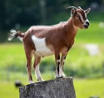

For other uses, see Lion (disambiguation).
Not to be confused with Mountain lion.
"King of beasts" redirects here. For the 2018 film, see King of Beasts. For the One Piece character, see King of Beasts (One Piece).
Lion
Temporal range: Pleistocene–Present
PreꞒꞒOSDCPTJKPgN
↓
Male in Serengeti National Park, Tanzania
Female in Okonjima, Namibia
Conservation status
Vulnerable (IUCN 3.1)[2]
CITES Appendix II (CITES)[a][2]
Scientific classificationEdit this classification
Domain: Eukaryota
Kingdom: Animalia
Phylum: Chordata
Class: Mammalia
Order: Carnivora
Suborder: Feliformia
Family: Felidae
Subfamily: Pantherinae
Genus: Panthera
Species: P. leo[1]
Binomial name
Panthera leo[1]
(Linnaeus, 1758)[3]
Subspecies
P. l. leo
P. l. melanochaita
†P. l. sinhaleyus
Historical lion distribution
The lion (Panthera leo) is a large cat of the genus Panthera, native to Africa and India. It has a muscular, broad-chested body; a short, rounded head; round ears; and a dark, hairy tuft at the tip of its tail. It is sexually dimorphic; adult male lions are larger than females and have a prominent mane. It is a social species, forming groups called prides. A lion's pride consists of a few adult males, related females, and cubs. Groups of female lions usually hunt together, preying mostly on medium-sized and large ungulates. The lion is an apex and keystone predator.
The lion inhabits grasslands, savannahs, and shrublands. It is usually more diurnal than other wild cats, but when persecuted, it adapts to being active at night and at twilight. During the Neolithic period, the lion ranged throughout Africa and Eurasia, from Southeast Europe to India, but it has been reduced to fragmented populations in sub-Saharan Africa and one population in western India. It has been listed as Vulnerable on the IUCN Red List since 1996 because populations in African countries have declined by about 43% since the early 1990s. Lion populations are untenable outside designated protected areas. Although the cause of the decline is not fully understood, habitat loss and conflicts with humans are the greatest causes for concern.
One of the most widely recognised animal symbols in human culture, the lion has been extensively depicted in sculptures and paintings, on national flags, and in literature and films. Lions have been kept in menageries since the time of the Roman Empire and have been a key species sought for exhibition in zoological gardens across the world since the late 18th century. Cultural depictions of lions were prominent in Ancient Egypt, and depictions have occurred in virtually all ancient and medieval cultures in the lion's historic and current range.
Etymology
The English word lion is derived via Anglo-Norman liun from Latin leōnem (nominative: leō), which in turn was a borrowing from Ancient Greek λέων léōn. The Hebrew word לָבִיא lavi may also be related.[4] The generic name Panthera is traceable to the classical Latin word 'panthēra' and the ancient Greek word πάνθηρ 'panther'.[5]
Taxonomy
The upper cladogram is based on the 2006 study,[6][7] the lower one on the 2010[8] and 2011[9] studies.
Felis leo was the scientific name used by Carl Linnaeus in 1758, who described the lion in his work Systema Naturae.[3] The genus name Panthera was coined by Lorenz Oken in 1816.[10] Between the mid-18th and mid-20th centuries, 26 lion specimens were described and proposed as subspecies, of which 11 were recognised as valid in 2005.[1] They were distinguished mostly by the size and colour of their manes and skins.[11]
Subspecies
Range map showing distribution of subspecies and clades
In the 19th and 20th centuries, several lion type specimens were described and proposed as subspecies, with about a dozen recognised as valid taxa until 2017.[1] Between 2008 and 2016, IUCN Red List assessors used only two subspecific names: P. l. leo for African lion populations, and P. l. persica for the Asiatic lion population.[2][12][13] In 2017, the Cat Classification Task Force of the Cat Specialist Group revised lion taxonomy, and recognises two subspecies based on results of several phylogeographic studies on lion evolution, namely:[14]
P. l. leo (Linnaeus, 1758) − the nominate lion subspecies includes the Asiatic lion, the regionally extinct Barbary lion, and lion populations in West and northern parts of Central Africa.[14] Synonyms include P. l. persica (Meyer, 1826), P. l. senegalensis (Meyer, 1826), P. l. kamptzi (Matschie, 1900), and P. l. azandica (Allen, 1924).[1] Multiple authors referred to it as 'northern lion' and 'northern subspecies'.[15][16]
P. l. melanochaita (Smith, 1842) − includes the extinct Cape lion and lion populations in East and Southern African regions.[14] Synonyms include P. l. somaliensis (Noack 1891), P. l. massaica (Neumann, 1900), P. l. sabakiensis (Lönnberg, 1910), P. l. bleyenberghi (Lönnberg, 1914), P. l. roosevelti (Heller, 1914), P. l. nyanzae (Heller, 1914), P. l. hollisteri (Allen, 1924), P. l. krugeri (Roberts, 1929), P. l. vernayi (Roberts, 1948), and P. l. webbiensis (Zukowsky, 1964).[1][11] It has been referred to as 'southern subspecies' and 'southern lion'.[16]
However, there seems to be some degree of overlap between both groups in northern Central Africa. DNA analysis from a more recent study indicates that Central African lions are derived from both northern and southern lions, as they cluster with P. leo leo in mtDNA-based phylogenies whereas their genomic DNA indicates a closer relationship with P. leo melanochaita.[17]
Lion samples from some parts of the Ethiopian Highlands cluster genetically with those from Cameroon and Chad, while lions from other areas of Ethiopia cluster with samples from East Africa. Researchers, therefore, assume Ethiopia is a contact zone between the two subspecies.[18] Genome-wide data of a wild-born historical lion sample from Sudan showed that it clustered with P. l. leo in mtDNA-based phylogenies, but with a high affinity to P. l. melanochaita. This result suggested that the taxonomic position of lions in Central Africa may require revision.[19]
Fossil records
Skull of an American lion on display at the National Museum of Natural History
Other lion subspecies or sister species to the modern lion existed in prehistoric times:[20]
P. l. sinhaleyus was a fossil carnassial excavated in Sri Lanka, which was attributed to a lion. It is thought to have become extinct around 39,000 years ago.[21]
P. fossilis was larger than the modern lion and lived in the Middle Pleistocene. Bone fragments were excavated in caves in the United Kingdom, Germany, Italy and Czech Republic.[22][23]
P. spelaea, or the cave lion, lived in Eurasia and Beringia during the Late Pleistocene. It became extinct due to climate warming or human expansion latest by 11,900 years ago.[24] Bone fragments excavated in European, North Asian, Canadian and Alaskan caves indicate that it ranged from Europe across Siberia into western Alaska.[25] It likely derived from P. fossilis,[26] and was genetically isolated and highly distinct from the modern lion in Africa and Eurasia.[27][26] It is depicted in Paleolithic cave paintings, ivory carvings, and clay busts.[28]
P. atrox, or the American lion, ranged in the Americas from Canada to possibly Patagonia during the Late Pleistocene.[29] It diverged from the cave lion around 165,000 years ago.[30] A fossil from Edmonton dates to 11,355 ± 55 years ago.[31]
Evolution
red Panthera spelaea
blue Panthera atrox
green Panthera leo
Maximal range of the modern lion
and its prehistoric relatives
in the late Pleistocene
The Panthera lineage is estimated to have genetically diverged from the common ancestor of the Felidae around 9.32 to 4.47 million years ago to 11.75 to 0.97 million years ago.[6][32][33] Results of analyses differ in the phylogenetic relationship of the lion; it was thought to form a sister group with the jaguar that diverged 3.46 to 1.22 million years ago,[6] but also with the leopard that diverged 3.1 to 1.95 million years ago[8][9] to 4.32 to 0.02 million years ago. Hybridisation between lion and snow leopard ancestors possibly continued until about 2.1 million years ago.[33] The lion-leopard clade was distributed in the Asian and African Palearctic since at least the early Pliocene.[34] The earliest fossils recognisable as lions were found at Olduvai Gorge in Tanzania and are estimated to be up to 2 million years old.[32]
Estimates for the divergence time of the modern and cave lion lineages range from 529,000 to 392,000 years ago based on mutation rate per generation time of the modern lion. There is no evidence for gene flow between the two lineages, indicating that they did not share the same geographic area.[19] The Eurasian and American cave lions became extinct at the end of the last glacial period without mitochondrial descendants on other continents.[27][35][36] The modern lion was probably widely distributed in Africa during the Middle Pleistocene and started to diverge in sub-Saharan Africa during the Late Pleistocene. Lion populations in East and Southern Africa became separated from populations in West and North Africa when the equatorial rainforest expanded 183,500 to 81,800 years ago.[37] They shared a common ancestor probably between 98,000 and 52,000 years ago.[19] Due to the expansion of the Sahara between 83,100 and 26,600 years ago, lion populations in West and North Africa became separated. As the rainforest decreased and thus gave rise to more open habitats, lions moved from West to Central Africa. Lions from North Africa dispersed to southern Europe and Asia between 38,800 and 8,300 years ago.[37]
Extinction of lions in southern Europe, North Africa and the Middle East interrupted gene flow between lion populations in Asia and Africa. Genetic evidence revealed numerous mutations in lion samples from East and Southern Africa, which indicates that this group has a longer evolutionary history than genetically less diverse lion samples from Asia and West and Central Africa.[38] A whole genome-wide sequence of lion samples showed that samples from West Africa shared alleles with samples from Southern Africa, and samples from Central Africa shared alleles with samples from Asia. This phenomenon indicates that Central Africa was a melting pot of lion populations after they had become isolated, possibly migrating through corridors in the Nile Basin during the early Holocene.[19]
Hybrids
Further information: Panthera hybrid
In zoos, lions have been bred with tigers to create hybrids for the curiosity of visitors or for scientific purpose.[39][40] The liger is bigger than a lion and a tiger, whereas most tigons are relatively small compared to their parents because of reciprocal gene effects.[41][42] The leopon is a hybrid between a lion and leopard.[43]
Description
A tuft at the end of the tail is a distinct characteristic of the lion.
Skeleton
The lion is a muscular, broad-chested cat with a short, rounded head, a reduced neck, and round ears; males have broader heads. The fur varies in colour from light buff to silvery grey, yellowish red, and dark brown. The colours of the underparts are generally lighter. A new-born lion has dark spots, which fade as the cub reaches adulthood, although faint spots may still be seen on the legs and underparts.[44][45] The tail of all lions ends in a dark, hairy tuft that, in some lions, conceals an approximately 5 mm (0.20 in)-long, hard "spine" or "spur" composed of dermal papillae.[46] The functions of the spur are unknown. The tuft is absent at birth and develops at around 5+1⁄2 months of age. It is readily identifiable at the age of seven months.[47]
Its skull is very similar to that of the tiger, although the frontal region is usually more depressed and flattened and has a slightly shorter postorbital region and broader nasal openings than those of the tiger. Due to the amount of skull variation in the two species, usually only the structure of the lower jaw can be used as a reliable indicator of species.[48][49]
The skeletal muscles of the lion make up 58.8% of its body weight and represent the highest percentage of muscles among mammals.[50][51] The lion has a high concentration of fast twitch muscle fibres, giving them quick bursts of speed but less stamina.[52][53]
Size
Among felids, the lion is second only to the tiger in size.[45] The size and weight of adult lions vary across its range and habitats.[54][55][56][57] Accounts of a few individuals that were larger than average exist from Africa and India.[44][58][59][60]
Average Female lions Male lions
Head-and-body length 160–184 cm (63–72 in)[61] 184–208 cm (72–82 in)[61]
Tail length 72–89.5 cm (28.3–35.2 in)[61] 82.5–93.5 cm (32.5–36.8 in)[61]
Weight 118.37–143.52 kg (261.0–316.4 lb) in Southern Africa,[54]
119.5 kg (263 lb) in East Africa,[54]
110–120 kg (240–260 lb) in India[55] 186.55–225 kg (411.3–496.0 lb) in Southern Africa,[54]
174.9 kg (386 lb) in East Africa,[54]
160–190 kg (350–420 lb) in India[55]
Mane
A six-year-old male in Phinda Private Game Reserve
Young male in Pendjari National Park
The male lion's mane is the most recognisable feature of the species.[11] It may have evolved around 320,000–190,000 years ago.[62] It grows downwards and backwards, covering most of the head, neck, shoulders, and chest. The mane is typically brownish and tinged with yellow, rust, and black hairs.[45] Mutations in the genes microphthalmia-associated transcription factor and tyrosinase are possibly responsible for the colour of manes.[63][64] It starts growing when lions enter adolescence, when testosterone levels increase, and reach their full size at around four years old.[65] Cool ambient temperatures in European and North American zoos may result in a heavier mane.[66] On average, Asiatic lions have sparser manes than African lions.[67]
This feature likely evolved to signal the fitness of males to females. Males with darker manes appear to have greater reproductive success and are more likely to remain in a pride for longer. They have longer and thicker hair and higher testosterone levels, but they are also more vulnerable to heat stress.[68][69] The core body temperature does apparently not increase regardless of sex, season, feeding time, length and colour of mane, but only surface temperature is affected.[70] Unlike in other felid species, female lions consistently interact with multiple males at once.[71] Another hypothesis suggests that the mane also serves to protect the neck in fights, but this is disputed.[72][73] During fights, including those involving maneless females and adolescents, the neck is not targeted as much as the face, back, and hindquarters. Injured lions also begin to lose their manes.[74]
Almost all male lions in Pendjari National Park are either maneless or have very short manes.[75] Maneless lions have also been reported in Senegal, in Sudan's Dinder National Park and in Tsavo East National Park, Kenya.[76] Castrated lions often have little to no mane because the removal of the gonads inhibits testosterone production.[77] Rarely, both wild and captive lionesses have manes.[78][79] Increased testosterone may be the cause of maned lionesses reported in northern Botswana.[80]
Colour variation
Further information: White lion
The white lion is a rare morph with a genetic condition called leucism, which is caused by a double recessive allele. It is not albino; it has normal pigmentation in the eyes and skin. White lions have occasionally been encountered in and around Kruger National Park and the adjacent Timbavati Private Game Reserve in eastern South Africa. They were removed from the wild in the 1970s, thus decreasing the white lion gene pool. Nevertheless, 17 births have been recorded in five prides between 2007 and 2015.[81] White lions are selected for breeding in captivity.[82] They have reportedly been bred in camps in South Africa for use as trophies to be killed during canned hunts.[83]
Distribution and habitat
Lion in Gir National Park, India
African lions live in scattered populations across sub-Saharan Africa. The lion prefers grassy plains and savannahs, scrub bordering rivers, and open woodlands with bushes. It rarely enters closed forests. On Mount Elgon, the lion has been recorded up to an elevation of 3,600 m (11,800 ft) and close to the snow line on Mount Kenya.[44] Savannahs with an annual rainfall of 300 to 1,500 mm (12 to 59 in) make up the majority of lion habitat in Africa, estimated at 3,390,821 km2 (1,309,203 sq mi) at most, but remnant populations are also present in tropical moist forests in West Africa and montane forests in East Africa.[84] The Asiatic lion now survives only in and around Gir National Park in Gujarat, western India. Its habitat is a mixture of dry savannah forest and very dry, deciduous scrub forest.[12]
Historical range
In Africa, the range of the lion originally spanned most of the central African rainforest zone and the Sahara desert.[85] In the 1960s, it became extinct in North Africa, except in the southern part of Sudan.[86][84][87]
During the mid-Holocene, around 8,000-6,000 years ago, the range of lions expanded into Southeastern and Eastern Europe, partially re-occupying the range of the now extinct cave lion.[88] In Hungary, the modern lion was present from about 4,500 to 3,200 years Before Present.[89] In Ukraine, the modern lion was present from about 6,400 to 2,000 years Before Present.[88] In Greece, it was common, as reported by Herodotus in 480 BC; it was considered rare by 300 BC and extirpated by AD 100.[44]
In Asia the lion once ranged in regions where climatic conditions supported an abundance of prey.[90] It was present in the Caucasus until the 10th century.[49] It lived in Palestine until the Middle Ages and in Southwest Asia until the late 19th century. By the late 19th century, it had been extirpated in most of Turkey.[91] The last live lion in Iran was sighted in 1942, about 65 km (40 mi) northwest of Dezful,[92] although the corpse of a lioness was found on the banks of the Karun river in Khuzestan province in 1944.[93] It once ranged from Sind and Punjab in Pakistan to Bengal and the Narmada River in central India.[94]
Behaviour and ecology
Lions spend much of their time resting; they are inactive for about twenty hours per day.[95] Although lions can be active at any time, their activity generally peaks after dusk with a period of socialising, grooming, and defecating. Intermittent bursts of activity continue until dawn, when hunting most often takes place. They spend an average of two hours a day walking and fifty minutes eating.[96]
Group organisation
Lion pride in Etosha National Park
A lioness (left) and two males in Masai Mara
The lion is the most social of all wild felid species, living in groups of related individuals with their offspring. Such a group is called a "pride". Groups of male lions are called "coalitions".[97] Females form the stable social unit in a pride and do not tolerate outside females.[98] The majority of females remain in their birth prides while all males and some females will disperse.[99] The average pride consists of around 15 lions, including several adult females and up to four males and their cubs of both sexes. Large prides, consisting of up to 30 individuals, have been observed.[100] The sole exception to this pattern is the Tsavo lion pride that always has just one adult male.[101] Prides act as fission–fusion societies, and members will split into subgroups that keep in contact with roars.[102]
Nomadic lions range widely and move around sporadically, either in pairs or alone.[97] Pairs are more frequent among related males. A lion may switch lifestyles; nomads can become residents and vice versa.[103] Interactions between prides and nomads tend to be hostile, although pride females in estrus allow nomadic males to approach them.[104] Males spend years in a nomadic phase before gaining residence in a pride.[105] A study undertaken in the Serengeti National Park revealed that nomadic coalitions gain residency at between 3.5 and 7.3 years of age.[106] In Kruger National Park, dispersing male lions move more than 25 km (16 mi) away from their natal pride in search of their own territory. Female lions stay closer to their natal pride. Therefore, female lions in an area are more closely related to each other than male lions in the same area.[107]
The evolution of sociability in lions was likely driven both by high population density and the clumped resources of savannah habitats. The larger the pride, the more high-quality territory they can defend; "hotspots" being near river confluences, where the cats have better access to water, prey and shelter (via vegetation).[108][109] The area occupied by a pride is called a "pride area" whereas that occupied by a nomad is a "range".[97] Males associated with a pride patrol the fringes.[45] Both males and females defend the pride against intruders, but the male lion is better-suited for this purpose due to its stockier, more powerful build. Some individuals consistently lead the defence against intruders, while others lag behind.[110] Lions tend to assume specific roles in the pride; slower-moving individuals may provide other valuable services to the group.[111] Alternatively, there may be rewards associated with being a leader that fends off intruders; the rank of lionesses in the pride is reflected in these responses.[112] The male or males associated with the pride must defend their relationship with the pride from outside males who may attempt to usurp them.[103] Dominance hierarchies do not appear to exist among individuals of either sex in a pride.[113]
Asiatic lion prides differ in group composition. Male Asiatic lions are solitary or associate with up to three males, forming a loose pride while females associate with up to 12 other females, forming a stronger pride together with their cubs. Female and male lions associate only when mating.[114] Coalitions of males hold territory for a longer time than single lions. Males in coalitions of three or four individuals exhibit a pronounced hierarchy, in which one male dominates the others and mates more frequently.[115]
Hunting and diet
A skeletal mount of a lion attacking a common eland, on display at The Museum of Osteology
Four lionesses catching a buffalo in the Serengeti
Lions feeding on a zebra
The lion is a generalist hypercarnivore and is considered to be both an apex and keystone predator due to its wide prey spectrum.[116][117] Its prey consists mainly of medium-sized to large ungulates, particularly blue wildebeest, plains zebra, African buffalo, gemsbok and giraffe. It also frequently takes common warthog despite it being much smaller.[118] In India, chital and sambar deer are the most common wild prey,[45][118][119] while livestock contributes significantly to lion kills outside protected areas.[120] It usually avoids fully grown adult elephants, rhinoceros and hippopotamus and small prey like dik-dik, hyraxes, hares and monkeys. Unusual prey include porcupines and small reptiles. Lions kill other predators but seldom consume them.[121]
Young lions first display stalking behaviour at around three months of age, although they do not participate in hunting until they are almost a year old and begin to hunt effectively when nearing the age of two.[122] Single lions are capable of bringing down zebra and wildebeest, while larger prey like buffalo and giraffe are riskier.[103] In Chobe National Park, large prides have been observed hunting African bush elephants up to around 15 years old in exceptional cases, with the victims being calves, juveniles, and even subadults.[123][124] In typical group hunts, each lioness has a favoured position in the group, either stalking prey on the "wing", then attacking, or moving a smaller distance in the centre of the group and capturing prey fleeing from other lionesses. Males attached to prides do not usually participate in group hunting.[125] Some evidence suggests, however, that males are just as successful as females; they are typically solo hunters who ambush prey in small bushland.[126] They may join in the hunting of large, slower-moving prey like buffalo; and even hunt them on their own. Moderately-sized hunting groups generally have higher success rates than lone females and larger groups.[127]
Lions are not particularly known for their stamina. For instance, a lioness's heart comprises only 0.57% of her body weight and a male's is about 0.45% of his body weight, whereas a hyena's heart comprises almost 1% of its body weight.[128] Thus, lions run quickly only in short bursts at about 48–59 km/h (30–37 mph) and need to be close to their prey before starting the attack.[129] They take advantage of factors that reduce visibility; many kills take place near some form of cover or at night.[130] One study in 2018 recorded a lion running at a top speed of 74.1 km/h (46.0 mph).[131] The lion accelerates at the start of the chase by 9.5 m/s², whereas zebras, wildebeest and Thomson's gazelle accelerate by 5 m/s², 5.6 m/s² and 4.5 m/s², respectively; acceleration appears to be more important than steady displacement speed in lion hunts.[132] The lion's attack is short and powerful; it attempts to catch prey with a fast rush and final leap, usually pulls it down by the rump, and kills with a clamping bite to the throat or muzzle. It can hold the prey's throat for up to 13 minutes, until the prey stops moving.[133] It has a bite force from 1593.8 to 1768 Newtons at the canine tip and up 4167.6 Newtons at the carnassial notch.[134][135][136]
Male lion and cub with mostly eaten buffalo carcass in Sabi Sand Game Reserve
Lions typically consume prey at the location of the hunt but sometimes drag large prey into cover.[137] They tend to squabble over kills, particularly the males. Cubs suffer most when food is scarce but otherwise all pride members eat their fill, including old and crippled lions, which can live on leftovers.[103] Large kills are shared more widely among pride members.[138] An adult lioness requires an average of about 5 kg (11 lb) of meat per day while males require about 7 kg (15 lb).[139] Lions gorge themselves and eat up to 30 kg (66 lb) in one session.[93] If it is unable to consume all of the kill, it rests for a few hours before continuing to eat. On hot days, the pride retreats to shade with one or two males standing guard.[137] Lions defend their kills from scavengers such as vultures and hyenas.[103]
Lions scavenge on carrion when the opportunity arises, scavenging animals dead from natural causes such as disease or those that were killed by other predators. Scavenging lions keep a constant lookout for circling vultures, which indicate the death or distress of an animal.[140] Most carrion on which both hyenas and lions feed upon are killed by hyenas rather than lions.[57] Carrion is thought to provide a large part of lion diet.[141]
Predatory competition
Lioness chasing a spotted hyena in Kruger National Park
Lioness stealing a kill from a leopard in Kruger National Park
Lions and spotted hyenas occupy a similar ecological niche and compete for prey and carrion; a review of data across several studies indicates a dietary overlap of 58.6%.[142] Lions typically ignore hyenas unless they are on a kill or are being harassed, while the latter tend to visibly react to the presence of lions with or without the presence of food. In the Ngorongoro crater, lions subsist largely on kills stolen from hyenas, causing them to increase their kill rate.[143] In Botswana's Chobe National Park, the situation is reversed as hyenas there frequently challenge lions and steal their kills, obtaining food from 63% of all lion kills.[144] When confronted on a kill, hyenas may either leave or wait patiently at a distance of 30–100 m (98–328 ft) until the lions have finished.[145] Hyenas may feed alongside lions and force them off a kill. The two species attack one another even when there is no food involved for no apparent reason.[146] Lions can account for up to 71% of hyena deaths in Etosha National Park. Hyenas have adapted by frequently mobbing lions that enter their home ranges.[147] When the lion population in Kenya's Masai Mara National Reserve declined, the spotted hyena population increased rapidly.[148]
Lions tend to dominate cheetahs and leopards, steal their kills and kill their cubs and even adults when given the chance.[149] Cheetahs often lose their kills to lions or other predators.[150] A study in the Serengeti ecosystem revealed that lions killed at least 17 of 125 cheetah cubs born between 1987 and 1990.[151] Cheetahs avoid their competitors by hunting at different times and habitats.[152] Leopards, by contrast, do not appear to be motivated by an avoidance of lions, as they use heavy vegetation regardless of whether lions are present in an area and both cats are active around the same time of day. In addition, there is no evidence that lions affect leopard abundance.[153] Leopards take refuge in trees, though lionesses occasionally attempt to climb up and retrieve their kills.[154]
Lions similarly dominate African wild dogs, taking their kills and dispatching pups or adult dogs. Population densities of wild dogs are low in areas where lions are more abundant.[155] However, there are a few reported cases of old and wounded lions falling prey to wild dogs.[156][157]
Reproduction and life cycle
Lions mating at Masai Mara
A lion cub in Masai Mara
Most lionesses reproduce by the time they are four years of age.[158] Lions do not mate at a specific time of year and the females are polyestrous.[159] Like those of other cats, the male lion's penis has spines that point backward. During withdrawal of the penis, the spines rake the walls of the female's vagina, which may cause ovulation.[160][161] A lioness may mate with more than one male when she is in heat.[162] Lions of both sexes may be involved in group homosexual and courtship activities. Males will also head-rub and roll around with each other before mounting each other.[163][164] Generation length of the lion is about seven years.[165] The average gestation period is around 110 days;[159] the female gives birth to a litter of between one and four cubs in a secluded den, which may be a thicket, a reed-bed, a cave, or some other sheltered area, usually away from the pride. She will often hunt alone while the cubs are still helpless, staying relatively close to the den.[166] Lion cubs are born blind, their eyes opening around seven days after birth. They weigh 1.2–2.1 kg (2.6–4.6 lb) at birth and are almost helpless, beginning to crawl a day or two after birth and walking around three weeks of age.[167] To avoid a buildup of scent attracting the attention of predators, the lioness moves her cubs to a new den site several times a month, carrying them one-by-one by the nape of the neck.[166]
Usually, the mother does not integrate herself and her cubs back into the pride until the cubs are six to eight weeks old.[166] Sometimes the introduction to pride life occurs earlier, particularly if other lionesses have given birth at about the same time.[103][168] When first introduced to the rest of the pride, lion cubs lack confidence when confronted with adults other than their mother. They soon begin to immerse themselves in the pride life, however, playing among themselves or attempting to initiate play with the adults.[168] Lionesses with cubs of their own are more likely to be tolerant of another lioness's cubs than lionesses without cubs. Male tolerance of the cubs varies—one male could patiently let the cubs play with his tail or his mane, while another may snarl and bat the cubs away.[169]
Video of a lioness and her cubs in Phinda Reserve
Pride lionesses often synchronise their reproductive cycles and communal rearing and suckling of the young, which suckle indiscriminately from any or all of the nursing females in the pride. The synchronisation of births is advantageous because the cubs grow to being roughly the same size and have an equal chance of survival, and sucklings are not dominated by older cubs.[103][168] Weaning occurs after six or seven months. Male lions reach maturity at about three years of age and at four to five years are capable of challenging and displacing adult males associated with another pride. They begin to age and weaken at between 10 and 15 years of age at the latest.[170]
When one or more new males oust the previous males associated with a pride, the victors often kill any existing young cubs, perhaps because females do not become fertile and receptive until their cubs mature or die. Females often fiercely defend their cubs from a usurping male but are rarely successful unless a group of three or four mothers within a pride join forces against the male.[171] Cubs also die from starvation and abandonment, and predation by leopards, hyenas and wild dogs. Male cubs are excluded from their maternal pride when they reach maturity at around two or three years of age,[172] while some females may leave when they reach the age of two.[99] When a new male lion takes over a pride, adolescents both male and female may be evicted.[173]
Health and mortality
Lions in a tree near Lake Nakuru
Lions may live 12–17 years in the wild.[45] Although adult lions have no natural predators, evidence suggests most die violently from attacks by humans or other lions.[174] Lions often inflict serious injuries on members of other prides they encounter in territorial disputes or members of the home pride when fighting at a kill.[175] Crippled lions and cubs may fall victim to hyenas and leopards or be trampled by buffalo or elephants. Careless lions may be maimed when hunting prey.[176] Nile crocodiles may also kill and eat lions, evidenced by the occasional lion claw found in crocodile stomachs.[177]
Ticks commonly infest the ears, neck and groin regions of the lions.[178][179] Adult forms of several tapeworm species of the genus Taenia have been isolated from lion intestines, having been ingested as larvae in antelope meat.[180] Lions in the Ngorongoro Crater were afflicted by an outbreak of stable fly (Stomoxys calcitrans) in 1962, resulting in lions becoming emaciated and covered in bloody, bare patches. Lions sought unsuccessfully to evade the biting flies by climbing trees or crawling into hyena burrows; many died or migrated and the local population dropped from 70 to 15 individuals.[181] A more recent outbreak in 2001 killed six lions.[182]
Captive lions have been infected with canine distemper virus (CDV) since at least the mid-1970s.[183] CDV is spread by domestic dogs and other carnivores; a 1994 outbreak in Serengeti National Park resulted in many lions developing neurological symptoms such as seizures. During the outbreak, several lions died from pneumonia and encephalitis.[184] Feline immunodeficiency virus and lentivirus also affect captive lions.[185][186]
Communication
Head rubbing among pride members is a common social behaviour.
A male lion raises his tail while marking his territory.
When resting, lion socialisation occurs through a number of behaviours; the animal's expressive movements are highly developed. The most common peaceful, tactile gestures are head rubbing and social licking,[187] which have been compared with the role of allogrooming among primates.[188] Head rubbing, nuzzling the forehead, face and neck against another lion appears to be a form of greeting[189] and is seen often after an animal has been apart from others or after a fight or confrontation. Males tend to rub other males, while cubs and females rub females.[190] Social licking often occurs in tandem with head rubbing; it is generally mutual and the recipient appears to express pleasure. The head and neck are the most common parts of the body licked; this behaviour may have arisen out of utility because lions cannot lick these areas themselves.[191]
Lion roar
Duration: 10 seconds.0:10
A captive lion roaring
Problems playing this file? See media help.
Lions have an array of facial expressions and body postures that serve as visual gestures.[192] A common facial expression is the "grimace face" or flehmen response, which a lion makes when sniffing chemical signals and involves an open mouth with bared teeth, raised muzzle, wrinkled nose, closed eyes and relaxed ears.[193] Lions also use chemical and visual marking;[192] males spray urine[194][195] and scrape plots of ground and objects within the territory.[192]
The lion's repertoire of vocalisations is large; variations in intensity and pitch appear to be central to communication. Most lion vocalisations are variations of growling, snarling, meowing and roaring. Other sounds produced include puffing, bleating and humming. Roaring is used to advertise its presence. Lions most often roar at night, a sound that can be heard from a distance of 8 kilometres (5 mi).[196] They tend to roar in a very characteristic manner starting with a few deep, long roars that subside into grunts.[197][198]
Conservation
The lion is listed as Vulnerable on the IUCN Red List. The Indian population is listed on CITES Appendix I and the African population on CITES Appendix II.[2]
In Africa
Video of a wild lioness
Several large and well-managed protected areas in Africa host large lion populations. Where an infrastructure for wildlife tourism has been developed, cash revenue for park management and local communities is a strong incentive for lion conservation.[2] Most lions now live in East and Southern Africa; their numbers are rapidly decreasing, and fell by an estimated 30–50% in the late half of the 20th century. Primary causes of the decline include disease and human interference.[2] In 1975, it was estimated that since the 1950s, lion numbers had decreased by half to 200,000 or fewer.[199] Estimates of the African lion population range between 16,500 and 47,000 living in the wild in 2002–2004.[200][86]
In the Republic of the Congo, Odzala-Kokoua National Park was considered a lion stronghold in the 1990s. By 2014, no lions were recorded in the protected area so the population is considered locally extinct.[201] The West African lion population is isolated from the one in Central Africa, with little or no exchange of breeding individuals. In 2015, it was estimated that this population consists of about 400 animals, including fewer than 250 mature individuals. They persist in three protected areas in the region, mostly in one population in the W A P protected area complex, shared by Benin, Burkina Faso and Niger. This population is listed as Critically Endangered.[13] Field surveys in the WAP ecosystem revealed that lion occupancy is lowest in the W National Park, and higher in areas with permanent staff and thus better protection.[202]
A population occurs in Cameroon's Waza National Park, where between approximately 14 and 21 animals persisted as of 2009.[203] In addition, 50 to 150 lions are estimated to be present in Burkina Faso's Arly-Singou ecosystem.[204] In 2015, an adult male lion and a female lion were sighted in Ghana's Mole National Park. These were the first sightings of lions in the country in 39 years.[205] In the same year, a population of up to 200 lions that was previously thought to have been extirpated was filmed in the Alatash National Park, Ethiopia, close to the Sudanese border.[206][207]
In 2005, Lion Conservation Strategies were developed for West and Central Africa, and or East and Southern Africa. The strategies seek to maintain suitable habitat, ensure a sufficient wild prey base for lions, reduce factors that lead to further fragmentation of populations, and make lion–human coexistence sustainable.[208][209] Lion depredation on livestock is significantly reduced in areas where herders keep livestock in improved enclosures. Such measures contribute to mitigating human–lion conflict.[210]
In Asia
A lioness in Gir National Park
The last refuge of the Asiatic lion population is the 1,412 km2 (545 sq mi) Gir National Park and surrounding areas in the region of Saurashtra or Kathiawar Peninsula in Gujarat State, India. The population has risen from approximately 180 lions in 1974 to about 400 in 2010.[211] It is geographically isolated, which can lead to inbreeding and reduced genetic diversity. Since 2008, the Asiatic lion has been listed as Endangered on the IUCN Red List.[12] By 2015, the population had grown to 523 individuals inhabiting an area of 7,000 km2 (2,700 sq mi) in Saurashtra.[212][213][214] In 2017, about 650 individuals were recorded during the Asiatic Lion Census.[215]
The presence of numerous human settlements close to Gir National Park resulted in conflict between lions, local people and their livestock.[216][212] Some consider the presence of lions a benefit, as they keep populations of crop damaging herbivores in check.[217]
Captive breeding
Two captive male Asiatic lions in Sanjay Gandhi National Park, India
Lions imported to Europe before the middle of the 19th century were possibly foremost Barbary lions from North Africa, or Cape lions from Southern Africa.[218] Another 11 animals thought to be Barbary lions kept in Addis Ababa Zoo are descendants of animals owned by Emperor Haile Selassie. WildLink International in collaboration with Oxford University launched an ambitious International Barbary Lion Project with the aim of identifying and breeding Barbary lions in captivity for eventual reintroduction into a national park in the Atlas Mountains of Morocco.[219] However, a genetic analysis showed that the captive lions at Addis Ababa Zoo were not Barbary lions, but rather closely related to wild lions in Chad and Cameroon.[220]
In 1982, the Association of Zoos and Aquariums started a Species Survival Plan for the Asiatic lion to increase its chances of survival. In 1987, it was found that most lions in North American zoos were hybrids between African and Asiatic lions.[221] Breeding programs need to note origins of the participating animals to avoid cross-breeding different subspecies and thus reducing their conservation value.[222] Captive breeding of lions was halted to eliminate individuals of unknown origin and pedigree. Wild-born lions were imported to American zoos from Africa between 1989 and 1995. Breeding was continued in 1998 in the frame of an African lion Species Survival Plan.[223]
About 77% of the captive lions registered in the International Species Information System in 2006 were of unknown origin; these animals might have carried genes that are extinct in the wild and may therefore be important to the maintenance of the overall genetic variability of the lion.[66]
Interactions with humans
In zoos and circuses
Lion at Melbourne Zoo
19th-century etching of a lion tamer in a cage with lions and tigers
Lions are part of a group of exotic animals that have been central to zoo exhibits since the late 18th century. Although many modern zoos are more selective about their exhibits,[224] there are more than 1,000 African and 100 Asiatic lions in zoos and wildlife parks around the world. They are considered an ambassador species and are kept for tourism, education and conservation purposes.[225] Lions can live over twenty years in captivity; for example, three sibling lions at the Honolulu Zoo lived to the age of 22 in 2007.[226][227]
The first European "zoos" spread among noble and royal families in the 13th century, and until the 17th century were called seraglios. At that time, they came to be called menageries, an extension of the cabinet of curiosities. They spread from France and Italy during the Renaissance to the rest of Europe.[228] In England, although the seraglio tradition was less developed, lions were kept at the Tower of London in a seraglio established by King John in the 13th century;[229][230] this was probably stocked with animals from an earlier menagerie started in 1125 by Henry I at his hunting lodge in Woodstock, Oxfordshire, where according to William of Malmesbury lions had been stocked.[231]
Lions were kept in cramped and squalid conditions at London Zoo until a larger lion house with roomier cages was built in the 1870s.[232] Further changes took place in the early 20th century when Carl Hagenbeck designed enclosures with concrete "rocks", more open space and a moat instead of bars, more closely resembling a natural habitat. Hagenbeck designed lion enclosures for both Melbourne Zoo and Sydney's Taronga Zoo; although his designs were popular, the use of bars and caged enclosures prevailed in many zoos until the 1960s.[233] In the late 20th century, larger, more natural enclosures and the use of wire mesh or laminated glass instead of lowered dens allowed visitors to come closer than ever to the animals; some attractions such as the Cat Forest/Lion Overlook of Oklahoma City Zoological Park placed the den on ground level, higher than visitors.[234]
Lion taming has been part of both established circuses and individual acts such as Siegfried & Roy. The practice began in the early 19th century by Frenchman Henri Martin and American Isaac Van Amburgh, who both toured widely and whose techniques were copied by a number of followers.[235] Van Amburgh performed before Queen Victoria in 1838 when he toured Great Britain. Martin composed a pantomime titled Les Lions de Mysore ("the lions of Mysore"), an idea Amburgh quickly borrowed. These acts eclipsed equestrianism acts as the central display of circus shows and entered public consciousness in the early 20th century with cinema. In demonstrating the superiority of human over animal, lion taming served a purpose similar to animal fights of previous centuries.[235] The ultimate proof of a tamer's dominance and control over a lion is demonstrated by the placing of the tamer's head in the lion's mouth. The now-iconic lion tamer's chair was possibly first used by American Clyde Beatty (1903–1965).[236]
Hunting and games
Main article: Lion hunting
See also: Lion baiting
Bas-relief of a wounded lioness from Nineveh, c. 645–635 BC
Lion hunting has occurred since ancient times and was often a royal tradition, intended to demonstrate the power of the king over nature. Such hunts took place in a reserved area in front of an audience. The monarch was accompanied by his men and controls were put in place to increase their safety and ease of killing. The earliest surviving record of lion hunting is an ancient Egyptian inscription dated circa 1380 BC that mentions Pharaoh Amenhotep III killing 102 lions in ten years "with his own arrows". The Assyrian emperor Ashurbanipal had one of his lion hunts depicted on a sequence of Assyrian palace reliefs c. 640 BC, known as the Lion Hunt of Ashurbanipal. Lions were also hunted during the Mughal Empire, where Emperor Jahangir is said to have excelled at it.[237] In Ancient Rome, lions were kept by emperors for hunts, gladiator fights and executions.[238]
The Maasai people have traditionally viewed the killing of lions as a rite of passage. Historically, lions were hunted by individuals, however, due to reduced lion populations, elders discourage solo lion hunts.[239] During the European colonisation of Africa in the 19th century, the hunting of lions was encouraged because they were considered pests and lion skins were sold for £1 each.[240] The widely reproduced imagery of the heroic hunter chasing lions would dominate a large part of the century.[241] Trophy hunting of lions in recent years has been met with controversy, notably with the killing of Cecil the lion in mid-2015.[242]
Man-eating
The Tsavo maneaters of East Africa on display in the Field Museum of Natural History in Chicago
Further information: Man-eater lions
Lions do not usually hunt humans but some (usually males) seem to seek them out. One well-publicised case is the Tsavo maneaters; in 1898, 28 officially recorded railway workers building the Uganda Railway were taken by lions over nine months during the construction of a bridge in Kenya.[243] The hunter who killed the lions wrote a book detailing the animals' predatory behaviour; they were larger than normal and lacked manes, and one seemed to suffer from tooth decay. The infirmity theory, including tooth decay, is not favoured by all researchers; an analysis of teeth and jaws of man-eating lions in museum collections suggests that while tooth decay may explain some incidents, prey depletion in human-dominated areas is a more likely cause of lion predation on humans.[244] Sick or injured animals may be more prone to man-eating but the behaviour is not unusual, nor necessarily aberrant.[245]
Lions' proclivity for man-eating has been systematically examined. American and Tanzanian scientists report that man-eating behaviour in rural areas of Tanzania increased greatly from 1990 to 2005. At least 563 villagers were attacked and many eaten over this period. The incidents occurred near Selous Game Reserve in Rufiji River and in Lindi Region near the Mozambican border. While the expansion of villages into bush country is one concern, the authors argue conservation policy must mitigate the danger because in this case, conservation contributes directly to human deaths. Cases in Lindi in which lions seize humans from the centres of substantial villages have been documented.[246] Another study of 1,000 people attacked by lions in southern Tanzania between 1988 and 2009 found that the weeks following the full moon, when there was less moonlight, were a strong indicator of increased night-time attacks on people.[247]
According to Robert R. Frump, Mozambican refugees regularly crossing Kruger National Park, South Africa, at night are attacked and eaten by lions; park officials have said man-eating is a problem there. Frump said thousands may have been killed in the decades after apartheid sealed the park and forced refugees to cross the park at night. For nearly a century before the border was sealed, Mozambicans had regularly crossed the park in daytime with little harm.[248]
Cultural significance
Main article: Cultural depictions of lions
Granite statue of the Egyptian goddess Sekhmet from the Luxor Temple, dated 1403–1365 BC, exhibited in the National Museum of Denmark
The lion is one of the most widely recognised animal symbols in human culture. It has been extensively depicted in sculptures and paintings, on national flags, and in contemporary films and literature.[44] It is considered to be the 'King of Beasts'[249] and has symbolised power, royalty and protection.[250] Several leaders have had "lion" in their name including Sundiata Keita of the Mali Empire, who was called "Lion of Mali",[251] and Richard the Lionheart of England.[252] The male's mane makes it a particularly recognisable feature and thus has been represented more than the female.[253] Nevertheless, the lioness has also had importance as a guardian.[250]
In sub-Saharan Africa, the lion has been a common character in stories, proverbs and dances, but rarely featured in visual arts.[254] In the Swahili language, the lion is known as simba which also means "aggressive", "king" and "strong".[56] In parts of West and East Africa, the lion is associated with healing and provides the connection between seers and the supernatural. In other East African traditions, the lion represents laziness.[255] In much of African folklore, the lion is portrayed as having low intelligence and is easily tricked by other animals.[251] In Nubia, The lion-god Apedemak was associated with the flooding of the Nile. In Ancient Egypt, lions were linked both with the sun and the waters of the Nile. Several gods were conceived as being partially lion including the war deities Sekhmet and Maahes, and Tefnut the goddess of moisture. Shu, god of the air, was depicted kneeing between two lions while holding a headrest. The lions mark where the sun rises and sets and symbolise yesterday and tomorrow.[256]
Roaring and striding lion from the Throne Room of Nebuchadnezzar II, 6th century BC, from Babylon, Iraq
The lion was a prominent symbol in ancient Mesopotamia from Sumer up to Assyrian and Babylonian times, where it was strongly associated with kingship.[257] The big cat was a symbol and steed of fertility goddess Inanna.[250] Lions decorate the Processional Way leading to the Ishtar Gate in Babylon which was built by Nebuchadnezzar II in the 6th century BCE. The Lion of Babylon symbolised the power of the king and protection of the land against enemies, but was also invoked for good luck.[258] The constellation Leo the lion was first recognised by the Sumerians around 4,000 years ago and is considered to be the fifth sign of the zodiac. In ancient Israel, a lion represented the tribe of Judah.[259] Lions are frequently mentioned in the Bible, notably in the Book of Daniel, in which the eponymous hero refuses to worship King Darius and is forced to sleep in the lions' den where he is miraculously unharmed (Dan 6).[260]
Dorothy Gale meets the Cowardly Lion in The Wonderful Wizard of Oz. Art by W. W. Denslow, 1900.
Indo-Persian chroniclers regarded the lion as keeper of order in the realm of animals. The Sanskrit word mrigendra signifies a lion as king of animals in general or deer in particular.[261] In India, the Lion Capital of Ashoka, erected by Emperor Ashoka in the 3rd century CE, depicts four lions standing back to back. In Hindu mythology, the half-lion Narasimha, an avatar of the deity Vishnu, battles and slays the evil ruler Hiranyakashipu. In Buddhist art, lions are associated with both arhats and bodhisattvas and may be ridden by the Manjushri. Though they were never native to the country, lions have played important roles in Chinese culture. Statues of the beast have guarded the entrances to the imperial palace and many religious shrines. The lion dance has been performed in China and beyond for over a thousand years.[262]
In ancient Greece, the lion is featured in several of Aesop's fables, notably The Lion and the Mouse. In Greek mythology, the Nemean lion is slain by the hero Heracles who wears its skin. Lancelot and Gawain were also heroes slaying lions in medieval Europe. In some medieval stories, lions were portrayed as allies and companions. Lions continue to appear in modern literature such as the Cowardly Lion in L. Frank Baum's 1900 The Wonderful Wizard of Oz, and in C. S. Lewis's The Lion, the Witch and the Wardrobe. The lion's role as ruler of animals has been used in the 1994 Disney animated feature film The Lion King.[263]
See also
List of largest cats
Mapogo lion coalition
Roar (film) from 1981
Notes
Populations of India are listed in Appendix I.
References
Citations
Wozencraft, W. C. (2005). "Species Panthera leo". In Wilson, D. E.; Reeder, D. M. (eds.). Mammal Species of the World: A Taxonomic and Geographic Reference (3rd ed.). Johns Hopkins University Press. p. 546. ISBN 978-0-8018-8221-0. OCLC 62265494.
Nicholson, S.; Bauer, H.; Strampelli, P.; Sogbohossou, E.; Ikanda, D.; Tumenta, P. F.; Venktraman, M.; Chapron, G.; Loveridge, A. (2024) [amended version of 2023 assessment]. "Panthera leo". IUCN Red List of Threatened Species. 2024: e.T15951A259030422. Retrieved 30 June 2024.
Linnaeus, C. (1758). "Felis leo". Caroli Linnæi Systema naturæ per regna tria naturæ, secundum classes, ordines, genera, species, cum characteribus, differentiis, synonymis, locis. Vol. Tomus I (decima, reformata ed.). Holmiae: Laurentius Salvius. p. 41. (in Latin)
"lion". Oxford English Dictionary (Online ed.). Oxford University Press. Retrieved 20 March 2022. (Subscription or participating institution membership required.)
Liddell, H. G.; Scott, R. (1940). "πάνθηρ". A Greek-English Lexicon (Revised and augmented ed.). Oxford: Clarendon Press. Archived from the original on 11 April 2008. Retrieved 20 February 2021.
Johnson, W. E.; Eizirik, E.; Pecon-Slattery, J.; Murphy, W. J.; Antunes, A.; Teeling, E.; O'Brien, S. J. (2006). "The late miocene radiation of modern Felidae: A genetic assessment". Science. 311 (5757): 73–77. Bibcode:2006Sci...311...73J. doi:10.1126/science.1122277. PMID 16400146. S2CID 41672825. Archived from the original on 4 October 2020. Retrieved 22 August 2020.
Werdelin, L.; Yamaguchi, N.; Johnson, W. E.; O'Brien, S. J. (2010). "Phylogeny and evolution of cats (Felidae)". Biology and Conservation of Wild Felids: 59–82. Archived from the original on 25 September 2018. Retrieved 10 February 2019.
Davis, B. W.; Li, G.; Murphy, W. J. (2010). "Supermatrix and species tree methods resolve phylogenetic relationships within the big cats, Panthera (Carnivora: Felidae)". Molecular Phylogenetics and Evolution. 56 (1): 64–76. Bibcode:2010MolPE..56...64D. doi:10.1016/j.ympev.2010.01.036. PMID 20138224. Archived from the original on 21 November 2021. Retrieved 25 August 2019.
Mazák, J. H.; Christiansen, P.; Kitchener, A. C.; Goswami, A. (2011). "Oldest known pantherine skull and evolution of the tiger". PLOS ONE. 6 (10): e25483. Bibcode:2011PLoSO...625483M. doi:10.1371/journal.pone.0025483. PMC 3189913. PMID 22016768.
Oken, L. (1816). "1. Art, Panthera". Lehrbuch der Zoologie. 2. Abtheilung. Jena: August Schmid & Comp. p. 1052.
Hemmer, H. (1974). "Untersuchungen zur Stammesgeschichte der Pantherkatzen (Pantherinae) Teil 3. Zur Artgeschichte des Löwen Panthera (Panthera) leo (Linnaeus, 1758)". Veröffentlichungen der Zoologischen Staatssammlung. 17: 167–280.
Breitenmoser, U.; Mallon, D. P.; Ahmad Khan, J.; Driscoll, C. (2008). "Panthera leo ssp. persica". IUCN Red List of Threatened Species. 2008: e.T15952A5327221. doi:10.2305/IUCN.UK.2008.RLTS.T15952A5327221.en.
Henschel, P.; Bauer, H.; Sogbohoussou, E.; Nowell, K. (2015). "Panthera leo West Africa subpopulation". IUCN Red List of Threatened Species. 2015. doi:10.2305/IUCN.UK.2015-2.RLTS.T68933833A54067639.en.
Kitchener, A. C.; Breitenmoser-Würsten, C.; Eizirik, E.; Gentry, A.; Werdelin, L.; Wilting, A.; Yamaguchi, N.; Abramov, A. V.; Christiansen, P.; Driscoll, C.; Duckworth, J. W.; Johnson, W.; Luo, S.-J.; Meijaard, E.; O'Donoghue, P.; Sanderson, J.; Seymour, K.; Bruford, M.; Groves, C.; Hoffmann, M.; Nowell, K.; Timmons, Z.; Tobe, S. (2017). "A revised taxonomy of the Felidae: The final report of the Cat Classification Task Force of the IUCN Cat Specialist Group" (PDF). Cat News. Special Issue 11: 71–73. Archived (PDF) from the original on 17 January 2020. Retrieved 6 August 2019.
Wood, J. G. (1865). "Felidæ; or the Cat Tribe". The Illustrated Natural History. Vol. Mammalia, Volume 1. London: Routledge. pp. 129−148. Archived from the original on 5 May 2024. Retrieved 23 December 2018.
Hunter, L.; Barrett, P. (2018). "Lion Panthera leo". The Field Guide to Carnivores of the World (Second ed.). London, Oxford, New York, New Delhi, Sydney: Bloomsbury. pp. 46−47. ISBN 978-1-4729-5080-2. Archived from the original on 5 March 2024. Retrieved 1 December 2018.
de Manuel, M.; Barnett, R.; Sandoval-Velasco, M.; Yamaguchi, N.; Vieira, F. G.; Mendoza, M. L. Z.; Liu, S.; Martin, M. D.; Sinding, M-S. S.; Mak, S. S. T.; Carøe, C.; Liu, S.; Guo, C.; Zheng, J.; Zazula, G.; Baryshnikov, G.; Eizirik, E.; Koepfli, K.-P.; Johnson, W. E.; Antunes, A.; Sicheritz-Ponten, T.; Gopalakrishnan, S.; Larson, G.; Yang, H.; O'Brien, S. J.; Hansen, A. J.; Zhang, G.; Marques-Bonet, T.; Gilbert, M. T. P. (2020). "The evolutionary history of extinct and living lions". Proceedings of the National Academy of Sciences. 117 (20): 10927–10934. Bibcode:2020PNAS..11710927D. doi:10.1073/pnas.1919423117. PMC 7245068. PMID 32366643.
Bertola, L. D.; Jongbloed, H.; Van Der Gaag, K. J.; De Knijff, P.; Yamaguchi, N.; Hooghiemstra, H.; Bauer, H.; Henschel, P.; White, P. A.; Driscoll, C. A.; Tende, T.; Ottosson, U.; Saidu, Y.; Vrieling, K.; de Iongh, H. H. (2016). "Phylogeographic patterns in Africa and High Resolution Delineation of genetic clades in the Lion (Panthera leo)". Scientific Reports. 6: 30807. Bibcode:2016NatSR...630807B. doi:10.1038/srep30807. PMC 4973251. PMID 27488946.
de Manuel, M.; Ross, B.; Sandoval-Velasco, M.; Yamaguchi, N.; Vieira, F. G.; Mendoza, M. L. Z.; Liu, S.; Martin, M. D.; Sinding, M.-H. S.; Mak, S. S. T.; Carøe, C.; Liu, S.; Guo, C.; Zheng, J.; Zazula, G.; Baryshnikov, G.; Eizirik, E.; Koepfli, K.-P.; Johnson, W. E.; Antunes, A.; Sicheritz-Ponten, T.; Gopalakrishnan, S.; Larson, G.; Yang, H.; O'Brien, S. J.; Hansen, A. J.; Zhang, G.; Marques-Bonet, T.; Gilbert, M. T. P. (2020). "The evolutionary history of extinct and living lions". Proceedings of the National Academy of Sciences of the United States of America. 117 (20): 10927–10934. Bibcode:2020PNAS..11710927D. doi:10.1073/pnas.1919423117. PMC 7245068. PMID 32366643.
Christiansen, P. (2008). "Phylogeny of the great cats (Felidae: Pantherinae), and the influence of fossil taxa and missing characters". Cladistics. 24 (6): 977–992. doi:10.1111/j.1096-0031.2008.00226.x. PMID 34892880. S2CID 84497516.
Manamendra-Arachchi, K.; Pethiyagoda, R.; Dissanayake, R.; Meegaskumbura, M. (2005). "A second extinct big cat from the late Quaternary of Sri Lanka" (PDF). The Raffles Bulletin of Zoology (Supplement 12): 423–434. Archived from the original (PDF) on 7 August 2007.
Marciszak, A.; Stefaniak, K. (2010). "Two forms of cave lion: Middle Pleistocene Panthera spelaea fossilis Reichenau, 1906 and Upper Pleistocene Panthera spelaea spelaea Goldfuss, 1810 from the Bisnik Cave, Poland". Neues Jahrbuch für Geologie und Paläontologie, Abhandlungen. 258 (3): 339–351. doi:10.1127/0077-7749/2010/0117. Archived from the original on 25 September 2018. Retrieved 14 March 2019.
Sabol, M. (2014). "Panthera fossilis (Reichenau, 1906) (Felidae, Carnivora) from Za Hájovnou Cave (Moravia, The Czech Republic): A Fossil Record from 1987–2007". Acta Musei Nationalis Pragae, Series B, Historia Naturalis. 70 (1–2): 59–70. doi:10.14446/AMNP.2014.59.
Stuart, A. J.; Lister, A. M. (2011). "Extinction chronology of the cave lion Panthera spelaea". Quaternary Science Reviews. 30 (17): 2329–2340. Bibcode:2011QSRv...30.2329S. doi:10.1016/j.quascirev.2010.04.023.
Hemmer, H. (2011). "The story of the cave lion – Panthera Leo Spelaea (Goldfuss, 1810) – A review". Quaternaire. 4: 201–208.
Barnett, R.; Mendoza, M. L. Z.; Soares, A. E. R.; Ho, S. Y. W.; Zazula, G.; Yamaguchi, N.; Shapiro, B.; Kirillova, I. V.; Larson, G.; Gilbert, M. T. P. (2016). "Mitogenomics of the Extinct Cave Lion, Panthera spelaea (Goldfuss, 1810), resolve its position within the Panthera cats". Open Quaternary. 2: 4. doi:10.5334/oq.24. hdl:10576/22920. Archived from the original on 3 October 2020. Retrieved 18 May 2019.
Burger, J.; Rosendahl, W.; Loreille, O.; Hemmer, H.; Eriksson, T.; Götherström, A.; Hiller, J.; Collins, M. J.; Wess, T.; Alt, K. W. (2004). "Molecular phylogeny of the extinct cave lion Panthera leo spelaea" (PDF). Molecular Phylogenetics and Evolution. 30 (3): 841–849. Bibcode:2004MolPE..30..841B. doi:10.1016/j.ympev.2003.07.020. PMID 15012963. Archived from the original (PDF) on 25 September 2007.
Packer, C.; Clottes, J. (2000). "When Lions Ruled France" (PDF). Natural History. 109 (9): 52–57. Archived (PDF) from the original on 29 December 2015.
Chimento, N. R.; Agnolin, F. L. (2017). "The fossil American lion (Panthera atrox) in South America: Palaeobiogeographical implications". Comptes Rendus Palevol. 16 (8): 850–864. Bibcode:2017CRPal..16..850C. doi:10.1016/j.crpv.2017.06.009. hdl:11336/65990.
Salis, Alexander T.; Bray, Sarah C. E.; Lee, Michael S. Y.; Heiniger, Holly; Barnett, Ross; Burns, James A.; Doronichev, Vladimir; Fedje, Daryl; Golovanova, Liubov; Harington, C. Richard; Hockett, Bryan; Kosintsev, Pavel; Lai, Xulong; Mackie, Quentin; Vasiliev, Sergei (December 2022). "Lions and brown bears colonized North America in multiple synchronous waves of dispersal across the Bering Land Bridge". Molecular Ecology. 31 (24): 6407–6421. Bibcode:2022MolEc..31.6407S. doi:10.1111/mec.16267. hdl:11343/299180. ISSN 0962-1083. PMID 34748674.
King, L. M.; Wallace, S. C. (2014). "Phylogenetics of Panthera, including Panthera atrox, based on craniodental characters". Historical Biology. 26 (6): 827–833. Bibcode:2014HBio...26..827K. doi:10.1080/08912963.2013.861462. S2CID 84229141.
Werdelin, L.; Yamaguchi, N.; Johnson, W. E.; O'Brien, S. J. (2010). "Phylogeny and evolution of cats (Felidae)". In Macdonald, D. W.; Loveridge, A. J. (eds.). Biology and Conservation of Wild Felids. Oxford, UK: Oxford University Press. pp. 59–82. ISBN 978-0-19-923445-5. Archived from the original on 25 September 2018. Retrieved 10 February 2019.
Li, G.; Davis, B. W.; Eizirik, E.; Murphy, W. J. (2016). "Phylogenomic evidence for ancient hybridization in the genomes of living cats (Felidae)". Genome Research. 26 (1): 1–11. doi:10.1101/gr.186668.114. PMC 4691742. PMID 26518481.
Tseng, Z. J.; Wang, X.; Slater, G. J.; Takeuchi, G. T.; Li, Q.; Liu, J.; Xie, G. (2014). "Himalayan fossils of the oldest known pantherine establish ancient origin of big cats". Proceedings of the Royal Society B: Biological Sciences. 281 (1774): 20132686. doi:10.1098/rspb.2013.2686. PMC 3843846. PMID 24225466.
Barnett, R.; Shapiro, B.; Barnes, I.; Ho, S. Y. W.; Burger, J.; Yamaguchi, N.; Higham, T. F. G.; Wheeler, H. T.; Rosendahl, W.; Sher, A. V.; Sotnikova, M.; Kuznetsova, T.; Baryshnikov, G. F.; Martin, L. D.; Harington, C. R.; Burns, J. A.; Cooper, A. (2009). "Phylogeography of lions (Panthera leo ssp.) reveals three distinct taxa and a late Pleistocene reduction in genetic diversity" (PDF). Molecular Ecology. 18 (8): 1668–1677. Bibcode:2009MolEc..18.1668B. doi:10.1111/j.1365-294X.2009.04134.x. PMID 19302360. S2CID 46716748. Archived (PDF) from the original on 8 August 2017.
Argant, A.; Brugal, J.-P. (2017). "The cave lion Panthera (Leo) spelaea and its evolution: Panthera spelaea intermedia nov. subspecies". Acta Zoologica Cracoviensia. 60 (2): 58–103. doi:10.3409/azc.60_2.59.
Barnett, R.; Yamaguchi, N.; Shapiro, B.; Ho, S. Y.; Barnes, I.; Sabin, R.; Werdelin, L.; Cuisin, J.; Larson, G. (2014). "Revealing the maternal demographic history of Panthera leo using ancient DNA and a spatially explicit genealogical analysis". BMC Evolutionary Biology. 14 (1): 70. Bibcode:2014BMCEE..14...70B. doi:10.1186/1471-2148-14-70. PMC 3997813. PMID 24690312.
Bertola, L. D.; Van Hooft, W. F.; Vrieling, K.; Uit De Weerd, D. R.; York, D. S.; Bauer, H.; Prins, H. H. T.; Funston, P. J.; Udo De Haes, H. A.; Leirs, H.; Van Haeringen, W. A.; Sogbohossou, E.; Tumenta, P. N.; De Iongh, H. H. (2011). "Genetic diversity, evolutionary history and implications for conservation of the lion (Panthera leo) in West and Central Africa". Journal of Biogeography. 38 (7): 1356–1367. Bibcode:2011JBiog..38.1356B. doi:10.1111/j.1365-2699.2011.02500.x. S2CID 82728679.
Pocock, R. I. (1898). "Lion-Tiger Hybrid". Nature. 58 (1496): 200. Bibcode:1898Natur..58Q.200P. doi:10.1038/058200b0. S2CID 4056029. Archived from the original on 26 March 2022. Retrieved 7 December 2019.
Benirschke, K. (1967). "Sterility and Fertility of Interspecific Mammalian Hybrids". Comparative Aspects of Reproductive Failure. Berlin, Heidelberg: Springer. pp. 218–234. doi:10.1007/978-3-642-48949-5_12. ISBN 978-3-642-48949-5.
Shi, W. (2005). "Hybrid dysgenesis effects" (PDF). Growth and Behaviour: Epigenetic and Genetic Factors Involved in Hybrid Dysgenesis (PhD). Digital Comprehensive Summaries of Uppsala Dissertations from the Faculty of Science and Technology. Uppsala: Acta Universitatis Upsaliensis. pp. 8–10. Archived (PDF) from the original on 18 May 2019.
Rafferty, J. P. (2011). "The Liger". Carnivores: Meat-eating Mammals. New York: The Rosen Publishing Group. p. 120. ISBN 978-1-61530-340-3. Archived from the original on 5 May 2024. Retrieved 4 July 2014.
Zhang, Z.; Chen, J.; Li, L.; Tao, M.; Zhang, C.; Qin, Q.; Xiao, J.; Liu, Y.; Liu, S. (2014). "Research advances in animal distant hybridization" (PDF). Science China Life Sciences. 57 (9): 889–902. doi:10.1007/s11427-014-4707-1. PMID 25091377. S2CID 18179301. Archived (PDF) from the original on 30 October 2018.
Guggisberg, C. A. W. (1975). "Lion Panthera leo (Linnaeus, 1758)". Wild Cats of the World. New York: Taplinger Publishing. pp. 138–179. ISBN 978-0-8008-8324-9.
Haas, S. K.; Hayssen, V.; Krausman, P. R. (2005). "Panthera leo" (PDF). Mammalian Species. 762: 1–11. doi:10.1644/1545-1410(2005)762[0001:PL]2.0.CO;2. S2CID 198968757. Archived from the original (PDF) on 28 July 2017.
Turner, W.C. (July 1873). "On the So-Called Prickle or Claw at the End of the Tail of the Lion and Other Felines". Journal of Anatomy and Physiology. 7 (2): 271–273. PMID 17230977.
Schaller, pp. 28–30.
Pocock, R. I. (1939). "Panthera leo". The Fauna of British India, including Ceylon and Burma. Vol. Mammalia. Volume 1. London: Taylor and Francis Ltd. pp. 212–222.
Heptner, V. G.; Sludskii, A. A. (1992) [1972]. "Lion". Mlekopitajuščie Sovetskogo Soiuza. Moskva: Vysšaia Škola [Mammals of the Soviet Union, Volume II, Part 2]. Washington DC: Smithsonian Institution and the National Science Foundation. pp. 83–95. ISBN 978-90-04-08876-4.
Davis, D. D. (1962). "Allometric relationships in Lions vs. Domestic Cats". Evolution. 16 (4): 505–514. doi:10.1111/j.1558-5646.1962.tb03240.x.
Calder, W. A. (1996). "Skeletal muscle". Size, Function, and Life History. Courier Corporation. pp. 17–21. ISBN 978-0-486-69191-6. Archived from the original on 5 March 2024. Retrieved 21 July 2021.
Kohn, T. A.; Burroughs, R.; Hartman, M. J.; Noakes, T. D. (2011). "Fiber type and metabolic characteristics of lion (Panthera leo), Caracal (Caracal caracal) and human skeletal muscle" (PDF). Comparative Biochemistry and Physiology Part A: Molecular & Integrative Physiology. 159 (2): 125–133. doi:10.1016/j.cbpa.2011.02.006. hdl:2263/19598. PMID 21320626.
Jacobs, B.; Garcia, M. E.; Shea-Shumsky, N. B.; Tennison, M. E.; Schall, M.; Saviano, M. S.; Tummino, T. A.; Bull, A. J.; Driscoll, L. L.; Raghanti, M. A.; Lewandowski, A. H.; Wicinski, B.; Ki Chui, H.; Bertelsen, M. F.; Walsh, T. (2018). "Comparative morphology of gigantopyramidal neurons in primary motor cortex across mammals". Journal of Comparative Neurology. 526 (3): 496–536. doi:10.1002/cne.24349.
Smuts, G. L.; Robinson, G. A.; Whyte, I. J. (1980). "Comparative growth of wild male and female lions (Panthera leo)". Journal of Zoology. 190 (3): 365–373. doi:10.1111/j.1469-7998.1980.tb01433.x.
Chellam, R.; Johnsingh, A. J. T. (1993). "Management of Asiatic lions in the Gir Forest, India". In Dunstone, N.; Gorman, M. L. (eds.). Mammals as predators: the proceedings of a symposium held by the Zoological Society of London and the Mammal Society, London. Volume 65 of Symposia of the Zoological Society of London. London: Zoological Society of London. pp. 409–423.
Brakefield, T. (1993). "Lion: Sociable Simba". Big Cats: Kingdom of Might. London: Voyageur Press. pp. 50–67. ISBN 978-0-89658-329-0. Archived from the original on 14 April 2021. Retrieved 1 November 2020.
Nowak, R. M. (1999). "Panthera leo". Walker's Mammals of the World. Baltimore: Johns Hopkins University Press. pp. 832–834. ISBN 978-0-8018-5789-8.
Nowell, K.; Jackson, P. (1996). "African lion, Panthera leo (Linnaeus, 1758); Asiatic lion, Panthera leo persica (Meyer, 1826)". Wild Cats: Status Survey and Conservation Action Plan (PDF). Gland, Switzerland: IUCN/SSC Cat Specialist Group. pp. 17–21, 37–41. ISBN 978-2-8317-0045-8. Archived (PDF) from the original on 29 May 2005.
Smuts, G. L. (1982). Lion. Johannesburg, South Africa: MacMillan.
Sinha, S. P. (1987). Ecology of wildlife with special reference to the lion (Panthera leo persica) in Gir Wildlife Sanctuary, Saurashtra, Gujurat (PhD). Rajkot: Saurashtra University. ISBN 978-3844305456.
West, P. M.; Packer, C. (2013). "Panthera leo Lion". In Kingdon, J.; Happold, D.; Butynski, T.; Hoffmann, M.; Happold, M.; Kalina, J. (eds.). Mammals of Africa. London: Bloomsbury Publishing. pp. 150–159. ISBN 978-1-4081-8996-2.
Yamaguchi, N.; Cooper, A.; Werdelin, L.; MacDonald, D. W. (2004). "Evolution of the mane and group-living in the lion (Panthera leo): a review". Journal of Zoology. 263 (4): 329–342. doi:10.1017/S0952836904005242.
Tefera, M. (2003). "Phenotypic and reproductive characteristics of lions (Panthera leo) at Addis Ababa Zoo". Biodiversity & Conservation. 12 (8): 1629–1639. Bibcode:2003BiCon..12.1629T. doi:10.1023/A:1023641629538.
Barazandeh, M.; Kriti, D.; Fickel, J.; Nislow, C. (2024). "The Addis Ababa Lions: Whole-genome sequencing of a rare and precious population". Genome Biology and Evolution. 16 (2). doi:10.1093/gbe/evae021. PMC 10871700. PMID 38302110.
Packer, p. 148.
Barnett, R.; Yamaguchi, N.; Barnes, I.; Cooper, A. (2006). "Lost populations and preserving genetic diversity in the lion Panthera leo: Implications for its ex situ conservation" (PDF). Conservation Genetics. 7 (4): 507–514. Bibcode:2006ConG....7..507B. doi:10.1007/s10592-005-9062-0. S2CID 24190889. Archived from the original (PDF) on 24 August 2006.
Menon, V. (2003). A Field Guide to Indian Mammals. New Delhi: Dorling Kindersley India. ISBN 978-0-14-302998-4.
Peyton, P. M.; Packer, C. (2002). "Sexual selection, temperature, and the lion's mane". Science. 297 (5585): 1339–1343. Bibcode:2002Sci...297.1339W. doi:10.1126/science.1073257. PMID 12193785. S2CID 15893512.
Packer, pp. 137, 145.
Trethowan, P.; Fuller, A.; Haw, A.; Hart, T.; Markham, A.; Loveridge, A.; Hetem, R.; du Preez, B.; Macdonald, D. W. (2017). "Getting to the core: Internal body temperatures help reveal the ecological function and thermal implications of the lions' mane". Ecology and Evolution. 7 (1): 253–262. Bibcode:2017EcoEv...7..253T. doi:10.1002/ece3.2556. PMC 5214092. PMID 28070288.
Packer, pp. 145.
Schaller, pp. 360.
Packer, pp. 133.
Packer, pp. 133, 137, 145, 148.
Schoe, M.; Sogbohossou, E. A.; Kaandorp, J.; De Iongh, H. (2010). Progress Report—collaring operation Pendjari Lion Project, Benin. The Dutch Zoo Conservation Fund (for funding the project).
Trivedi, B. P. (2005). "Are maneless Tsavo Lions prone to male pattern baldness?". National Geographic. Archived from the original on 5 June 2002. Retrieved 7 July 2007.
Munson, L. (2006). "Contraception in felids". Theriogenology. 66 (1): 126–134. doi:10.1016/j.theriogenology.2006.03.016. PMID 16626799.
Gruber, K. (2022). "Five wild lionesses grow a mane and start acting like males". New Scientist. Archived from the original on 11 April 2024. Retrieved 19 November 2023.
Young, L. J. (2016). "The rare case of a lioness with a mane". Popular Science. Archived from the original on 19 November 2023. Retrieved 19 November 2023.
Dell'Amore, C. (2016). "No, those aren't male lions mating. One is likely a female". National Geographic. Archived from the original on 28 February 2021. Retrieved 18 April 2016.
Turner, J. A.; Vasicek, C. A.; Somers, M. J. (2015). "Effects of a colour variant on hunting ability: the white lion in South Africa". Open Science Repository Biology: e45011830.
McBride, C. (1977). The White Lions of Timbavati. Johannesburg: E. Stanton. ISBN 978-0-949997-32-6.
Tucker, L. (2003). Mystery of the White Lions—Children of the Sun God. Mapumulanga: Npenvu Press. ISBN 978-0-620-31409-1.
Riggio, J.; Jacobson, A.; Dollar, L.; Bauer, H.; Becker, M.; Dickman, A.; Funston, P.; Groom, R.; Henschel, P.; de Iongh, H.; Lichtenfeld, L.; Pimm, S. (2013). "The size of savannah Africa: a lion's (Panthera leo) view". Biodiversity Conservation. 22 (1): 17–35. Bibcode:2013BiCon..22...17R. doi:10.1007/s10531-012-0381-4.
Schaller, p. 5.
Chardonnet, P. (2002). Conservation of African lion (PDF). Paris, France: International Foundation for the Conservation of Wildlife. Archived from the original (PDF) on 10 November 2013.
Black, S. A.; Fellous, A.; Yamaguchi, N.; Roberts, D. L. (2013). "Examining the Extinction of the Barbary Lion and Its Implications for Felid Conservation". PLOS ONE. 8 (4): e60174. Bibcode:2013PLoSO...860174B. doi:10.1371/journal.pone.0060174. PMC 3616087. PMID 23573239.
Marciszak, A.; Ivanoff, D. V.; Semenov, Y. A.; Talamo, S.; Ridush, B.; Stupak, A.; Yanish, Y.; Kovalchuk, O. (2022). "The Quaternary lions of Ukraine and a trend of decreasing size in Panthera spelaea". Journal of Mammalian Evolution. 30 (1): 109–135. doi:10.1007/s10914-022-09635-3. hdl:11585/903022.
Daróczi-Szabó, M.; Kovács, Z. E.; Raczky, P.; Bartosiewicz, L. (2020). "Pending danger: Recent copper age lion (Panthera leo L., 1758) finds from Hungary". International Journal of Osteoarchaeology. 30 (4): 469–481. doi:10.1002/oa.2875.
Schnitzler, A.; Hermann, L. (2019). "Chronological distribution of the tiger Panthera tigris and the Asiatic lion Panthera leo persica in their common range in Asia". Mammal Review. 49 (4): 340–353. doi:10.1111/mam.12166. S2CID 202040786.
Üstay, A. H. (1990). Hunting in Turkey. Istanbul: BBA.
Firouz, E. (2005). The complete fauna of Iran. I. B. Tauris. pp. 5–67. ISBN 978-1-85043-946-2. Archived from the original on 5 May 2024. Retrieved 25 September 2019.
Guggisberg, C. A. W. (1961). Simba: the life of the lion. Cape Town: Howard Timmins.
Kinnear, N. B. (1920). "The past and present distribution of the lion in southeastern Asia". Journal of the Bombay Natural History Society. 27: 34–39.
Schaller, p. 122.
Schaller, pp. 120–121.
Schaller, p. 33.
Schaller, p. 37.
Packer, p. 33.
Schaller, p. 34–35.
Milius, S. (2002). "Biology: Maneless lions live one guy per pride". Society for Science & the Public. 161 (16): 253. doi:10.1002/scin.5591611614.
Packer, pp. 25, 31.
Estes, R. (1991). "Lion". The behavior guide to African mammals: including hoofed mammals, carnivores, primates. Berkeley: University of California Press. pp. 369–376. ISBN 978-0-520-08085-0.
Schaller, pp. 52–54.
Hanby, J. P.; Bygott, J. D. (1979). "Population changes in lions and other predators". In Sinclair, A. R. E.; Norton-Griffiths, M. (eds.). Serengeti: dynamics of an ecosystem. Chicago: The University of Chicago Press. pp. 249–262.
Borrego, N.; Ozgul, A.; Slotow, R.; Packer, C. (2018). "Lion population dynamics: do nomadic males matter?". Behavioral Ecology. 29 (3): 660–666. doi:10.1093/beheco/ary018.
van Hooft, P.; Keet, D. F.; Brebner, D. K.; Bastos, A. D. (2018). "Genetic insights into dispersal distance and disperser fitness of African lions (Panthera leo) from the latitudinal extremes of the Kruger National Park, South Africa". BMC Genetics. 19 (1): 21. doi:10.1186/s12863-018-0607-x. PMC 5883395. PMID 29614950.
Packer, pp. 195–196, 222.
Mosser, A. A.; Kosmala, M.; Packer, C. (2015). "Landscape heterogeneity and behavioral traits drive the evolution of lion group territoriality". Behavioral Ecology. 26 (4): 1051–1059. doi:10.1093/beheco/arv046.
Heinsohn, R.; Packer, C. (1995). "Complex cooperative strategies in group-territorial African lions" (PDF). Science. 269 (5228): 1260–1262. Bibcode:1995Sci...269.1260H. doi:10.1126/science.7652573. PMID 7652573. S2CID 35849910. Archived (PDF) from the original on 10 August 2017.
Morell, V. (1995). "Cowardly lions confound cooperation theory". Science. 269 (5228): 1216–1217. Bibcode:1995Sci...269.1216M. doi:10.1126/science.7652566. PMID 7652566. S2CID 44676637.
Jahn, G. C. (1996). "Lioness Leadership". Science. 271 (5253): 1215. Bibcode:1996Sci...271.1215J. doi:10.1126/science.271.5253.1215a. PMID 17820922. S2CID 5058849.
Packer, pp. 42, 57.
Joslin, P. (1973). The Asiatic lion: a study of ecology and behaviour. University of Edinburgh, UK: Department of Forestry and Natural Resources.
Chakrabarti, S.; Jhala, Y. V. (2017). "Selfish partners: resource partitioning in male coalitions of Asiatic lions". Behavioral Ecology. 28 (6): 1532–1539. doi:10.1093/beheco/arx118. PMC 5873260. PMID 29622932.
Schaller, p. 208.
Frank, L. G. (1998). Living with lions: carnivore conservation and livestock in Laikipia District, Kenya. Mpala Research Centre, Nanyuki: US Agency for International Development, Conservation of Biodiverse Resource Areas Project, 623-0247-C-00-3002-00.
Hayward, M. W.; Kerley, G. I. H. (2005). "Prey preferences of the lion (Panthera leo)" (PDF). Journal of Zoology. 267 (3): 309–322. CiteSeerX 10.1.1.611.8271. doi:10.1017/S0952836905007508. Archived (PDF) from the original on 27 June 2015.
Mukherjee, S.; Goyal, S. P.; Chellam, R. (1994). "Refined techniques for the analysis of Asiatic lion Panthera leo persica scats". Acta Theriologica. 39 (4): 425–430. doi:10.4098/AT.arch.94-50.
Meena, V.; Jhala, Y. V.; Chellam, R.; Pathak, B. (2011). "Implications of diet composition of Asiatic lions for their conservation". Journal of Zoology. 284 (1): 60–67. doi:10.1111/j.1469-7998.2010.00780.x.
Schaller, pp. 220–221.
Schaller, p. 153.
Joubert, D. (2006). "Hunting behaviour of lions (Panthera leo) on elephants (Loxodonta africana) in the Chobe National Park, Botswana". African Journal of Ecology. 44 (2): 279–281. Bibcode:2006AfJEc..44..279J. doi:10.1111/j.1365-2028.2006.00626.x.
Power, R. J.; Compion, R. X. S. (2009). "Lion predation on elephants in the Savuti, Chobe National Park, Botswana". African Zoology. 44 (1): 36–44. doi:10.3377/004.044.0104. S2CID 86371484. Archived from the original on 31 August 2018. Retrieved 20 April 2018.
Stander, P. E. (1992). "Cooperative hunting in lions: the role of the individual" (PDF). Behavioral Ecology and Sociobiology. 29 (6): 445–454. Bibcode:1992BEcoS..29..445S. doi:10.1007/BF00170175. S2CID 2588727. Archived (PDF) from the original on 18 May 2015.
Loarie, S. R.; Tambling, C. J.; Asner, G. P. (2013). "Lion hunting behaviour and vegetation structure in an African savanna" (PDF). Animal Behaviour. 85 (5): 899–906. doi:10.1016/j.anbehav.2013.01.018. hdl:2263/41825. S2CID 53185309. Archived (PDF) from the original on 16 August 2017.
Packer, p. 150, 153, 164–165.
Schaller, p. 248.
Schaller, pp. 233, 247–248
Schaller, p. 237.
Wilson, A. M.; Hubel, T. Y.; Wilshin, S. D.; Lowe, J. C.; Lorenc, M.; Dewhirst, O. P.; Bartlam-Brooks, H. L.; Diack, R.; Bennitt, E.; Golabek, K. A.; Woledge, R. C. (2018). "Biomechanics of predator–prey arms race in lion, zebra, cheetah and impala" (PDF). Nature. 554 (7691): 183–188. Bibcode:2018Natur.554..183W. doi:10.1038/nature25479. PMID 29364874. S2CID 4405091. Archived (PDF) from the original on 5 March 2020.
McNeill, R. A. (1993). "Legs and locomotion of carnivora". In Dunstone, N.; Gorman, M. L. (eds.). Mammals as Predators: The Proceedings of a Symposium Held by The Zoological Society of London and Mammal Society: London, 22nd and 23rd November 1991. Oxford: Oxford University Press. pp. 1–13. doi:10.1093/oso/9780198540670.003.0001. ISBN 978-0-19-854067-0.
Schaller, p. 244, 263–267.
Thomason, J. J. (1991). "Cranial strength in relation to estimated biting forces in some mammals". Canadian Journal of Zoology. 69 (9): 2326–2333. Bibcode:1991CaJZ...69.2326T. doi:10.1139/z91-327.
Wroe, S.; McHenry, C.; Thomason, J. J. (2005). "Bite club: comparative bite force in big biting mammals and the prediction of predatory behaviour in fossil taxa". Proceedings of the Royal Society B: Biological Sciences. 272 (1563): 619–625. doi:10.1098/rspb.2004.2986. PMC 1564077. PMID 15817436.
Van der Meijden, A.; González-Gómez, J. C.; Pulido-Osorio, M. D.; Herrel, A. (2023). "Measurement of voluntary bite forces in large carnivores using a semi-automated reward-driven system". Journal of Experimental Biology. 226 (7): jeb245255. doi:10.1242/jeb.245255. PMID 36939369.
Schaller, pp. 270–76.
Schaller, p. 133.
Schaller, p. 276.
Schaller, p. 213–216.
"Behavior and Diet". African Wildlife Foundation website. African Wildlife Foundation. 1996. Archived from the original on 19 July 2019. Retrieved 6 June 2014.
Hayward, M. W. (2006). "Prey preferences of the spotted hyaena (Crocuta crocuta) and degree of dietary overlap with the lion (Panthera leo)" (PDF). Journal of Zoology. 270 (4): 606–614. doi:10.1111/j.1469-7998.2006.00183.x. Archived (PDF) from the original on 30 April 2011.
Kruuk, H. (2014). The Spotted Hyena: A Study of Predation and Social Behaviour (2nd ed.). Echo Point Books & Media. pp. 128–138. ISBN 978-1626549050.
Creel, S.; Spong, G.; Creel, N. (2001). "Interspecific competition and the population biology of extinction-prone carnivores". In Gittleman, J. L.; Funk, S. M.; Macdonald, D. W.; Wayne, R. K. (eds.). Carnivore Conservation (First ed.). Cambridge University Press. pp. 35–60. ISBN 978-0-521-66232-1.
Schaller, p. 272.
Schaller, pp. 273–74.
Trinkel, M.; Kastberger, G. (2005). "Competitive interactions between spotted hyenas and lions in the Etosha National Park, Namibia". African Journal of Ecology. 43 (3): 220–224. Bibcode:2005AfJEc..43..220T. doi:10.1111/j.1365-2028.2005.00574.x.
Green, D. S.; Johnson-Ulrich, L.; Couraud, H. E.; Holekamp, K. E. (2018). "Anthropogenic disturbance induces opposing population trends in spotted hyenas and African lions". Biodiversity and Conservation. 27 (4): 871–889. Bibcode:2018BiCon..27..871G. doi:10.1007/s10531-017-1469-7. S2CID 44240882.
Denis-Hoot, C.; Denis-Hoot, M. (2003). The Art of Being a Lion. New York: Barnes & Noble. p. 198. ISBN 9780760747674.
O'Brien, S. J.; Wildt, D. E.; Bush, M. (1986). "The Cheetah in Genetic Peril" (PDF). Scientific American. 254 (5): 68–76. Bibcode:1986SciAm.254e..84O. doi:10.1038/scientificamerican0586-84. Archived (PDF) from the original on 13 May 2011.
Laurenson, M. K. (1994). "High juvenile mortality in cheetahs (Acinonyx jubatus) and its consequences for maternal care" (PDF). Journal of Zoology. 234 (3): 387–408. doi:10.1111/j.1469-7998.1994.tb04855.x. Archived (PDF) from the original on 20 November 2017.
Rostro-García, S.; Kamler, J. F.; Hunter, L. T. B. (2015). "To kill, stay or flee: the effects of lions and landscape factors on habitat and kill site selection of cheetahs in South Africa". PLOS ONE. 10 (2): e0117743. Bibcode:2015PLoSO..1017743R. doi:10.1371/journal.pone.0117743. PMC 4333767. PMID 25693067.
Miller, J. R. B.; Pitman, R. T.; Mann, G. K. H.; Fuller, A. K.; Balme, G. A. (2018). "Lions and leopards coexist without spatial, temporal or demographic effects of interspecific competition". Journal of Animal Ecology. 87 (6): 1709–1726. Bibcode:2018JAnEc..87.1709M. doi:10.1111/1365-2656.12883. PMID 30010193.
Schaller, p. 293.
Woodroffe, R.; Ginsberg, J. R. (1999). "Conserving the African wild dog Lycaon pictus. I. Diagnosing and treating causes of decline". Oryx. 33 (2): 132–142. doi:10.1046/j.1365-3008.1999.00052.x.
Pienaar, U. de V. (1969). "Predator–prey relationships among the larger mammals of the Kruger National Park". Koedoe. 12 (1): 108–176. doi:10.4102/koedoe.v12i1.753.
Schaller, p. 188.
Schaller, p. 29.
Schaller, p. 174.
Schramm, Ralph Dee; Briggs, Michael B.; Reeves, Jerry J. (1994). "Spontaneous and induced ovulation in the lion (Panthera leo)". Zoo Biology. 13 (4): 301–307. doi:10.1002/zoo.1430130403.
Asdell, Sydney A. (1993) [1964]. Patterns of mammalian reproduction. Ithaca: Cornell University Press. ISBN 978-0-8014-1753-5.
Schaller, p. 142.
Bagemihl, Bruce (1999). Biological Exuberance: Animal Homosexuality and Natural Diversity. New York: St. Martin's Press. pp. 302–305. ISBN 978-0-312-19239-6.
Schaller, p. 137.
Pacifici, M.; Santini, L.; Di Marco, M.; Baisero, D.; Francucci, L.; Grottolo Marasini, G.; Visconti, P.; Rondinini, C. (2013). "Generation length for mammals". Nature Conservation (5): 87–94.
Scott, p. 45.
Schaller, p. 143.
Schaller, p. 147-49.
Scott, p. 46.
Crandall, L. S. (1964). The management of wild animals in captivity. Chicago: University of Chicago Press. OCLC 557916.
Packer, C.; Pusey, A. E. (May 1983). "Adaptations of female lions to infanticide by incoming males". American Naturalist. 121 (5): 716–728. doi:10.1086/284097. S2CID 84927815.
Schaller, p. 44.
Scott, p. 68.
Schaller, p. 183.
Schaller, pp. 188–189.
Schaller, pp. 189–190.
Guggisberg, C. A. W. (1972). Crocodiles: Their Natural History, Folklore, and Conservation. Newton Abbot: David & Charles. p. 195. ISBN 978-0-7153-5272-4.
Schaller, p. 184.
Yeoman, Guy Henry; Walker, Jane Brotherton (1967). The ixodid ticks of Tanzania. London: Commonwealth Institute of Entomology. OCLC 955970.
Sachs, R. (1969). "Untersuchungen zur Artbestimmung und Differenzierung der Muskelfinnen ostafrikanischer Wildtiere [Differentiation and species determination of muscle-cysticerci in East African game animals]". Zeitschrift für Tropenmedizin und Parasitologie (in German). 20 (1): 39–50. PMID 5393325.
Fosbrooke, H. (1963). "The stomoxys plague in Ngorongoro". East African Wildlife Journal. 1 (6): 124–126. doi:10.1111/j.1365-2028.1963.tb00190.x.
Nkwame, V. M. (9 September 2006). "King of the jungle in jeopardy". The Arusha Times. Archived from the original on 29 September 2007. Retrieved 4 September 2007.
Myers, D. L.; Zurbriggen, A.; Lutz, H.; Pospischil, A. (1997). "Distemper: not a new disease in lions and tigers". Clinical Diagnostic Laboratory Immunology. 4 (2): 180–184. doi:10.1128/CDLI.4.2.180-184.1997. PMC 170498. PMID 9067652.
Roelke-Parker, M. E.; Munson, L.; Packer, C.; Kock, R.; Cleaveland, S.; Carpenter, M.; O'Brien, S. J.; Pospischil, A.; Hofmann-Lehmann, R.; L., Hans; Mwanengele, G. L. M.; Mgasa, M. N.; Machange, G. A.; Summers, B. A.; Appel, M. J. G. (1996). "A canine distemper epidemic in Serengeti lions (Panthera leo)". Nature. 379 (6564): 441–445. Bibcode:1996Natur.379..441R. doi:10.1038/379441a0. PMC 7095363. PMID 8559247.
Bull, M. E.; Kennedy-Stoskopf, S.; Levine, J. F.; Loomis, M.; Gebhard, D. G.; Tompkins, W. A. (2003). "Evaluation of T lymphocytes in captive African lions (Panthera leo) infected with feline immunodeficiency virus". American Journal of Veterinary Research. 64 (10): 1293–1300. doi:10.2460/ajvr.2003.64.1293. PMID 14596469.
Poli, A.; Abramo, F.; Cavicchio, P.; Bandecchi, P.; Ghelardi, E.; Pistello, M. (1995). "Lentivirus infection in an African lion: a clinical, pathologic and virologic study". Journal of Wildlife Diseases. 31 (1): 70–74. doi:10.7589/0090-3558-31.1.70. PMID 7563428.
Schaller, p. 85.
Sparks, J. (1967). "Allogrooming in primates: a review". In Morris, D. (ed.). Primate Ethology (2011 ed.). Chicago: Aldine. pp. 148–175. ISBN 9780202368160.
Leyhausen, P. (1960). Verhaltensstudien an Katzen (in German) (Second ed.). Berlin: Paul Parey. ISBN 978-3-489-71836-9.
Schaller, pp. 85–88.
Schaller, pp. 88–91.
Schaller, pp. 103–117.
Schaller, p. 95.
Schaller, p. 116.
Andersen, K. F.; Vulpius, T. (1999). "Urinary volatile constituents of the lion, Panthera leo". Chemical Senses. 24 (2): 179–189. doi:10.1093/chemse/24.2.179. PMID 10321819.
Schaller, pp. 103–113.
Eklund, R.; Peters, G.; Ananthakrishnan, G.; Mabiza, E. (2011). "An acoustic analysis of lion roars. I: Data collection and spectrogram and waveform analyses" (PDF). Speech, Music and Hearing Quarterly Progress and Status Report. 51: 1. Archived (PDF) from the original on 1 October 2011.
Ananthakrishnan, G.; Eklund, R.; Peters, G.; Mabiza, E. (2011). "An acoustic analysis of lion roars. II: Vocal tract characteristics" (PDF). Speech, Music and Hearing Quarterly Progress and Status Report. 51: 5. Archived (PDF) from the original on 1 October 2011.
Myers, N. (1975). "The silent savannahs". International Wildlife. 5 (5): 5–10.
Bauer, H.; Van Der Merwe, S. (2002). "The African lion database". Cat News. 36: 41–53.
Henschel, P.; Malanda, G.-A.; Hunter, L. (2014). "The status of savanna carnivores in the Odzala-Kokoua National Park, northern Republic of Congo". Journal of Mammalogy. 95 (4): 882−892. doi:10.1644/13-mamm-a-306.Open access icon
Henschel, P.; Petracca, L. S.; Hunter, L. T.; Kiki, M.; Sewadé, C.; Tehou, A.; Robinson, H. S. (2016). "Determinants of distribution patterns and management needs in a critically endangered lion Panthera leo population". Frontiers in Ecology and Evolution. 4 (4): 110. doi:10.3389/fevo.2016.00110.
Tumenta, P. N.; Kok, J. S.; van Rijssel, J. C.; Buij, R.; Croes, B. M.; Funston, P. J.; de Iongh, H. H.; de Haes, H. A. Udo (2009). "Threat of rapid extermination of the lion (Panthera leo leo) in Waza National Park, Northern Cameroon". African Journal of Ecology. 48 (4): 1–7. doi:10.1111/j.1365-2028.2009.01181.x. hdl:1887/14372. S2CID 56451273.
Bauer, H.; Van Der Merwe, S. (2004). "Inventory of free-ranging lions Panthera leo in Africa". Oryx. 38 (1): 26–31. doi:10.1017/S0030605304000055.
Angelici, F. M.; Rossi, L. (2017). "Further lion, Panthera leo senegalensis Meyer, 1826, sightings in Mole National Park, Ghana, and possible first serval Leptailurus serval Schreber, 1776 record after 39 years (Mammalia Felidae)" (PDF). Biodiversity Journal. 8 (2): 749–752. Archived from the original (PDF) on 10 March 2018. Retrieved 9 March 2018.
Wong, S. (2016). "Hidden population of up to 200 lions found in remote Ethiopia". New Scientist. Archived from the original on 1 February 2016. Retrieved 2 February 2016.
"Lions rediscovered in Ethiopia's Alatash National Park". BBC News. 2016. Archived from the original on 1 February 2016. Retrieved 1 February 2016.
IUCN Cat Specialist Group (2006). Conservation Strategy for the Lion West and Central Africa (PDF). Yaounde, Cameroon: IUCN. Archived (PDF) from the original on 19 September 2015.
IUCN Cat Specialist Group (2006). Conservation Strategy for the Lion Panthera leo in Eastern and Southern Africa (PDF). Pretoria, South Africa: IUCN. Archived (PDF) from the original on 19 June 2015.
Bauer, H.; de Iongh, H.; Sogbohossou, E. (2010). "Assessment and mitigation of human-lion conflict in West and Central Africa". Mammalia. 74 (4): 363–367. doi:10.1515/MAMM.2010.048. S2CID 86228533.
Singh, H. S.; Gibson, L. (2011). "A conservation success story in the otherwise dire megafauna extinction crisis: The Asiatic lion (Panthera leo persica) of Gir forest". Biological Conservation. 144 (5): 1753–1757. Bibcode:2011BCons.144.1753S. doi:10.1016/j.biocon.2011.02.009.
Venkataraman, M. (2016). "Wildlife and human impacts in the Gir landscape". In Agrawal, P. K.; Verghese, A.; Krishna, S. R.; Subaharan, K. (eds.). Human Animal Conflict in Agro-Pastoral Context: Issues & Policies. New Delhi: Indian Council of Agricultural Research. pp. 32−40.
Singh, A. P. (2017). "The Asiatic Lion (Panthera leo persica): 50 Years Journey for Conservation of an Endangered Carnivore and its Habitat in Gir Protected Area, Gujarat, India". Indian Forester. 143 (10): 993–1003.
Singh, H. S. (2017). "Dispersion of the Asiatic lion Panthera leo persica and its survival in human-dominated landscape outside the Gir forest, Gujarat, India". Current Science. 112 (5): 933–940. doi:10.18520/cs/v112/i05/933-940.
Kaushik, H. (2017). "Lion population roars to 650 in Gujarat forests". The Times of India. Archived from the original on 8 August 2017. Retrieved 9 August 2017.
Saberwal, V. K.; Gibbs, J. P.; Chellam, R.; Johnsingh, A. J. T. (1994). "Lion-Human Conflict in the Gir Forest, India". Conservation Biology. 8 (2): 501–507. Bibcode:1994ConBi...8..501S. doi:10.1046/j.1523-1739.1994.08020501.x.
Meena, V. (2016). "Wildlife and human impacts in the Gir landscape". In Agrawal, P. K.; Verghese, A.; Radhakrishna, S.; Subaharan, K. (eds.). Human Animal Conflict in Agro-Pastoral Context: Issues & Policies. New Delhi: Indian Council of Agricultural Research.
Barnett, R.; Yamaguchi, N.; Shapiro, B.; Nijman, V. (2007). "Using ancient DNA techniques to identify the origin of unprovenanced museum specimens, as illustrated by the identification of a 19th century lion from Amsterdam". Contributions to Zoology. 76 (2): 87–94. doi:10.1163/18759866-07602002. S2CID 2131247. Archived from the original on 22 May 2011. Retrieved 27 July 2012.
Yamaguchi, N.; Haddane, B. (2002). "The North African Barbary Lion and the Atlas Lion Project". International Zoo News. 49: 465–481.
Bruche, S.; Gusset, M.; Lippold, S.; Barnett, R.; Eulenberger, K.; Junhold, J.; Driscoll, C. A.; Hofreiter, M. (2012). "A genetically distinct lion (Panthera leo) population from Ethiopia". European Journal of Wildlife Research. 59 (2): 215–225. doi:10.1007/s10344-012-0668-5. S2CID 508478.
O'Brien, S. J.; Joslin, P.; Smith, G. L. III; Wolfe, R.; Schaffer, N.; Heath, E.; Ott-Joslin, J.; Rawal, P. P.; Bhattacharjee, K. K.; Martenson, J. S. (1987). "Evidence for African origins of founders of the Asiatic lion Species Survival Plan" (PDF). Zoo Biology. 6 (2): 99–116. doi:10.1002/zoo.1430060202. Archived from the original (PDF) on 25 February 2014. Retrieved 25 May 2019.
Frankham, R.; Ballou, J.; Briscoe, D. (2009). "Genetic management of Captive Populations". Introduction to Conservation Genetics (Second ed.). Cambridge, New York, Melbourne, Madrid: Cambridge University Press. pp. 430–452. ISBN 978-0-521-70271-3. Retrieved 25 May 2019.
Daigle, C. L.; Brown, J. L.; Carlstead, K.; Pukazhenthi, B.; Freeman, E. W.; Snider, R. J. (2015). "Multi-institutional survey of social, management, husbandry and environmental factors for the SSP African lion Panthera leo population: examining the effects of a breeding moratorium in relation to reproductive success". International Zoo Yearbook. 49 (1): 198–213. doi:10.1111/izy.12073.
de Courcy, pp. 81–82.
Dollinger, P.; Geser, S. "Lion: In the Zoo (subpage)". Visit the Zoo. WAZA (World Association of Zoos and Aquariums). Archived from the original on 29 September 2011. Retrieved 5 April 2011.
Aguiar, E. (2007). "Honolulu zoo's old lion roars no more". Honolulu Advertiser. Archived from the original on 25 December 2018. Retrieved 4 September 2007.
Lum, C. (2007). "Zoo puts end to 2 lions' suffering". Honolulu Advertiser. Archived from the original on 6 November 2020. Retrieved 29 September 2020.
Baratay & Hardouin-Fugier, pp. 19–21, 42.
Baratay & Hardouin-Fugier, p. 20.
Owen, J. (2005). "Medieval Lion Skulls Reveal Secrets of Tower of London "Zoo"". National Geographic Magazine. Archived from the original on 5 November 2005. Retrieved 5 September 2007.
Blunt, p. 15.
Blunt, p. 208.
de Courcy, p. 69.
Grisham, J. (2001). "Lion". In Bell, C. E. (ed.). Encyclopedia of the World's Zoos. Vol. 2: G–P. Chicago: Fitzroy Dearborn. pp. 733–739. ISBN 978-1-57958-174-9.
Baratay & Hardouin-Fugier, p. 187.
Feldman, D. (1993). How Does Aspirin Find a Headache?. New York: HarperCollins. ISBN 978-0-06-016923-7.
Jackson, pp. 156–159.
Jackson, p. 142.
Hazzah, L.; Borgerhoof Mulder, M.; Frank, L. (2009). "Lions and warriors: Social factors underlying declining African lion populations and the effect of incentive-based management in Kenya". Biological Conservation. 142 (11): 2428–2437. Bibcode:2009BCons.142.2428H. doi:10.1016/j.biocon.2009.06.006.
Jackson, p. 166.
Baratay & Hardouin-Fugier, p. 113.
Capecchi, Christina; Rogers, Katie (30 July 2015). "Killer of Cecil the lion finds out that he is a target now, of internet vigilantism". The New York Times. Archived from the original on 29 July 2015. Retrieved 30 July 2015.
Patterson, B. D. (2004). The Lions of Tsavo: Exploring the Legacy of Africa's Notorious Man-Eaters. New York: McGraw Hill Professional. ISBN 978-0-07-136333-4.
Patterson, B. D.; Neiburger, E. J.; Kasiki, S. M. (2003). "Tooth Breakage and Dental Disease as Causes of Carnivore–Human Conflicts". Journal of Mammalogy. 84 (1): 190–196. doi:10.1644/1545-1542(2003)084<0190:TBADDA>2.0.CO;2.
Peterhans, J. C. K.; Gnoske, T. P. (2001). "The Science of Man-eating". Journal of East African Natural History. 90 (1&2): 1–40. doi:10.2982/0012-8317(2001)90[1:TSOMAL]2.0.CO;2.
Packer, C.; Ikanda, D.; Kissui, B.; Kushnir, H. (2005). "Conservation biology: lion attacks on humans in Tanzania". Nature. 436 (7053): 927–928. Bibcode:2005Natur.436..927P. doi:10.1038/436927a. PMID 16107828. S2CID 3190757.
Packer, C.; Swanson, A.; Ikanda, D.; Kushnir, H. (2011). "Fear of Darkness, the Full Moon and the Nocturnal Ecology of African Lions". PLOS One. 6 (7): e22285. Bibcode:2011PLoSO...622285P. doi:10.1371/journal.pone.0022285. PMC 3140494. PMID 21799812.
Frump, R. R. (2006). The Man-Eaters of Eden: Life and Death in Kruger National Park. The Lyons Press. ISBN 978-1-59228-892-2.
Jackson, p. 7.
Werness, Hope B. (2007). The Continuum Encyclopedia of Animal Symbolism in World Art. Continuum International Publishing Group. pp. 254–260. ISBN 978-0826419132.
Lynch, P. A. (2004). "Lion". African Mythology A to Z. Infobase Publishing. p. 63. ISBN 978-0-8160-4892-2.
Jackson, p. 133.
Jackson, p. 100.
Jackson, p. 119.
Hogarth, C.; Butler, N. (2004). "Animal Symbolism (Africa)". In Walter, M. N. (ed.). Shamanism: An Encyclopedia of World Beliefs, Practices, and Culture. Vol. 1. Bloomsbury Academic. pp. 3–6. ISBN 978-1-57607-645-3.
Jackson, pp. 107–108, 111.
Cassin, Elena (1981). "Le roi et le lion" [The King and the Lion]. Revue de l'Histoire des Religions (in French). 298 (198–4): 355–401. doi:10.3406/rhr.1981.4828.
Watanabe, C. E. (2015). "The symbolic role of animals in Babylon: a contextual approach to the lion, the bull and the mušḫuššu". Iraq. 77: 215–224. doi:10.1017/irq.2015.17.
Jackson, pp. 109, 115.
Borowski, O. (2008). "Lion". In Sakenfeld, K. D. (ed.). New Interpreter's Dictionary of the Bible. Vol. 3. Abingdon Press. pp. 669–670. ISBN 978-0687333653.
Rangarajan, M. (2013). "Animals with rich histories: the case of the lions of Gir Forest, Gujarat, India". History and Theory. 52 (4): 109–127. doi:10.1111/hith.10690.
Jackson, pp. 113, 119–122, 124.
Jackson, pp. 7, 96, 99, 103–105, 128, 135, 150, 197.
Books
Baratay, E.; Hardouin-Fugier, E. (2002). Zoo: A History of Zoological Gardens in the West. London: Reaktion Books. ISBN 978-1-86189-111-2. Archived from the original on 5 May 2024. Retrieved 1 November 2020.
Blunt, W. (1975). The Ark in the Park: The Zoo in the Nineteenth Century. London: Hamish Hamilton. ISBN 978-0-241-89331-9.
de Courcy, C. (1995). The Zoo Story. Ringwood, Victoria: Penguin Books. ISBN 978-0-14-023919-5.
Jackson, D. (2010). Lion. London: Reaktion Books. ISBN 978-1861896551. Archived from the original on 5 March 2024. Retrieved 18 May 2019.
Packer, C. (2023). The Lion: Behavior, Ecology, and Conservation of an Iconic Species. Princeton University Press. ISBN 9780691215297. Archived from the original on 28 August 2023. Retrieved 10 July 2023.
Schaller, G. B. (1972). The Serengeti Lion: A Study of Predator–Prey Relations. Chicago: University of Chicago Press. ISBN 978-0-226-73639-6. Archived from the original on 5 May 2024. Retrieved 1 November 2020.
Scott, J.; Scott, A. (2002). Big Cat Diary: Lion. New York: Harper Collins. ISBN 9780007146666.
Cow" and "Cows" redirect here. For other uses, see Cattle (disambiguation) and Cow (disambiguation).
"Taurus cattle" redirects here. For the breeding project, see Taurus Project.
Cattle
A brown Swiss Fleckvieh cow wearing a cowbell
Conservation status
Domesticated
Scientific classificationEdit this classification
Domain: Eukaryota
Kingdom: Animalia
Phylum: Chordata
Class: Mammalia
Order: Artiodactyla
Family: Bovidae
Subfamily: Bovinae
Genus: Bos
Species: B. taurus
Binomial name
Bos taurus
Linnaeus, 1758
Bovine distribution
Synonyms
Bos primigenius taurus
Bos longifrons
Cattle (Bos taurus) are large, domesticated, bovid ungulates widely kept as livestock. They are prominent modern members of the subfamily Bovinae and the most widespread species of the genus Bos. Mature female cattle are called cows and mature male cattle are bulls. Young female cattle are called heifers, young male cattle are oxen or bullocks, and castrated male cattle are known as steers.
Cattle are commonly raised for meat, for dairy products, and for leather. As draft animals, they pull carts and farm implements. In India, cattle are sacred animals within Hinduism, and may not be killed. Small breeds such as the miniature Zebu are kept as pets.
Taurine cattle are widely distributed across Europe and temperate areas of Asia, the Americas, and Australia. Zebus are found mainly in India and tropical areas of Asia, America, and Australia. Sanga cattle are found primarily in sub-Saharan Africa. These types, sometimes classified as separate species or subspecies, are further divided into over 1,000 recognized breeds.
Around 10,500 years ago, taurine cattle were domesticated from wild aurochs progenitors in central Anatolia, the Levant and Western Iran. A separate domestication event occurred in the Indian subcontinent, which gave rise to zebu. There were over 940 million cattle in the world by 2022. Cattle are responsible for around 7% of global greenhouse gas emissions. They were one of the first domesticated animals to have a fully-mapped genome.
Etymology
Further information: List of cattle terminology
The term cattle was borrowed from Anglo-Norman catel (replacing native Old English terms like kine, now considered archaic, poetic, or dialectal),[1] itself from Medieval Latin capitale 'principal sum of money, capital', itself derived in turn from Latin caput 'head'. Cattle originally meant movable personal property, especially livestock of any kind, as opposed to real property (the land, which also included wild or small free-roaming animals such as chickens—they were sold as part of the land).[2] The word is a variant of chattel (a unit of personal property) and closely related to capital in the economic sense.[3][2] The word cow came via Anglo-Saxon cū (plural cȳ), from Common Indo-European gʷōus (genitive gʷowés) 'a bovine animal', cf. Persian: gâv, Sanskrit: go-.[4] In older English sources such as the King James Version of the Bible, cattle often means livestock, as opposed to deer, which are wild.[2]
Characteristics
Description
Skeleton
Anatomical model, showing the large 4-chambered stomach
Cattle are large artiodactyls, mammals with cloven hooves, meaning that they walk on two toes, the third and fourth digits. Like all bovid species, they can have horns, which are unbranched and are not shed annually.[5] Coloration varies with breed; common colors are black, white, and red/brown, and some breeds are spotted or have mixed colors.[6] Bulls are larger than cows of the same breed by up to a few hundred kilograms. British Hereford cows, for example, weigh 600–800 kg (1,300–1,800 lb), while the bulls weigh 1,000–1,200 kg (2,200–2,600 lb).[7] Before 1790, beef cattle averaged only 160 kg (350 lb) net. Thereafter, weights climbed steadily.[8][9] Cattle breeds vary widely in size; the tallest and heaviest is the Chianina, where a mature bull may be up to 1.8 m (5 ft 11 in) at the shoulder, and may reach 1,280 kg (2,820 lb) in weight.[10] The natural life of domestic cattle is some 25–30 years. Beef cattle go to slaughter at around 18 months, and dairy cows at about five years.[11]
Digestive system
Further information: Digestive system of ruminants
Bacteria dominate the rumen microbiome; composition can change substantially with diet.[12]
Cattle are ruminants, meaning their digestive system is highly specialized for processing plant material such as grass rich in cellulose, a tough carbohydrate polymer which many animals cannot digest. They do this in symbiosis with micro-organisms – bacteria, fungi, and protozoa – that possess cellulases, enzymes that split cellulose into its constituent sugars. Among the many bacteria that contribute are Fibrobacter succinogenes, Ruminococcus flavefaciens, and Ruminococcus albus. Cellulolytic fungi include several species of Neocallimastix, while the protozoa include the ciliates Eudiplodinium maggie and Ostracodinium album.[13] If the animal's feed changes over time, the composition of this microbiome changes in response.[12]
Cattle have one large stomach with four compartments; the rumen, reticulum, omasum, and abomasum. The rumen is the largest compartment and it harbours the most important parts of the microbiome.[12] The reticulum, the smallest compartment, is known as the "honeycomb". The omasum's main function is to absorb water and nutrients from the digestible feed. The abomasum has a similar function to the human stomach.[14]
Cattle regurgitate and re-chew their food in the process of chewing the cud, like most ruminants. While feeding, cows swallow their food without chewing; it goes into the rumen for storage. Later, the food is regurgitated to the mouth, a mouthful at a time, where the cud is chewed by the molars, grinding down the coarse vegetation to small particles. The cud is then swallowed again and further digested by the micro-organisms in the cow's stomach.[14]
Reproduction
Nine sequential photos showing the calf being born
A cow giving birth
The gestation period for a cow is about nine months long. The ratio of male to female offspring at birth is approximately 52:48.[15] A cow's udder has two pairs of mammary glands or teats.[16] Farms often use artificial insemination, the artificial deposition of semen in the female's genital tract; this allows farmers to choose from a wide range of bulls to breed their cattle. Estrus too may be artificially induced to facilitate the process.[17] Copulation lasts several seconds and consists of a single pelvic thrust.[18]
Cows seek secluded areas for calving.[19] Semi-wild Highland cattle heifers first give birth at 2 or 3 years of age, and the timing of birth is synchronized with increases in natural food quality. Average calving interval is 391 days, and calving mortality within the first year of life is 5%.[20] Beef calves suckle an average of 5 times per day, spending some 46 minutes suckling. There is a diurnal rhythm in suckling, peaking at roughly 6am, 11:30am, and 7pm.[21] Under natural conditions, calves stay with their mother until weaning at 8 to 11 months. Heifer and bull calves are equally attached to their mothers in the first few months of life.[22]
Cognition
Individual cattle differ in personality traits such as fearfulness and sociability.[23]
Cattle have a variety of cognitive abilities. They can memorize the locations of multiple food sources,[24] and can retain memories for at least 48 days.[25] Young cattle learn more quickly than adults,[26] and calves are capable of discrimination learning,[27] distinguishing familiar and unfamiliar animals,[28] and between humans, using faces and other cues.[29] Calves prefer their own mother's vocalizations to those of an unfamiliar cow.[30] Vocalizations provide information on the age, sex, dominance status and reproductive status of the caller, and may indicate estrus in cows and competitive display in bulls.[31] Cows can categorize images as familiar and unfamiliar individuals.[28] Cloned calves from the same donor form subgroups, suggesting that kin discrimination may be a basis of grouping behaviour.[32] Cattle use visual/brain lateralisation when scanning novel and familiar stimuli.[33] They prefer to view novel stimuli with the left eye (using the right brain hemisphere), but the right eye for familiar stimuli.[34] Individual cattle have also been observed to display different personality traits, such as fearfulness and sociability.[23]
Senses
Vision is the dominant sense; cattle obtain almost half of their information visually.[35] Being prey animals, cattle evolved to look out for predators almost all around, with eyes that are on the sides of their head rather than the front. This gives them a field of view of 330°, but limits binocular vision (and therefore stereopsis) to some 30° to 50°, compared to 140° in humans.[28] They are dichromatic, like most mammals.[36] Cattle avoid bitter-tasting foods, selecting sweet foods for energy. Their sensitivity to sour-tasting foods helps them to maintain optimal ruminal pH.[35] They seek out salty foods by taste and smell to maintain their electrolyte balance.[37] Their hearing is better than that of horses,[38] but worse at localising sounds than goats, and much worse than dogs or humans.[39] They can distinguish between live and recorded human speech.[40] Olfaction probably plays a large role in their social life, indicating social and reproductive status.[35][41] Cattle can tell when other animals are stressed by smelling the alarm chemicals in their urine.[42] Cattle can be trained to recognise conspecific individuals using olfaction only.[41]
Behavior
Dominance hierarchy
Spectators in Oman watch a fight between bulls.
Cattle live in a dominance hierarchy. This is maintained in several ways. Cattle often engage in mock fights where they test each other's strength in a non-aggressive way. Licking is primarily performed by subordinates and received by dominant animals. Mounting is a playful behavior shown by calves of both sexes and by bulls and sometimes by cows in estrus,[43] however, this is not a dominance related behavior as has been found in other species.[20] Dominance-associated aggressiveness does not correlate with rank position, but is closely related to rank distance between individuals.[20] The horns of cattle are honest signals used in mate selection. Horned cattle attempt to keep greater distances between themselves and have fewer physical interactions than hornless cattle, resulting in more stable social relationships.[44] In calves, agonistic behavior becomes less frequent as space allowance increases, but not as group size changes, whereas in adults, the number of agonistic encounters increases with group size.[45]
Dominance relationships in semi-wild highland cattle are very firm, with few overt aggressive conflicts: most disputes are settled by agonistic (non-aggressive, competitive) behaviors with no physical contact between opponents, reducing the risk of injury. Dominance status depends on age and sex, with older animals usually dominant to young ones and males dominant to females. Young bulls gain superior dominance status over adult cows when they reach about 2 years of age.[20]
Grazing behavior
A Charolais bull grazing
Cattle eat mixed diets, but prefer to eat approximately 70% clover and 30% grass. This preference has a diurnal pattern, with a stronger preference for clover in the morning, and the proportion of grass increasing towards the evening.[46] When grazing, cattle vary several aspects of their bite, i.e. tongue and jaw movements, depending on characteristics of the plant they are eating. Bite area decreases with the density of the plants but increases with their height. Bite area is determined by the sweep of the tongue; in one study observing 750-kilogram (1,650 lb) steers, bite area reached a maximum of approximately 170 cm2 (30 sq in). Bite depth increases with the height of the plants. By adjusting their behavior, cattle obtain heavier bites in swards that are tall and sparse compared with short, dense swards of equal mass/area.[47] Cattle adjust other aspects of their grazing behavior in relation to the available food; foraging velocity decreases and intake rate increases in areas of abundant palatable forage.[48] Cattle avoid grazing areas contaminated by the faeces of other cattle more strongly than they avoid areas contaminated by sheep,[49] but they do not avoid pasture contaminated by rabbits.[50]
Temperament and emotions
Ear postures of cows indicate emotional state and overall welfare.[51]
In cattle, temperament or behavioral disposition can affect productivity, overall health, and reproduction.[52] Five underlying categories of temperament traits have been proposed: shyness–boldness, exploration–avoidance, activity, aggressiveness, and sociability.[53] There are many indicators of emotion in cattle. Holstein–Friesian heifers that had made clear improvements in a learning experiment had higher heart rates, indicating an emotional reaction to their own learning.[54] After separation from their mothers, Holstein calves react, indicating low mood.[55] Similarly, after hot-iron dehorning, calves react to the post-operative pain.[56] The position of the ears has been used as an indicator of emotional state.[28] Cattle can tell when other cattle are stressed by the chemicals in their urine.[42] Cattle are gregarious, and even short-term isolation causes psychological stress. When heifers are isolated, vocalizations, heart rate and plasma cortisol all increase. When visual contact is re-instated, vocalizations rapidly decline; heart rate decreases more rapidly if the returning cattle are familiar to the previously isolated individual.[57] Mirrors have been used to reduce stress in isolated cattle.[58]
Sleep
Further information: Sleep in non-human animals
The average sleep time of a domestic cow is about 4 hours a day.[59] Cattle do have a stay apparatus,[60] but do not sleep standing up;[61] they lie down to sleep deeply.[62]
Genetics
Further information: Bovine genome
Genomic analysis shows there are five main cattle sub-types, here labelled by continent.[63]
In 2009, the National Institutes of Health and the US Department of Agriculture reported having mapped the bovine genome.[64] Cattle have some 22,000 genes, of which 80% are shared with humans; they have about 1000 genes that they share with dogs and rodents, but not with humans. Using this bovine "HapMap", researchers can track the differences between breeds that affect meat and milk yields.[65] Early research focused on Hereford genetic sequences; a wider study mapped a further 4.2% of the cattle genome.[63]
Behavioral traits of cattle can be as heritable as some production traits, and often, the two can be related.[66] The heritability of temperament (response to isolation during handling) has been calculated as 0.36 and 0.46 for habituation to handling.[67] Rangeland assessments show that the heritability of aggressiveness in cattle is around 0.36.[68]
Quantitative trait loci have been found for a range of production and behavioral characteristics for both dairy and beef cattle.[69]
Evolution
Phylogeny
Cattle have played a key role in human history, having been domesticated since at least the early neolithic age. Archaeozoological and genetic data indicate that cattle were first domesticated from wild aurochs (Bos primigenius) approximately 10,500 years ago. There were two major areas of domestication: one in central Anatolia, the Levant and Western Iran, giving rise to the taurine line, and a second in the area that is now Pakistan, resulting in the indicine line.[70] Modern mitochondrial DNA variation indicates the taurine line may have arisen from as few as 80 aurochs tamed in the upper reaches of Mesopotamia near the villages of Çayönü Tepesi in what is now southeastern Turkey, and Dja'de el-Mughara in what is now northern Syria.[71]
Although European cattle are largely descended from the taurine lineage, gene flow from African cattle (partially of indicine origin) contributed substantial genomic components to both southern European cattle breeds and their New World descendants.[70] A study on 134 breeds showed that modern taurine cattle originated from Africa, Asia, North and South America, Australia, and Europe.[72] Some researchers have suggested that African taurine cattle are derived from a third independent domestication from the North African aurochs.[70] Whether there have been two or three domestications, European, African, and Asian cattle share much of their genomes both through their species ancestry and through repeated migrations of livestock and genetic material between species, as shown in the diagram.[73]
Cattle phylogeny and migrations involve two major species, at least two domestications, and migrations between these.[73]
Taxonomy
See also: Bos and Bovinae
Żubroń, a European bison–cattle hybrid
Cattle were originally identified as three separate species: Bos taurus, the European or "taurine" cattle (including similar types from Africa and Asia); Bos indicus, the Indicine or "zebu"; and the extinct Bos primigenius, the aurochs. The aurochs is ancestral to both zebu and taurine cattle.[74] They were later reclassified as one species, Bos taurus, with the aurochs (B. t. primigenius), zebu (B. t. indicus), and taurine (B. t. taurus) cattle as subspecies.[75] However, this taxonomy is contentious, and authorities such as the American Society of Mammalogists treat these taxa as separate species.[76][77]
Complicating the matter is the ability of cattle to interbreed with other closely related species. Hybrid individuals and even breeds exist, not only between taurine cattle and zebu (such as the sanga cattle (Bos taurus africanus x Bos indicus), but also between one or both of these and some other members of the genus Bos – yaks (the dzo or yattle[78]), banteng, and gaur. Hybrids such as the beefalo breed can even occur between taurine cattle and either species of bison, leading some authors to consider them part of the genus Bos, as well.[79] The hybrid origin of some types may not be obvious – for example, genetic testing of the Dwarf Lulu breed, the only taurine-type cattle in Nepal, found them to be a mix of taurine cattle, zebu, and yak.[80]
N'dama cattle in a livestock market in Mali
The aurochs originally ranged throughout Europe, North Africa, and much of Asia. In historical times, its range became restricted to Europe, and the last known individual died in Mazovia, Poland, around 1627.[81] Breeders have attempted to recreate a similar appearance to the aurochs by crossing traditional types of domesticated cattle, producing the Heck breed.[82]
A group of taurine-type cattle exist in Africa; they either represent an independent domestication event or were the result of crossing taurines domesticated elsewhere with local aurochs, but they are genetically distinct;[83] some authors name them as a separate subspecies, Bos taurus africanus.[84] The only pure African taurine breeds remaining are the N'Dama, Kuri and some varieties of the West African Shorthorn.[85]
Feral cattle are those that have been allowed to go wild.[86] Populations exist in many parts of the world,[87][88] sometimes on small islands.[89] Some, such as Amsterdam Island cattle,[75] Chillingham cattle,[90] and Aleutian wild cattle have become sufficiently distinct to be described as breeds.[91]
Husbandry
Practices
Further information: Animal husbandry
In concentrated animal feeding operations, the cattle are not allowed to wander and graze, as food is brought to them in a feedlot.[92]
Cattle are often raised by allowing herds to graze on the grasses of large tracts of rangeland. Raising cattle extensively in this manner allows the use of land that might be unsuitable for growing crops. The most common interactions with cattle involve daily feeding, cleaning and milking. Many routine husbandry practices involve ear tagging, dehorning, loading, medical operations, artificial insemination, vaccinations and hoof care, as well as training for agricultural shows and preparations. Around the world, Fulani husbandry rests on behavioural techniques, whereas in Europe, cattle are controlled primarily by physical means, such as fences.[93] Breeders use cattle husbandry to reduce tuberculosis susceptibility by selective breeding and maintaining herd health to avoid concurrent disease.[94]
In the United States, many cattle are raised intensively, kept in concentrated animal feeding operations, meaning there are at least 700 mature dairy cows or at least 1000 other cattle stabled or confined in a feedlot for "45 days or more in a 12-month period".[92]
A Hereford being inspected for ticks. Cattle are often restrained in cattle crushes when given medical attention.
A Hereford being inspected for ticks. Cattle are often restrained in cattle crushes when given medical attention.
A calf with a nose ring to prevent it from suckling, usually to assist in weaning
A calf with a nose ring to prevent it from suckling, usually to assist in weaning
Cattle feedlot in Colorado, United States
Cattle feedlot in Colorado, United States
Population
Cattle headcounts by country, as of 2021
Historically, the cattle population of Britain rose from 9.8 million in 1878 to 11.7 million in 1908, but beef consumption rose much faster. Britain became the "stud farm of the world" exporting livestock to countries where there were no indigenous cattle. In 1929 80% of the meat trade of the world was products of what were originally English breeds. There were nearly 70 million cattle in the US by the early 1930s.[95]
Cattle have the largest biomass of any animal species on Earth, at roughly 400 million tonnes, followed closely by Antarctic krill at 379 million tonnes and humans at 373 million tonnes.[96] In 2023, the countries with the most cattle were India with 307.5 million (32.6% of the total), Brazil with 194.4 million, and China with 101.5 million, out of a total of 942.6 million in the world.[97]
Economy
Cattle are kept on farms to produce meat, milk, and leather, and sometimes to pull carts or farm implements.[98]
Meat
Further information: Beef cattle and Beef
The meat of adult cattle is known as beef, and that of calves as veal. Other body parts are used as food products, including blood, liver, kidney, heart and oxtail. Approximately 300 million cattle, including dairy animals, are slaughtered each year for food.[99] About a quarter of the world's meat comes from cattle.[100] World cattle meat production in 2021 was 72.3 million tons.[101]
The Hereford is a widespread beef breed, introduced in the 18th century
The Hereford is a widespread beef breed, introduced in the 18th century
Australian Droughtmaster cattle on an extensive farm in Queensland, Australia
Australian Droughtmaster cattle on an extensive farm in Queensland, Australia
Aberdeen Angus, a popular small breed, here in Austria with a traditional cattle bell
Aberdeen Angus, a popular small breed, here in Austria with a traditional cattle bell
FAO data for 2021
Beef is the third most commonly consumed meat worldwide.
Beef is the third most commonly consumed meat worldwide.
Beef (and buffalo meat) production has grown substantially over the recent 60 years.
Beef (and buffalo meat) production has grown substantially over the recent 60 years.
Production of beef worldwide, by country in 2021.
Production of beef worldwide, by country in 2021.
Dairy
Main articles: Dairy cattle and Dairy product
Certain breeds of cattle, such as the Holstein-Friesian, are used to produce milk,[102][103] much of which is processed into dairy products such as butter, cheese, and yogurt. Dairy cattle are usually kept on specialized dairy farms designed for milk production. Most cows are milked twice per day, with milk processed at a dairy, which may be onsite at the farm or the milk may be shipped to a dairy plant for eventual sale of a dairy product.[104] Lactation is induced in heifers and spayed cows by a combination of physical and psychological stimulation, by drugs, or by a combination of those methods.[105] For mother cows to continue producing milk, they give birth to one calf per year. If the calf is male, it is generally slaughtered at a young age to produce veal.[106] Cows produce milk until three weeks before birth.[103] Over the last fifty years, dairy farming has become more intensive to increase the yield of milk produced by each cow. The Holstein-Friesian is the breed of dairy cow most common in the UK, Europe and the United States. It has been bred selectively to produce the highest yields of milk of any cow. The average in the UK is around 22 litres per day.[102][103]
Dairy is a large industry worldwide. In 2023, the 27 European Union countries produced 143 million tons of cow's milk; the United States 104.1 million tons; and India 99.5 million tons.[107] India further produces 94.4 million tons of buffalo milk,[108] making it (in 2023) the world's largest milk producer; its dairy industry employs some 80 million people.[109]
Holstein cattle are the primary dairy breed, bred for high milk production.
Holstein cattle are the primary dairy breed, bred for high milk production.
The milking of cattle was once largely by hand. Demonstration at Cogges Manor Farm, Oxfordshire
The milking of cattle was once largely by hand. Demonstration at Cogges Manor Farm, Oxfordshire
A modern rotary milking parlour, Germany
A modern rotary milking parlour, Germany
FAO data for 2021
World production of bovine milk (cow + buffalo)
World production of bovine milk (cow + buffalo)
Draft animals
Further information: Ox
Oxen used in traditional ploughing – Karnataka
Oxen are cattle trained as draft animals. Oxen can pull heavier loads and for a longer period of time than horses.[110] Oxen are used worldwide, especially in developing countries. There are some 11 million draft oxen in sub-Saharan Africa,[111] while in 1998 India had over 65 million oxen.[112] At the start of the 21st century, about half the world's crop production depended on land preparation by draft animals.[113]
Hides
Cattle are not often kept solely for hides, and they are usually a by-product of beef production. Hides are used mainly for leather products such as shoes. In 2012, India was the world's largest producer of cattle hides.[114] Cattle hides account for around 65% of the world's leather production.[115][116]
Health
Pests and diseases
Further information: Veterinary medicine
Drooling due to foot-and-mouth disease
Infected hoof of the same heifer
Cattle are subject to pests including arthropod parasites such as ticks (which can in turn transmit diseases caused by bacteria and protozoa),[117] and diseases caused by pathogens including bacteria and viruses. Some viral diseases are spread by insects - i.e. bluetongue disease is spread by midges. Psoroptic mange is a disabling skin condition caused by mites. Bovine tuberculosis is caused by a bacterium; it causes disease in humans and in wild animals such as deer and badgers.[118] Foot-and-mouth disease is caused by a virus, affects a range of hoofed livestock and is highly contagious.[119] Bovine spongiform encephalopathy is a neurodegenerative disease spread by a prion, a misfolded brain protein, in contaminated meat.[120] Among the intestinal parasites of cattle are Paramphistomum flukes, affecting the rumen, and hookworms in the small intestine.[121]
Role of climate change
Main article: Effects of climate change on livestock
Most of the top 10 beef-producing countries are likely to see lower production with greater temperatures (left) and heat stress (right).[122]
Climate change is expected to exacerbate heat stress in cattle, and for longer periods.[123] Heat-stressed cattle may experience accelerated breakdown of adipose tissue by the liver, causing lipidosis.[124] Cattle eat less when heat stressed, resulting in ruminal acidosis, which can lead to laminitis. Cattle can attempt to deal with higher temperatures by panting more often; this rapidly decreases carbon dioxide concentrations at the price of increasing pH, respiratory alkalosis. To deal with this, cattle are forced to shed bicarbonate through urination, at the expense of rumen buffering. These two pathologies can both cause lameness.[124] Another specific risk is mastitis.[124] This worsens as Calliphora blowflies increase in number with continued warming, spreading mastitis-causing bacteria.[125] Ticks too are likely to increase in temperate zones as the climate warms, increasing the risk of tick-borne diseases.[126] Both beef and milk production are likely to experience declines due to climate change.[122][127]
Impact of cattle husbandry
On public health
Cattle health is at once a veterinary issue (for animal welfare and productivity), a public health issue (to limit the spread of disease), and a food safety issue (to ensure meat and dairy products are safe to eat). These concerns are reflected in farming regulations.[128] These rules can become political matters, as when it was proposed in the UK in 2011 that milk from tuberculosis-infected cattle should be allowed to enter the food chain.[129] Cattle disease attracted attention in the 1980s and 1990s when bovine spongiform encephalopathy (mad cow disease) broke out in the United Kingdom. BSE can cross into humans as the deadly variant Creutzfeldt–Jakob disease; 178 people in the UK had died from it by 2010.[130]
On the environment
Main article: Environmental impact of cattle production
Beef has the highest greenhouse gas impact of any agricultural commodity, followed by mutton.
The gut flora of cattle produce methane, a powerful[131] greenhouse gas, as a byproduct of enteric fermentation, with each cow belching out 100kg a year.[132] Additional methane is produced by anaerobic fermentation of stored manure.[133] The FAO estimates that in 2015 around 7% of global greenhouse gas emissions were due to cattle, but this is uncertain.[134] Reducing methane emissions quickly helps limit climate change.[134]
Concentrated animal feeding operations in particular produce substantial amounts of wastewater and manure,[135][136] which can cause environmental harms such as soil erosion, human and animal exposure to toxic chemicals, development of antibiotic resistant bacteria and an increase in E. coli contamination.[137][138]
In many world regions, overgrazing by cattle has reduced biodiversity of the grazed plants and of animals at different trophic levels in the ecosystem.[139] A well documented consequence of overgrazing is woody plant encroachment in rangelands, which significantly reduces the carrying capacity of the land over time.[140]
On animal welfare
Further information: Cruelty to animals § Welfare concerns of farm animals
Confining calves for veal production in individual crates has attracted welfare concerns.
Cattle husbandry practices including branding,[141] castration,[142] dehorning,[143] ear tagging,[144] nose ringing,[145] restraint,[146] tail docking,[147] the use of veal crates,[148] and cattle prods[149] have raised welfare concerns.[150]
Stocking density is the number of animals within a specified area. High stocking density can affect cattle health, welfare, productivity,[151] and feeding behaviour.[152] Densely-stocked cattle feed more rapidly and lie down sooner, increasing the risk of teat infection, mastitis, and embryo loss.[153][154] The stress and negative health impacts induced by high stocking density such as in concentrated animal feeding operations or feedlots, auctions, and transport may be detrimental to cattle welfare.[155]
To produce milk from dairy cattle, most calves are separated from their mothers soon after birth and fed milk replacement in order to retain the cows' milk for human consumption.[156] Animal welfare advocates are critical of this practice, stating that this breaks the natural bond between the mother and her calf.[156] The welfare of veal calves is also a concern.[157]
Two sports involving cattle are thought to be cruel by animal welfare groups: rodeos and bullfighting. Such groups oppose rodeo activities including bull riding, calf roping and steer roping, stating that rodeos are unnecessary and cause stress, injury, and death to the animals.[158] In Spain, the Running of the bulls faces opposition due to the stress and injuries incurred by the bulls during the event.[159]
In culture
From early in civilisation, cattle have been used in barter; an advantage of using cattle as currency is that it allows the seller to set a fixed price.[160][161] Cattle play a part in several religions. Veneration of the cow is a symbol of Hindu community identity.[162] Slaughter of cows (including oxen, bulls and calves) is forbidden by law in several states of the Indian Union.[163] In Christian art, the Evangelist St. Luke is symbolised as an ox.[164] The second and longest surah of the Quran is named Al-Baqara ("The Cow"); it mentions cows seven times.[165][166] The ox is one of the 12-year cycle of animals which appear in the Chinese zodiac. The astrological sign Taurus is represented as a bull in the Western zodiac.[167] The akabeko (赤べこ, red cow) is a traditional toy from the Aizu region of Japan, thought to ward off illness.[168] In the Jewish religion, cattle appear as the golden calf, the idol that the Israelites made when Moses was on Mount Sinai,[169] and as the red heifer, used for certain ritual purifications.[170] In film, Ferdinand the Bull is a 1938 animated short about a bull who prefers smelling flowers to fighting other bulls, or taking part in bullfights;[171] in Sweden, the film is broadcast every year at Christmas time.[172] In literature, Ernest Hemingway's 1932 book Death in the Afternoon describes the history, ceremony and traditions of Spanish bullfighting,[173] while his 1926 novel The Sun Also Rises involves both the running of the bulls and bullfighting.[174]
St Luke the evangelist depicted with a bull in the 1493 Nuremberg Chronicle
St Luke the evangelist depicted with a bull in the 1493 Nuremberg Chronicle
A legend claims that monks carrying the body of Saint Cuthbert were led by a milk maid who had lost her dun cow. They built Durham Cathedral where it was found.[175]
A legend claims that monks carrying the body of Saint Cuthbert were led by a milk maid who had lost her dun cow. They built Durham Cathedral where it was found.[175]
Dutch Golden Age painting: Young Herdsman with Cows by Aelbert Cuyp, 1655–60
Dutch Golden Age painting: Young Herdsman with Cows by Aelbert Cuyp, 1655–60
An evening at the hut of the cow-herdesses, Knud Bergslien, before 1858
An evening at the hut of the cow-herdesses, Knud Bergslien, before 1858
Bull in the coat of arms of Turin, Italy
Bull in the coat of arms of Turin, Italy
See also
1966 anti-cow slaughter agitation
Category:Individual cattle
British Cattle Health Initiative
Bull-baiting
Bullocky
Bulls and Cows (game)
Cattle age determination
Cowboy
List of cattle breeds
References
"kine". Merriam-Webster. Retrieved 13 October 2024.
"cattle, n.". Oxford English Dictionary (Online ed.). Oxford University Press. 13 October 2024. (Subscription or participating institution membership required.)
Harper, Douglas. "chattel". Online Etymology Dictionary. Retrieved 13 October 2024.
"cow, n.1.". Oxford English Dictionary (Online ed.). Oxford University Press. 13 October 2024. (Subscription or participating institution membership required.)
"Antelopes, Gazelles, Cattle, Goats, Sheep, and Relatives: Introduction" (PDF). Princeton University Press. pp. 1–23. Archived (PDF) from the original on 17 January 2024. Retrieved 26 March 2024.
Rolf, Megan (February 2017). "Color Patterns in Crossbred Beef Cattle". University of Oklahoma Extension. p. AFS-3173. Archived from the original on 4 December 2023. Retrieved 26 March 2024.
"Hereford cattle weight". Archived from the original on 24 January 2015.
Gallman, Robert E.; Wallis, John Joseph (2007). American Economic Growth and Standards of Living before the Civil War. University of Chicago Press. p. 248. ISBN 978-1-2812-2349-4.
"Cattle increasing in size". Beef Magazine. February 2009. Archived from the original on 3 May 2015. Retrieved 5 May 2015.
"Chianina". The Cattle Site. 29 September 2022. Retrieved 26 March 2024.
"Cattle factsheet". RSPCA. Retrieved 13 February 2024.
Kibegwa, Felix M.; Bett, Rawlynce C.; Gachuiri, Charles K.; Machuka, Eunice; Stomeo, Francesca; Mujibi, Fidalis D. (13 January 2023). "Diversity and functional analysis of rumen and fecal microbial communities associated with dietary changes in crossbreed dairy cattle". PLOS ONE. 18 (1): e0274371. Bibcode:2023PLoSO..1874371K. doi:10.1371/journal.pone.0274371. PMC 9838872. PMID 36638091.
Hua, Dengke; Hendriks, Wouter H.; Xiong, Benhai; Pellikaan, Wilbert F. (3 November 2022). "Starch and Cellulose Degradation in the Rumen and Applications of Metagenomics on Ruminal Microorganisms". Animals. 12 (21): 3020. doi:10.3390/ani12213020. PMC 9653558. PMID 36359144.
Orr, Adam I. (28 June 2023). "How Cows Eat Grass: Exploring Cow Digestion". Food and Drug Administration. Retrieved 13 February 2024.
Roche, J.R.; Lee, J.M.; Berry, D.P. (2006). "Pre-Conception Energy Balance and Secondary Sex Ratio—Partial Support for the Trivers-Willard Hypothesis in Dairy Cows". Journal of Dairy Science. 89 (6). American Dairy Science Association: 2119–2125. doi:10.3168/jds.s0022-0302(06)72282-2. PMID 16702278.
Frandson, Rowen D.; Wilke, W. Lee; Fails, Anna Dee (2013). Anatomy and Physiology of Farm Animals. John Wiley & Sons. pp. 449–451. ISBN 978-1-118-68601-0.
Hopper, Richard M. (2014). "32. Artificial Insemination; 33. Pharmacological Intervention of Estrous Cycles". Bovine Reproduction. Wiley. ISBN 978-1-118-47085-5.
Youngquist, Robert S.; Threlfall, Walter R. (10 October 2006). Current Therapy in Large Animal Theriogenology. Elsevier Health Sciences. p. 940. ISBN 978-1-4377-1340-4.
Edwards, S.A.; Broom, D.M. (1982). "Behavioural interactions of dairy cows with their newborn calves and the effects of parity". Animal Behaviour. 30 (2): 525–535. doi:10.1016/s0003-3472(82)80065-1. S2CID 53145854.
Reinhardt, C.; Reinhardt, A.; Reinhardt, V. (1986). "Social behaviour and reproductive performance in semi-wild Scottish Highland cattle". Applied Animal Behaviour Science. 15 (2): 125–136. doi:10.1016/0168-1591(86)90058-4.
Odde, K. G.; Kiracofe, G.H.; Schalles, R.R. (1985). "Suckling behavior in range beef calves". Journal of Animal Science. 61 (2): 307–309. doi:10.2527/jas1985.612307x. PMID 4044428.
Johnsen, J.F.; Ellingsen, K.; Grøndahl, A.M.; Bøe, K.E.; Lidfors, L.; Mejdell, C.M. (2015). "The effect of physical contact between dairy cows and calves during separation on their post-separation behavioural". Applied Animal Behaviour Science. 166: 11–19. doi:10.1016/j.applanim.2015.03.002. Archived (PDF) from the original on 7 July 2017.
Lecorps, Benjamin; Weary, Daniel M.; von Keyserlingk, Marina A. G. (23 January 2018). "Pessimism and fearfulness in dairy calves". Scientific Reports. 8 (1): 1421. Bibcode:2018NatSR...8.1421L. doi:10.1038/s41598-017-17214-3. PMC 5780456. PMID 29362460.
Bailey, D.W.; Rittenhouse, L.R.; Hart, R.H.; Richards, R.W (1989). "Characteristics of spatial memory in cattle". Applied Animal Behaviour Science. 23 (4): 331–340. doi:10.1016/0168-1591(89)90101-9.
Ksiksi, T.; Laca, E.A. (2002). "Cattle do remember locations of preferred food over extended periods". Asian-Australasian Journal of Animal Sciences. 15 (6): 900–904. doi:10.5713/ajas.2002.900.
Kovalčik, K.; Kovalčik, M. (1986). "Learning ability and memory testing in cattle of different ages". Applied Animal Behaviour Science. 15 (1): 27–29. doi:10.1016/0168-1591(86)90019-5.
Schaeffer, R.G.; Sikes, J.D. (1971). "Discrimination learning in dairy calves". Journal of Dairy Science. 54 (6): 893–896. doi:10.3168/jds.s0022-0302(71)85937-4. PMID 5141440.
Coulon, M.; Baudoin, C.; Heyman, Y.; Deputte, B.L. (2011). "Cattle discriminate between familiar and unfamiliar conspecifics by using only head visual cues". Animal Cognition. 14 (2): 279–290. doi:10.1007/s10071-010-0361-6. PMID 21132446. S2CID 39755371.
de Passille, A.M.; Rushen, J.; Ladewig, J.; Petherick, C. (1996). "Dairy calves' discrimination of people based on previous handling". Journal of Animal Science. 74 (5): 969–974. doi:10.2527/1996.745969x. PMID 8726728.
Barfield, C.H.; Tang-Martinez, Z.; Trainer, J.M. (1994). "Domestic calves (Bos taurus) recognize their own mothers by auditory cues". Ethology. 97 (4): 257–264. Bibcode:1994Ethol..97..257B. doi:10.1111/j.1439-0310.1994.tb01045.x.
Watts, J.M.; Stookey, J.M. (2000). "Vocal behaviour in cattle: the animal's commentary on its biological processes and welfare". Applied Animal Behaviour Science. 67 (1): 15–33. doi:10.1016/S0168-1591(99)00108-2. PMID 10719186.
Coulon, M.; Baudoin, C.; Abdi, H.; Heyman, Y.; Deputte, B.L. (2010). "Social behavior and kin discrimination in a mixed group of cloned and non cloned heifers (Bos taurus)". Theriogenology. 74 (9): 1596–1603. doi:10.1016/j.theriogenology.2010.06.031. PMID 20708240.
Phillips, C.J.C.; Oevermans, H.; Syrett, K.L.; Jespersen, A.Y.; Pearce, G.P. (2015). "Lateralization of behavior in dairy cows in response to conspecifics and novel persons". Journal of Dairy Science. 98 (4): 2389–2400. doi:10.3168/jds.2014-8648. PMID 25648820.
Robins, A.; Phillips, C. (2010). "Lateralised visual processing in domestic cattle herds responding to novel and familiar stimuli". Laterality. 15 (5): 514–534. doi:10.1080/13576500903049324. PMID 19629847. S2CID 13283847.
Adamczyk, K.; Górecka-Bruzda, A.; Nowicki, J.; Gumułka, M.; Molik, E.; Schwarz, T.; Klocek, C. (2015). "Perception of environment in farm animals – A review". Annals of Animal Science. 15 (3): 565–589. doi:10.1515/aoas-2015-0031.
Jacobs, G.H.; Deegan, J.F.; Neitz, J. (1998). "Photopigment basis for dichromatic color vision in cows, goats and sheep". Vis. Neurosci. 15 (3): 581–584. doi:10.1017/s0952523898153154 (inactive 1 November 2024). PMID 9685209. S2CID 3719972.
Bell, F.R.; Sly, J. (1983). "The olfactory detection of sodium and lithium salts by sodium deficient cattle". Physiology & Behavior. 31 (3): 307–312. doi:10.1016/0031-9384(83)90193-2. PMID 6634998. S2CID 34619742.
Heffner, R.S.; Heffner, H.E. (1983). "Hearing in large mammals: Horses (Equus caballus) and cattle (Bos taurus)". Behavioral Neuroscience. 97 (2): 299–309. doi:10.1037/0735-7044.97.2.299.
Heffner, R.S.; Heffner, H.E. (1992). "Hearing in large mammals: sound-localization acuity in cattle (Bos taurus) and goats (Capra hircus)". Journal of Comparative Psychology. 106 (2): 107–113. doi:10.1037/0735-7036.106.2.107. PMID 1600717.
Lange, Annika; Bauer, Lisa; Futschik, Andreas; Waiblinger, Susanne; Lürzel, Stephanie (15 October 2020). "Talking to Cows: Reactions to Different Auditory Stimuli During Gentle Human-Animal Interactions". Frontiers in Psychology. 11. doi:10.3389/fpsyg.2020.579346. PMC 7593841. PMID 33178082.
Bouissou, M.F.; Boissy, A.; Le Niendre, P.; Vessier, I. (2001). "The Social Behaviour of Cattle 5.". In Keeling, L.; Gonyou, H. (eds.). Social Behavior in Farm Animals. CABI Publishing. pp. 113–133.
Boissy, A.; Terlouw, C.; Le Neindre, P. (1998). "Presence of cues from stressed conspecifics increases reactivity to aversive events in cattle: evidence for the existence of alarm substances in urine". Physiology and Behavior. 63 (4): 489–495. doi:10.1016/s0031-9384(97)00466-6. PMID 9523888. S2CID 36904002.
"Signs of Heat (Heat Detection and Timing of Insemination for Cattle)". Heat Detection and Timing of Insemination for Cattle (Penn State Extension). Archived from the original on 5 November 2016.
Knierim, U.; Irrgang, N.; Roth, B.A. (2015). "To be or not to be horned–consequences in cattle". Livestock Science. 179: 29–37. doi:10.1016/j.livsci.2015.05.014.
Kondo, S.; Sekine, J.; Okubo, M.; Asahida, Y. (1989). "The effect of group size and space allowance on the agonistic and spacing behavior of cattle". Applied Animal Behaviour Science. 24 (2): 127–135. doi:10.1016/0168-1591(89)90040-3.
Rutter, S.M. (2006). "Diet preference for grass and legumes in free-ranging domestic sheep and cattle: current theory and future application". Applied Animal Behaviour Science. 97 (1): 17–35. doi:10.1016/j.applanim.2005.11.016.
Laca, E.A.; Ungar, E.D.; Seligman, N.; Demment, M.W. (1992). "Effects of sward height and bulk density on bite dimensions of cattle grazing homogeneous swards". Grass and Forage Science. 47 (1): 91–102. Bibcode:1992GForS..47...91L. doi:10.1111/j.1365-2494.1992.tb02251.x.
Bailey, D.W.; Gross, J.E.; Laca, E.A.; Rittenhouse, L.R.; Coughenour, M.B.; Swift, D.M.; Sims, P.L. (1996). "Mechanisms that result in large herbivore grazing distribution patterns". Journal of Range Management. 49 (5): 386–400. doi:10.2307/4002919. hdl:10150/644282. JSTOR 4002919.
Forbes, T.D.A.; Hodgson, J. (1985). "The reaction of grazing sheep and cattle to the presence of dung from the same or the other species". Grass and Forage Science. 40 (2): 177–182. Bibcode:1985GForS..40..177F. doi:10.1111/j.1365-2494.1985.tb01735.x.
Daniels, M.J.; Ball, N.; Hutchings, M.R.; Greig, A. (2001). "The grazing response of cattle to pasture contaminated with rabbit faeces and the implications for the transmission of paratuberculosis". The Veterinary Journal. 161 (3): 306–313. doi:10.1053/tvjl.2000.0550. PMID 11352488.
Proctor, Helen S.; Carder, Gemma (9 October 2014). "Can ear postures reliably measure the positive emotional state of cows?". Applied Animal Behaviour Science. 161: 20–27. doi:10.1016/j.applanim.2014.09.015. Archived from the original on 3 October 2020. Retrieved 27 October 2016.
Brand, B.; Hadlich, F.; Brandt, B.; Schauer, N.; Graunke, K.L.; Langbein, J.; Schwerin, M. (2015). "Temperament type specific metabolite profiles of the prefrontal cortex and serum in cattle". PLOS ONE. 10 (4): e0125044. Bibcode:2015PLoSO..1025044B. doi:10.1371/journal.pone.0125044. PMC 4416037. PMID 25927228.
Réale, D.; Reader, S.M.; Sol, D.; McDougall, P.T.; Dingemanse, N.J. (2007). "Integrating animal temperament within ecology and evolution". Biological Reviews. 82 (2): 291–318. doi:10.1111/j.1469-185x.2007.00010.x. hdl:1874/25732. PMID 17437562. S2CID 44753594.
Hagen, K.; Broom, D. (2004). "Emotional reactions to learning in cattle". Applied Animal Behaviour Science. 85 (3–4): 203–213. doi:10.1016/j.applanim.2003.11.007.
Daros, R.R.; Costa, J.H.; von Keyserlingk, M.A.; Hötzel, M.J.; Weary, D.M. (2014). "Separation from the dam causes negative judgement bias in dairy calves". PLOS One. 9 (5): e98429. Bibcode:2014PLoSO...998429D. doi:10.1371/journal.pone.0098429. PMC 4029834. PMID 24848635.
Neave, H.W.; Daros, R.R.; Costa, J.H.C.; von Keyserlingk, M.A.G.; Weary, D.M. (2013). "Pain and pessimism: Dairy calves exhibit negative judgement bias following hot-iron disbudding". PLOS One. 8 (12): e80556. Bibcode:2013PLoSO...880556N. doi:10.1371/journal.pone.0080556. PMC 3851165. PMID 24324609.
Boissy, A.; Le Neindre, P. (1997). "Behavioral, cardiac and cortisol responses to brief peer separation and reunion in cattle". Physiology & Behavior. 61 (5): 693–699. doi:10.1016/s0031-9384(96)00521-5. PMID 9145939. S2CID 8507049.
Piller, Carol A.K.; Stookey, Joseph M; Watts, Jon M. (1999). "Effects of mirror-image exposure on heart rate and movement of isolated heifers". Applied Animal Behaviour Science. 63 (2): 93–102. doi:10.1016/S0168-1591(99)00010-6.
"40 Winks?" Jennifer S. Holland, National Geographic Vol. 220, No. 1. July 2011.
Asprea, Lori; Sturtz, Robin (2012). Anatomy and physiology for veterinary technicians and nurses a clinical approach. Chichester: Iowa State University Pre. p. 109. ISBN 978-1-118-40584-0.
"Animal MythBusters". www.mvma.ca. Manitoba Veterinary Medical Association. Archived from the original on 15 April 2016.
Collins, Nick (6 September 2013). "Cow tipping myth dispelled". The Daily Telegraph. Archived from the original on 26 April 2016. Retrieved 18 May 2016.
Talenti, A.; Powell, J.; Hemmink, J. D.; Cook, E. A. J.; Wragg, D.; Jayaraman, S.; et al. (17 February 2022). "A cattle graph genome incorporating global breed diversity". Nature Communications. 13 (1): 910. Bibcode:2022NatCo..13..910T. doi:10.1038/s41467-022-28605-0. PMC 8854726. PMID 35177600.
Brown, David (23 April 2009). "Scientists Unravel Genome of the Cow". The Washington Post. Archived from the original on 28 June 2011. Retrieved 23 April 2009.
Gill, Victoria (23 April 2009). "BBC: Cow genome 'to transform farming'". BBC News. Archived from the original on 17 October 2013. Retrieved 15 October 2013.
Canario, L.; Mignon-Grasteau, S.; Dupont-Nivet, M.; Phocas, F. (2013). "Genetics of behavioural adaptation of livestock to farming conditions" (PDF). Animal. 7 (3): 357–377. Bibcode:2013Anim....7..357C. doi:10.1017/S1751731112001978. PMID 23127553.
Schmutz, S. M.; Stookey, J. M.; Winkelman-Sim, D. C.; Waltz, C. S.; Plante, Y.; Buchanan, F. C. (2001). "A QTL study of cattle behavioral traits in embryo transfer families". Journal of Heredity. 92 (3): 290–292. doi:10.1093/jhered/92.3.290. PMID 11447250.
Canario, L.; Mignon-Grasteau, S.; Dupont-Nivet, M.; Phocas, F. (2013). "Genetics of behavioural adaptation of livestock to farming conditions" (PDF). Animal. 7 (3): 357–377. Bibcode:2013Anim....7..357C. doi:10.1017/S1751731112001978. PMID 23127553.
Friedrich, J.; Brand, B.; Schwerin, M. (2015). "Genetics of cattle temperament and its impact on livestock production and breeding – a review". Archives Animal Breeding. 58: 13–21. doi:10.5194/aab-58-13-2015. Archived (PDF) from the original on 24 September 2015.
McTavish, E.J.; Decker, J.E.; Schnabel, R.D.; Taylor, J.F.; Hillis, D.M. (2013). "New World cattle show ancestry from multiple independent domestication events". PNAS. 110 (15): E1398–1406. Bibcode:2013PNAS..110E1398M. doi:10.1073/pnas.1303367110. PMC 3625352. PMID 23530234.
Bollongino, R.; Burger, J.; Powell, A.; Mashkour, M.; Vigne, J.-D.; Thomas, M. G. (2012). "Modern taurine cattle descended from small number of Near-Eastern founders". Molecular Biology and Evolution. 29 (9): 2101–2104. doi:10.1093/molbev/mss092. PMID 22422765. Op. cit. in Wilkins, Alasdair (28 March 2012). "DNA reveals that cows were almost impossible to domesticate". io9. Archived from the original on 12 May 2012. Retrieved 2 April 2012.
Decker, J.E.; McKay, S.D.; Rolf, M.M.; Kim, J.; Molina Alcalá, A.; Sonstegard, T.S.; et al. (2014). "Worldwide patterns of ancestry, divergence, and admixture in domesticated cattle". PLOS Genet. 10 (3): e1004254. doi:10.1371/journal.pgen.1004254. PMC 3967955. PMID 24675901.
Pitt, Daniel; Sevane, Natalia; Nicolazzi, Ezequiel L.; MacHugh, David E.; Park, Stephen D. E.; Colli, Licia; Martinez, Rodrigo; Bruford, Michael W.; Orozco-terWengel, Pablo (2019). "Domestication of cattle: Two or three events?". Evolutionary Applications. 12 (1): 123–136. Bibcode:2019EvApp..12..123P. doi:10.1111/eva.12674. PMC 6304694. PMID 30622640.
Ajmone-Marsan, Paolo; Garcia, J.F.; Lenstra, Johannes (January 2010). "On the origin of cattle: How aurochs became domestic and colonized the world". Evolutionary Anthropology. 19: 148–157. doi:10.1002/evan.20267. S2CID 86035650. Archived from the original on 4 December 2017. Retrieved 3 December 2017.
Grubb, P. (2005). "Bos taurus". In Wilson, D.E.; Reeder, D.M (eds.). Mammal Species of the World: A Taxonomic and Geographic Reference (3rd ed.). Johns Hopkins University Press. pp. 637–722. ISBN 978-0-8018-8221-0. OCLC 62265494.
"Explore the Database". www.mammaldiversity.org. Retrieved 21 August 2021.
Gentry, Anthea; Clutton-Brock, Juliet; Groves, Colin P. (1 May 2004). "The naming of wild animal species and their domestic derivatives". Journal of Archaeological Science. 31 (5): 645–651. Bibcode:2004JArSc..31..645G. doi:10.1016/j.jas.2003.10.006.
Mummolo, Jonathan (11 August 2007). "Yattle What?". The Washington Post. Archived from the original on 1 July 2017. Retrieved 10 March 2023.
Groves, C. P. (1981). "Systematic relationships in the Bovini (Artiodactyla, Bovidae)". Zeitschrift für Zoologische Systematik und Evolutionsforschung. 4: 264–278., quoted in Grubb, P. (2005). "Genus Bison". In Wilson, D.E.; Reeder, D.M (eds.). Mammal Species of the World: A Taxonomic and Geographic Reference (3rd ed.). Johns Hopkins University Press. pp. 637–722. ISBN 978-0-8018-8221-0. OCLC 62265494.
Takeda, Kumiko; et al. (April 2004). "Mitochondrial DNA analysis of Nepalese domestic dwarf cattle Lulu". Animal Science Journal. 75 (2): 103–110. doi:10.1111/j.1740-0929.2004.00163.x.
Van Vuure, C.T. 2003. De Oeros – Het spoor terug (in Dutch), Cis van Vuure, Wageningen University and Research Centrum: quoted by The Extinction Website: Bos primigenius primigenius. Archived 20 April 2009 at the Wayback Machine
Heck, H. (1951). "The Breeding-Back of the Aurochs". Oryx. 1 (3): 117–122. doi:10.1017/S0030605300035286.
Pitt, Daniel; Sevane, Natalia; Nicolazzi, Ezequiel L.; MacHugh, David E.; Park, Stephen D. E.; Colli, Licia; Martinez, Rodrigo; Bruford, Michael W.; Orozco-terWengel, Pablo (January 2019). "Domestication of cattle: Two or three events?". Evolutionary Applications. 12 (1): 123–136. Bibcode:2019EvApp..12..123P. doi:10.1111/eva.12674. PMC 6304694. PMID 30622640.
Strydom, P.E.; Naude, R.T.; Smith, M.F.; Kotze, A.; Scholtz, M.M.; Van Wyk, J.B. (1 March 2001). "Relationships between production and product traits in subpopulations of Bonsmara and Nguni cattle". South African Journal of Animal Science. 31 (3): 181–194. doi:10.4314/sajas.v31i3.3801.
Meghen, C.; MacHugh, D.E.; Bradley, D.G. "Genetic characterization and West African cattle". fao.org. Archived from the original on 26 February 2019. Retrieved 20 September 2021.
"Definition of Feral cattle". Archived from the original on 21 September 2015. Retrieved 4 May 2015.
Sahagun, Louis (2 March 2018). "Feral cattle terrorize hikers and devour native plants in a California national monument". Los Angeles Times.
"NGRC Bos taurus". www.nodai-genome.org. Archived from the original on 23 February 2016.
"口之島牛(Bos Taurus)の成長曲線の作成とその特徴" (PDF). Archived from the original (PDF) on 25 April 2016. Retrieved 12 April 2016.
"Science – Chillingham Wild Cattle". chillinghamwildcattle.com. 16 June 2015. Archived from the original on 9 May 2016.
"Alaska Isle a Corral For Feral Cattle Herd; U.S. Wants to Trade Cows for Birds". The Washington Post. 23 October 2005. Archived from the original on 20 October 2012. Retrieved 26 April 2016.
"2. AFOs and CAFOs". NPDES Permit Writers' Manual for Concentrated Animal Feeding Operations (PDF) (Report). Washington, D.C.: United States Environmental Protection Agency. February 2012. EPA 833-F-12-001.
Lott, Dale F.; Hart, Benjamin L. (October 1979). "Applied ethology in a nomadic cattle culture". Applied Animal Ethology. 5 (4): 309–319. doi:10.1016/0304-3762(79)90102-0.
Krebs, J.R.; Anderson, T.; Clutton-Brock, W.T.; et al. (1997). Bovine tuberculosis in cattle and badgers: an independent scientific review (PDF) (Report). Ministry of Agriculture, Fisheries and Food. Archived from the original (PDF) on 22 July 2004. Retrieved 4 September 2006.
Otter, Chris (2020). Diet for a large planet. USA: University of Chicago Press. p. 26. ISBN 978-0-226-69710-9.
Bar-On, Yinon M.; Phillips, Rob; Milo, Ron (21 May 2018). "The biomass distribution on Earth". Proceedings of the National Academy of Sciences. 115 (25): 6506–6511. Bibcode:2018PNAS..115.6506B. doi:10.1073/pnas.1711842115. PMC 6016768. PMID 29784790.
Cook, Rob (9 January 2024). "Ranking Of Countries With The Most Cattle". National Beef Wire. Retrieved 14 February 2024.
"Cattle". Food and Agriculture Organization. Retrieved 14 February 2024.
"FAOSTAT". www.fao.org. Retrieved 25 October 2019.
"AskUSDA: What is the most consumed meat in the world?". U.S. Department of Agriculture. 17 July 2019. Retrieved 5 December 2022.
"Mapped: Global Livestock Distribution and Density". Visual Capitalist. Retrieved 14 February 2024.
"UK Dairy Cows". Archived from the original on 18 May 2015. Retrieved 7 May 2015.
"Compassion in World Farming: Dairy Cattle". Archived from the original on 18 May 2015. Retrieved 7 May 2015.
Pearson, R.E.; Fulton, L.A.; Thompson, P.D.; Smith, J.W. (1979). "Milking 3 Times per day". Journal of Dairy Science. 62 (12): 1941–1950. doi:10.3168/jds.S0022-0302(79)83526-2. PMID 541464.
Larry Smith, K.; Schanbacher, F. L. (1 June 1973). "Hormone Induced Lactation in the Bovine. I. Lactational Performance Following Injections of 17β-Estradiol and Progesterone1". Journal of Dairy Science. 56 (6): 738–743. doi:10.3168/jds.S0022-0302(73)85243-9. PMID 4708130.
"About calves reared for veal". Compassion in World Farming. Archived from the original on 18 May 2015. Retrieved 9 May 2015.
"Major producers of cow milk worldwide in 2023, by country". Statista. Retrieved 14 February 2024.
"Buffalo Milk". Tridge. Retrieved 14 February 2024. FAO Code: 0951 - Raw milk of buffalo
"India Largest Producer of Milk in the World". Press Information Bureau, Government of India. 1 June 2023. Retrieved 14 February 2024.
Taylor, Tess (3 May 2011). "On Small Farms, Hoof Power Return s". The New York Times. Archived from the original on 22 May 2013. Retrieved 19 June 2011.
Muruvimi, F.; Ellis-Jones, J. (1999). "A farming systems approach to improving draft animal power in Sub-Saharan Africa". In Starkey, P.; Kaumbutho, P. (eds.). Meeting the challenges of animal traction. London: Intermediate Technology Publications. pp. 10–19.
Phaniraja, K. L.; Panchasara, H. H. (2009). "Indian draught animals power". Veterinary World (2): 404–407.
Nicholson, Charles F.; Blake, Robert W.; Reid, Robin S.; Schelhas, John (2001). "Environmental Impacts of Livestock in the Developing World". Environment: Science and Policy for Sustainable Development. 43 (2): 7–17. Bibcode:2001ESPSD..43b...7N. doi:10.1080/00139150109605120. S2CID 133316829.
"World Statistical Compendium for raw hides and skins, leather and leather footwear 1993-2012" (PDF). FAO. Archived (PDF) from the original on 28 January 2015. Retrieved 16 May 2015.
"EST: Hides & Skins". Food and Agriculture Organization of the United Nations. Retrieved 14 March 2021.
"Introduction to Leather". International Council of Tanners. Archived from the original on 4 August 2018. Retrieved 8 August 2018.
"Ectoparasites of Cattle". NADIS Animal Health Skills. Retrieved 14 February 2024.
"Diseases that affect cattle". Department of Agriculture, Environment and Rural Affairs. 26 April 2015. Retrieved 14 February 2024.
Donaldson, A. I.; Alexandersen, S.; Sorensen, J. H.; Mikkelsen, T. (May 2001). "Relative risks of the uncontrollable (airborne) spread of FMD by different species". Veterinary Record. 148 (19): 602–604. doi:10.1136/vr.148.19.602. PMID 11386448. S2CID 12025498.
"Bovine Spongiform Encephalopaphy: An Overview" (PDF). Animal and Plant Health Inspection Service, United States Department of Agriculture. December 2006. Archived from the original (PDF) on 8 March 2008. Retrieved 8 April 2008.
VanHoy, Grace (June 2023). "Common Gastrointestinal Parasites of Cattle". MSD Veterinary Manual. Retrieved 14 February 2024.
Liu, Weihang; Zhou, Junxiong; Ma, Yuchi; Chen, Shuo; Luo, Yuchuan (3 February 2024). "Unequal impact of climate warming on meat yields of global cattle farming". Communications Earth and Environment. 5 (1): 65. Bibcode:2024ComEE...5...65L. doi:10.1038/s43247-024-01232-x.
Çaylı, Ali M.; Arslan, Bilge (7 February 2022). "Analysis of the Thermal Environment and Determination of Heat Stress Periods for Dairy Cattle Under Eastern Mediterranean Climate Conditions". Journal of Biosystems Engineering. 47: 39–47. doi:10.1007/s42853-021-00126-6. S2CID 246655199.
Lacetera, Nicola (3 January 2019). "Impact of climate change on animal health and welfare". Animal Frontiers. 9 (1): 26–31. doi:10.1093/af/vfy030. PMC 6951873. PMID 32002236.
Goulson, Dave; Derwent, Lara C.; Hanley, Michael E.; Dunn, Derek W.; Abolins, Steven R. (5 September 2005). "Predicting calyptrate fly populations from the weather, and probable consequences of climate change". Journal of Applied Ecology. 42 (5): 795–804. Bibcode:2005JApEc..42..795G. doi:10.1111/j.1365-2664.2005.01078.x. S2CID 3892520.
Nava, Santiago; Gamietea, Ignacio J.; Morel, Nicolas; Guglielmone, Alberto A.; Estrada-Pena, Agustin (6 July 2022). "Assessment of habitat suitability for the cattle tick Rhipicephalus (Boophilus) microplus in temperate areas". Research in Veterinary Science. 150: 10–21. doi:10.1016/j.rvsc.2022.04.020. PMID 35803002. S2CID 250252036.
Ranjitkar, Sailesh; Bu, Dengpan; Van Wijk, Mark; Ma, Ying; Ma, Lu; Zhao, Lianshen; Shi, Jianmin; Liu, Chousheng; Xu, Jianchu (2 April 2020). "Will heat stress take its toll on milk production in China?". Climatic Change. 161 (4): 637–652. Bibcode:2020ClCh..161..637R. doi:10.1007/s10584-020-02688-4. S2CID 214783104.
"Cattle Disease Guide". Archived from the original on 28 November 2013. Retrieved 4 December 2013.
Harvey, Fiona (17 May 2011). "Easing of farming regulations could allow milk from TB-infected cattle into food chain". The Guardian. Archived from the original on 1 February 2014. Retrieved 4 December 2013.
Garske, Tini; Ghani, Azra C. (23 December 2010). "Uncertainty in the Tail of the Variant Creutzfeldt-Jakob Disease Epidemic in the UK". PLOS ONE. 5 (12): e15626. Bibcode:2010PLoSO...515626G. doi:10.1371/journal.pone.0015626. PMC 3009744. PMID 21203419.
"Methane vs Carbon Dioxide: A Greenhouse Gas Showdown". One Green Planet. 2015. Retrieved 29 January 2022.
tdus (27 June 2019). "Cows and Climate Change". UC Davis. Retrieved 25 March 2024.
US EPA. 2012. Inventory of U.S. greenhouse gases emissions and sinks: 1990–2010. US Environmental Protection Agency. EPA 430-R-12-001. Section 6.2.
"Livestock Don't Contribute 14.5% of Global Greenhouse Gas Emissions". The Breakthrough Institute. Retrieved 25 March 2024.
Bradford, Scott A.; Segal, Eran; Zheng, Wei; Wang, Qiquan; Hutchins, Stephen R. (2008). "Reuse of Concentrated Animal Feeding Operation Wastewater on Agricultural Lands". Journal of Environmental Quality. 37 (S5): S97 – S115. doi:10.2134/jeq2007.0393. PMID 18765783.
Koelsch, Richard; Balvanz, Carol; George, John; Meyer, Dan; Nienaber, John; Tinker, Gene. "Applying Alternative Technologies to CAFOs: A Case Study" (PDF). Archived from the original (PDF) on 17 October 2013. Retrieved 16 January 2018.
Ikerd, John. "The Economics of CAFOs & Sustainable Alternatives". Web.missouri.edu. Archived from the original on 10 August 2014. Retrieved 15 October 2013.
Gurian-Sherman, Doug. "CAFOs Uncovered: The Untold Costs of Confined Animal Feeding Operations" (PDF). Archived (PDF) from the original on 26 January 2013. Retrieved 15 October 2013.
Filazzola, Alessandro; et al. (2020). "The effects of livestock grazing on biodiversity are multi-trophic: a meta-analysis". Ecology Letters. 23 (8): 1298–1309. Bibcode:2020EcolL..23.1298F. doi:10.1111/ele.13527. PMID 32369874.
Archer, Steven R.; Andersen, Erik M.; Predick, Katharine I.; Schwinning, Susanne; Steidl, Robert J.; Woods, Steven R. (2017). "Woody Plant Encroachment: Causes and Consequences". In Briske, David D. (ed.). Rangeland Systems. Cham: Springer International Publishing. pp. 25–84. doi:10.1007/978-3-319-46709-2_2. ISBN 978-3-319-46707-8.
Schwartzkopf-Genswein, K. S.; Stookey, J. M.; Welford, R. (1 August 1997). "Behavior of cattle during hot-iron and freeze branding and the effects on subsequent handling ease". Journal of Animal Science. 75 (8): 2064–2072. doi:10.2527/1997.7582064x. PMID 9263052.
Coetzee, Hans (19 May 2013). Pain Management, An Issue of Veterinary Clinics: Food Animal Practice. Elsevier Health Sciences. p. PT70. ISBN 978-1-4557-7376-3.
"Welfare Implications of Dehorning and Disbudding Cattle". www.avma.org. Archived from the original on 5 September 2015. Retrieved 5 April 2017.
Goode, Erica (25 January 2012). "Ear-Tagging Proposal May Mean Fewer Branded Cattle". The New York Times. Archived from the original on 6 April 2017. Retrieved 5 April 2017.
Grandin, Temple (21 July 2015). Improving Animal Welfare, 2 Edition: A Practical Approach. CABI. p. 111. ISBN 978-1-78064-467-7.
"Restraint of Livestock". www.grandin.com. Archived from the original on 13 December 2017. Retrieved 5 April 2017.
Doyle, Rebecca; Moran, John (3 February 2015). Cow Talk: Understanding Dairy Cow Behaviour to Improve Their Welfare on Asian Farms. Csiro Publishing. pp. 20–21. ISBN 978-1-4863-0162-1.
McKenna, C. (2001). "The case against the veal crate: An examination of the scientific evidence that led to the banning of the veal crate system in the EU and of the alternative group housed systems that are better for calves, farmers and consumers" (PDF). Compassion in World Farming. Retrieved 19 April 2016.
"Using Prods and Persuaders Properly to Handle Cattle, Pigs, and Sheep". grandin.com. Retrieved 31 May 2019.
"Cattle". awionline.org. Retrieved 31 May 2019.
Grant, R. (2011). "Taking advantage of natural behavior improves dairy cow performance". Archived from the original on 2 December 2016.
Huzzey, J.; Keyserlingk, M.; Overton, T. (2012). "The behaviour and physiological consequences of overstocking dairy cattle". American Association of Bovine Practitioners: 92–97. doi:10.21423/aabppro20123879 (inactive 3 December 2024). S2CID 203405605.
Tyler, J.W; Fox, L.K.; Parish, S.M.; Swain, J.; Johnson, D.J.; Grassechi, H.A. (1997). "Effect of feed availability on post-milking standing time in dairy cows". Journal of Dairy Research. 64 (4): 617–620. doi:10.1017/s0022029997002501. PMID 9403771. S2CID 41754001.
Schefers, J.M.; Weigel, K.A.; Rawson, C.L.; Zwald, N.R.; Cook, N.B. (2010). "Management practices associated with conception rate and service rate of lactating Holstein cows in large, commercial dairy herds". Journal of Dairy Science. 93 (4): 1459–1467. doi:10.3168/jds.2009-2015. PMID 20338423.
Grandin, Temple (1 December 2016). "Evaluation of the welfare of cattle housed in outdoor feedlot pens". Veterinary and Animal Science. 1–2: 23–28. doi:10.1016/j.vas.2016.11.001. PMC 7386639. PMID 32734021.
Vegetarian Society. "Cattle". Retrieved 31 May 2019.
"EFSA: house calves in small groups to improve welfare". European Food Safety Authority. 29 March 2023. Retrieved 14 February 2024.
Smith, Michael (17 July 2008). "Animal rights group targets popular rodeo". msnbc.com. AP. Retrieved 31 May 2019.
Antebi, Andres. "Passion for bulls in the street" (in Catalan). Archived from the original on 11 September 2012. Retrieved 23 October 2020.
Glyn Davies; Julian Hodge Bank (2002). A history of money: from ancient times to the present day. University of Wales Press. pp. 42–44. ISBN 978-0-7083-1717-4.
Huerta de Soto, Jesús (2006). Money, Bank Credit, and Economic Cycles. Ludwig von Mises Institute. p. 51. ISBN 978-1-61016-388-0.
Jha, D. N. (2002). The myth of the holy cow. London: Verso. pp. 20, 130. ISBN 978-1-85984-676-6.
"India Supreme Court suspends cattle slaughter ban". BBC News. 11 July 2017. Archived from the original on 14 July 2017. Retrieved 7 March 2024. Cows are considered holy by India's majority Hindu population and slaughtering them is already banned in most but not all states,
Zuffi, Stefano (2003). "The Evangelists and their symbols". Gospel Figures in Art. Getty Publications. p. 8. ISBN 978-0-89236-727-6.
Diane Morgan (2010). Essential Islam: A Comprehensive Guide to Belief and Practice. ABC-CLIO. p. 27. ISBN 978-0-313-36025-1.
Thomas Hughes (1995) [first published in 1885]. Dictionary of Islam. Asian Educational Services. p. 364. ISBN 9788120606722.
"Taurus". The Warburg Institute. Retrieved 12 February 2024.
Madden, Thomas (May 1992). "Akabeko". Archived from the original on 21 February 2007. Retrieved 4 March 2024.
Exodus 32:1–35
Numbers 19:1–22
Lenburg, Jeff (1999). The Encyclopedia of Animated Cartoons. Checkmark Books. p. 153. ISBN 0-8160-3831-7.
Stahl, Jeremy (22 December 2011). "Nordic Quack – Sweden's bizarre tradition of watching Donald Duck cartoons on Christmas Eve". Slate. Archived from the original on 7 December 2011.
Meyers, Jeffrey (1985). Hemingway: A Biography. London: Macmillan. pp. 118–119. ISBN 0-333-42126-4.
Herlihy-Mera, Jeffrey (2023). "The Sun Also Rises: A Pilgrimage Novel". The Hemingway Review. 42 (2): 25–55
"Cuthbert's Move to Durham: Two Stories". Durham Castle and Cathedral. Retrieved 12 February 2024.
Further reading
Wikispecies has information related to Cattle.
Wikimedia Commons has media related to Bos taurus.
Wikimedia Commons has media related to Bull (cattle).
Cattle Today. 2006. Breeds of beef cattle.
Johns, Catherine. 2011 Cattle: History, Myth, Art. London: The British Museum Press. 978-0-7141-5084-0.
Oklahoma State University (OSU). 2006. Breeds of Cattle. Retrieved 5 January 2007.
Purdy, Herman R.; R. John Dawes; Robert Hough (2008). Breeds Of Cattle (2nd ed.). – A visual textbook containing History/Origin, Phenotype & Statistics of 45 breeds.
Rath, S. 1998. The Complete Cow. Stillwater, MN: Voyageur Press. ISBN 0-89658-375-9.
For other uses, see Horse (disambiguation).
Horse
Two Nokota horses standing in open grassland with rolling hills and trees visible in the background.
Conservation status
Domesticated
Scientific classificationEdit this classification
Domain: Eukaryota
Kingdom: Animalia
Phylum: Chordata
Class: Mammalia
Order: Perissodactyla
Family: Equidae
Genus: Equus
Species: E. ferus
Subspecies: E. f. caballus
Trinomial name
Equus ferus caballus
Linnaeus, 1758[1]
Synonyms[2]
at least 48 published
The horse (Equus ferus caballus)[2][3] is a domesticated, one-toed, hoofed mammal. It belongs to the taxonomic family Equidae and is one of two extant subspecies of Equus ferus. The horse has evolved over the past 45 to 55 million years from a small multi-toed creature, Eohippus, into the large, single-toed animal of today. Humans began domesticating horses around 4000 BCE, and their domestication is believed to have been widespread by 3000 BCE. Horses in the subspecies caballus are domesticated, although some domesticated populations live in the wild as feral horses. These feral populations are not true wild horses, which are horses that never have been domesticated. There is an extensive, specialized vocabulary used to describe equine-related concepts, covering everything from anatomy to life stages, size, colors, markings, breeds, locomotion, and behavior.
Horses are adapted to run, allowing them to quickly escape predators, and possess a good sense of balance and a strong fight-or-flight response. Related to this need to flee from predators in the wild is an unusual trait: horses are able to sleep both standing up and lying down, with younger horses tending to sleep significantly more than adults.[4] Female horses, called mares, carry their young for approximately 11 months and a young horse, called a foal, can stand and run shortly following birth. Most domesticated horses begin training under a saddle or in a harness between the ages of two and four. They reach full adult development by age five, and have an average lifespan of between 25 and 30 years.
Horse breeds are loosely divided into three categories based on general temperament: spirited "hot bloods" with speed and endurance; "cold bloods", such as draft horses and some ponies, suitable for slow, heavy work; and "warmbloods", developed from crosses between hot bloods and cold bloods, often focusing on creating breeds for specific riding purposes, particularly in Europe. There are more than 300 breeds of horse in the world today, developed for many different uses.
Horses and humans interact in a wide variety of sport competitions and non-competitive recreational pursuits as well as in working activities such as police work, agriculture, entertainment, and therapy. Horses were historically used in warfare, from which a wide variety of riding and driving techniques developed, using many different styles of equipment and methods of control. Many products are derived from horses, including meat, milk, hide, hair, bone, and pharmaceuticals extracted from the urine of pregnant mares. Humans provide domesticated horses with food, water, and shelter, as well as attention from specialists such as veterinarians and farriers.
Biology
Main article: Equine anatomy
Diagram of a horse with some parts labeled.
External anatomy of a horse[5][6]
Lifespan and life stages
Depending on breed, management and environment, the modern domestic horse has a life expectancy of 25 to 30 years.[7] Uncommonly, a few animals live into their 40s and, occasionally, beyond.[8] The oldest verifiable record was "Old Billy", a 19th-century horse that lived to the age of 62.[7] In modern times, Sugar Puff, who had been listed in Guinness World Records as the world's oldest living pony, died in 2007 at age 56.[9]
Regardless of a horse or pony's actual birth date, for most competition purposes a year is added to its age each January 1 of each year in the Northern Hemisphere[7][10] and each August 1 in the Southern Hemisphere.[11] The exception is in endurance riding, where the minimum age to compete is based on the animal's actual calendar age.[12]
The following terminology is used to describe horses of various ages:
Foal
A horse of either sex less than one year old. A nursing foal is sometimes called a suckling, and a foal that has been weaned is called a weanling.[13] Most domesticated foals are weaned at five to seven months of age, although foals can be weaned at four months with no adverse physical effects.[14]
Yearling
A horse of either sex that is between one and two years old.[15]
Colt
A male horse under the age of four.[16] A common terminology error is to call any young horse a "colt", when the term actually only refers to young male horses.[17]
Filly
A female horse under the age of four.[13]
Mare
A female horse four years old and older.[18]
Stallion
A non-castrated male horse four years old and older.[19] The term "horse" is sometimes used colloquially to refer specifically to a stallion.[20]
Gelding
A castrated male horse of any age.[13]
In horse racing, these definitions may differ: For example, in the British Isles, Thoroughbred horse racing defines colts and fillies as less than five years old.[21] However, Australian Thoroughbred racing defines colts and fillies as less than four years old.[22]
Size and measurement
The height of horses is measured at the highest point of the withers, where the neck meets the back.[23] This point is used because it is a stable point of the anatomy, unlike the head or neck, which move up and down in relation to the body of the horse.
A large brown horse is chasing a small horse in a pasture.
Size varies greatly among horse breeds, as with this full-sized horse and small pony.
In English-speaking countries, the height of horses is often stated in units of hands and inches: one hand is equal to 4 inches (101.6 mm). The height is expressed as the number of full hands, followed by a point, then the number of additional inches, and ending with the abbreviation "h" or "hh" (for "hands high"). Thus, a horse described as "15.2 h" is 15 hands plus 2 inches, for a total of 62 inches (157.5 cm) in height.[24]
The size of horses varies by breed, but also is influenced by nutrition. Light-riding horses usually range in height from 14 to 16 hands (56 to 64 inches, 142 to 163 cm) and can weigh from 380 to 550 kilograms (840 to 1,210 lb).[25] Larger-riding horses usually start at about 15.2 hands (62 inches, 157 cm) and often are as tall as 17 hands (68 inches, 173 cm), weighing from 500 to 600 kilograms (1,100 to 1,320 lb).[26] Heavy or draft horses are usually at least 16 hands (64 inches, 163 cm) high and can be as tall as 18 hands (72 inches, 183 cm) high. They can weigh from about 700 to 1,000 kilograms (1,540 to 2,200 lb).[27]
The largest horse in recorded history was probably a Shire horse named Mammoth, who was born in 1848. He stood 21.2 1⁄4 hands (86.25 inches, 219 cm) high and his peak weight was estimated at 1,524 kilograms (3,360 lb).[28] The record holder for the smallest horse ever is Thumbelina, a fully mature miniature horse affected by dwarfism. She was 43 centimetres; 4.1 hands (17 in) tall and weighed 26 kg (57 lb).[29][30]
Ponies
Main article: Pony
Ponies are taxonomically the same animals as horses. The distinction between a horse and pony is commonly drawn on the basis of height, especially for competition purposes. However, height alone is not dispositive; the difference between horses and ponies may also include aspects of phenotype, including conformation and temperament.
The traditional standard for height of a horse or a pony at maturity is 14.2 hands (58 inches, 147 cm). An animal 14.2 hands (58 inches, 147 cm) or over is usually considered to be a horse and one less than 14.2 hands (58 inches, 147 cm) a pony,[31]: 12 but there are many exceptions to the traditional standard. In Australia, ponies are considered to be those under 14 hands (56 inches, 142 cm).[32] For competition in the Western division of the United States Equestrian Federation, the cutoff is 14.1 hands (57 inches, 145 cm).[33] The International Federation for Equestrian Sports, the world governing body for horse sport, uses metric measurements and defines a pony as being any horse measuring less than 148 centimetres (58.27 in) at the withers without shoes, which is just over 14.2 hands (58 inches, 147 cm), and 149 centimetres (58.66 in; 14.2+1⁄2 hands), with shoes.[34]
Height is not the sole criterion for distinguishing horses from ponies. Breed registries for horses that typically produce individuals both under and over 14.2 hands (58 inches, 147 cm) consider all animals of that breed to be horses regardless of their height.[35] Conversely, some pony breeds may have features in common with horses, and individual animals may occasionally mature at over 14.2 hands (58 inches, 147 cm), but are still considered to be ponies.[36]
Ponies often exhibit thicker manes, tails, and overall coat. They also have proportionally shorter legs, wider barrels, heavier bone, shorter and thicker necks, and short heads with broad foreheads. They may have calmer temperaments than horses and also a high level of intelligence that may or may not be used to cooperate with human handlers.[31]: 11–12 [failed verification] Small size, by itself, is not an exclusive determinant. For example, the Shetland pony which averages 10 hands (40 inches, 102 cm), is considered a pony.[31]: 12 Conversely, breeds such as the Falabella and other miniature horses, which can be no taller than 76 centimetres; 7.2 hands (30 in), are classified by their registries as very small horses, not ponies.[37]
Genetics
Horses have 64 chromosomes.[38] The horse genome was sequenced in 2007. It contains 2.7 billion DNA base pairs,[39] which is larger than the dog genome, but smaller than the human genome or the bovine genome.[40] The map is available to researchers.[41]
Colors and markings
Two horses in a field. The one on the left is a dark brown with a black mane and tail. The one on the right is a light red all over.
Bay (left) and chestnut (sometimes called "sorrel") are two of the most common coat colors, seen in almost all breeds.
Main articles: Equine coat color, Equine coat color genetics, and Horse markings
Horses exhibit a diverse array of coat colors and distinctive markings, described by a specialized vocabulary. Often, a horse is classified first by its coat color, before breed or sex.[42] Horses of the same color may be distinguished from one another by white markings,[43] which, along with various spotting patterns, are inherited separately from coat color.[44]
Many genes that create horse coat colors and patterns have been identified. Current genetic tests can identify at least 13 different alleles influencing coat color,[45] and research continues to discover new genes linked to specific traits. The basic coat colors of chestnut and black are determined by the gene controlled by the Melanocortin 1 receptor,[46] also known as the "extension gene" or "red factor".[45] Its recessive form is "red" (chestnut) and its dominant form is black.[47] Additional genes control suppression of black color to point coloration that results in a bay, spotting patterns such as pinto or leopard, dilution genes such as palomino or dun, as well as greying, and all the other factors that create the many possible coat colors found in horses.[45]
Horses that have a white coat color are often mislabeled; a horse that looks "white" is usually a middle-aged or older gray. Grays are born a darker shade, get lighter as they age, but usually keep black skin underneath their white hair coat (with the exception of pink skin under white markings). The only horses properly called white are born with a predominantly white hair coat and pink skin, a fairly rare occurrence.[47] Different and unrelated genetic factors can produce white coat colors in horses, including several different alleles of dominant white and the sabino-1 gene.[48] However, there are no "albino" horses, defined as having both pink skin and red eyes.[49]
Reproduction and development
Main article: Horse breeding
Mare with a foal
Gestation lasts approximately 340 days, with an average range 320–370 days,[50][51] and usually results in one foal; twins are rare.[52] Horses are a precocial species, and foals are capable of standing and running within a short time following birth.[53] Foals are usually born in the spring. The estrous cycle of a mare occurs roughly every 19–22 days and occurs from early spring into autumn. Most mares enter an anestrus period during the winter and thus do not cycle in this period.[54] Foals are generally weaned from their mothers between four and six months of age.[55]
Horses, particularly colts, are sometimes physically capable of reproduction at about 18 months, but domesticated horses are rarely allowed to breed before the age of three, especially females.[31]: 129 Horses four years old are considered mature, although the skeleton normally continues to develop until the age of six; maturation also depends on the horse's size, breed, sex, and quality of care. Larger horses have larger bones; therefore, not only do the bones take longer to form bone tissue, but the epiphyseal plates are larger and take longer to convert from cartilage to bone. These plates convert after the other parts of the bones, and are crucial to development.[56]
Depending on maturity, breed, and work expected, horses are usually put under saddle and trained to be ridden between the ages of two and four.[57] Although Thoroughbred race horses are put on the track as young as the age of two in some countries,[58] horses specifically bred for sports such as dressage are generally not put under saddle until they are three or four years old, because their bones and muscles are not solidly developed.[59] For endurance riding competition, horses are not deemed mature enough to compete until they are a full 60 calendar months (five years) old.[12]
Anatomy
Main articles: Equine anatomy, Muscular system of the horse, Respiratory system of the horse, and Circulatory system of the horse
Skeletal system
Main article: Skeletal system of the horse
Diagram of a horse skeleton with major parts labeled.
The skeletal system of a modern horse
The horse skeleton averages 205 bones.[60] A significant difference between the horse skeleton and that of a human is the lack of a collarbone—the horse's forelimbs are attached to the spinal column by a powerful set of muscles, tendons, and ligaments that attach the shoulder blade to the torso. The horse's four legs and hooves are also unique structures. Their leg bones are proportioned differently from those of a human. For example, the body part that is called a horse's "knee" is actually made up of the carpal bones that correspond to the human wrist. Similarly, the hock contains bones equivalent to those in the human ankle and heel. The lower leg bones of a horse correspond to the bones of the human hand or foot, and the fetlock (incorrectly called the "ankle") is actually the proximal sesamoid bones between the cannon bones (a single equivalent to the human metacarpal or metatarsal bones) and the proximal phalanges, located where one finds the "knuckles" of a human. A horse also has no muscles in its legs below the knees and hocks, only skin, hair, bone, tendons, ligaments, cartilage, and the assorted specialized tissues that make up the hoof.[61]
Hooves
Main articles: Horse hoof, Horseshoe, and Farrier
The critical importance of the feet and legs is summed up by the traditional adage, "no foot, no horse".[62] The horse hoof begins with the distal phalanges, the equivalent of the human fingertip or tip of the toe, surrounded by cartilage and other specialized, blood-rich soft tissues such as the laminae. The exterior hoof wall and horn of the sole is made of keratin, the same material as a human fingernail.[63] The result is that a horse, weighing on average 500 kilograms (1,100 lb),[64] travels on the same bones as would a human on tiptoe.[65] For the protection of the hoof under certain conditions, some horses have horseshoes placed on their feet by a professional farrier. The hoof continually grows, and in most domesticated horses needs to be trimmed (and horseshoes reset, if used) every five to eight weeks,[66] though the hooves of horses in the wild wear down and regrow at a rate suitable for their terrain.
Teeth
Main article: Horse teeth
Horses are adapted to grazing. In an adult horse, there are 12 incisors at the front of the mouth, adapted to biting off the grass or other vegetation. There are 24 teeth adapted for chewing, the premolars and molars, at the back of the mouth. Stallions and geldings have four additional teeth just behind the incisors, a type of canine teeth called "tushes". Some horses, both male and female, will also develop one to four very small vestigial teeth in front of the molars, known as "wolf" teeth, which are generally removed because they can interfere with the bit. There is an empty interdental space between the incisors and the molars where the bit rests directly on the gums, or "bars" of the horse's mouth when the horse is bridled.[67]
An estimate of a horse's age can be made from looking at its teeth. The teeth continue to erupt throughout life and are worn down by grazing. Therefore, the incisors show changes as the horse ages; they develop a distinct wear pattern, changes in tooth shape, and changes in the angle at which the chewing surfaces meet. This allows a very rough estimate of a horse's age, although diet and veterinary care can also affect the rate of tooth wear.[7]
Digestion
Main articles: Equine digestive system and Equine nutrition
Horses are herbivores with a digestive system adapted to a forage diet of grasses and other plant material, consumed steadily throughout the day. Therefore, compared to humans, they have a relatively small stomach but very long intestines to facilitate a steady flow of nutrients. A 450-kilogram (990 lb) horse will eat 7 to 11 kilograms (15 to 24 lb) of food per day and, under normal use, drink 38 to 45 litres (8.4 to 9.9 imp gal; 10 to 12 US gal) of water. Horses are not ruminants, having only one stomach, like humans. But unlike humans, they can digest cellulose, a major component of grass, through the process of hindgut fermentation. Cellulose fermentation by symbiotic bacteria and other microbes occurs in the cecum and the large intestine. Horses cannot vomit, so digestion problems can quickly cause colic, a leading cause of death.[68] Although horses do not have a gallbladder, they tolerate high amounts of fat in their diet.[69][70]
Senses
Close up of a horse eye, which is dark brown with lashes on the top eyelid
A horse's eye
See also: Equine vision
The horses' senses are based on their status as prey animals, where they must be aware of their surroundings at all times.[71] The equine eye is one of the largest of any land mammal.[72] Horses are lateral-eyed, meaning that their eyes are positioned on the sides of their heads.[73] This means that horses have a range of vision of more than 350°, with approximately 65° of this being binocular vision and the remaining 285° monocular vision.[74] Horses have excellent day and night vision, but they have two-color, or dichromatic vision; their color vision is somewhat like red-green color blindness in humans, where certain colors, especially red and related colors, appear as a shade of green.[75]
Their sense of smell, while much better than that of humans, is not quite as good as that of a dog. It is believed to play a key role in the social interactions of horses as well as detecting other key scents in the environment. Horses have two olfactory centers. The first system is in the nostrils and nasal cavity, which analyze a wide range of odors. The second, located under the nasal cavity, are the vomeronasal organs, also called Jacobson's organs. These have a separate nerve pathway to the brain and appear to primarily analyze pheromones.[76]
A horse's hearing is good,[71] and the pinna of each ear can rotate up to 180°, giving the potential for 360° hearing without having to move the head.[77] Noise affects the behavior of horses and certain kinds of noise may contribute to stress—a 2013 study in the UK indicated that stabled horses were calmest in a quiet setting, or if listening to country or classical music, but displayed signs of nervousness when listening to jazz or rock music. This study also recommended keeping music under a volume of 21 decibels.[78] An Australian study found that stabled racehorses listening to talk radio had a higher rate of gastric ulcers than horses listening to music, and racehorses stabled where a radio was played had a higher overall rate of ulceration than horses stabled where there was no radio playing.[79]
Horses have a great sense of balance, due partly to their ability to feel their footing and partly to highly developed proprioception—the unconscious sense of where the body and limbs are at all times.[80] A horse's sense of touch is well-developed. The most sensitive areas are around the eyes, ears, and nose.[81] Horses are able to sense contact as subtle as an insect landing anywhere on the body.[82]
Horses have an advanced sense of taste, which allows them to sort through fodder and choose what they would most like to eat,[83] and their prehensile lips can easily sort even small grains. Horses generally will not eat poisonous plants, however, there are exceptions; horses will occasionally eat toxic amounts of poisonous plants even when there is adequate healthy food.[84]
Movement
Main articles: Horse gait, Trot, Canter, and Ambling
Walk 5–8 km/h (3.1–5.0 mph)
Walk 5–8 km/h (3.1–5.0 mph)
Trot 8–13 km/h (5.0–8.1 mph)
Trot 8–13 km/h (5.0–8.1 mph)
Pace 8–13 km/h (5.0–8.1 mph)
Pace 8–13 km/h (5.0–8.1 mph)
Canter 16–27 km/h (9.9–16.8 mph)
Canter 16–27 km/h (9.9–16.8 mph)
Gallop 40–48 km/h (25–30 mph), record: 70.76 km/h (43.97 mph)
Gallop 40–48 km/h (25–30 mph), record: 70.76 km/h (43.97 mph)
All horses move naturally with four basic gaits:[85]
the four-beat walk, which averages 6.4 kilometres per hour (4.0 mph);
the two-beat trot or jog at 13 to 19 kilometres per hour (8.1 to 11.8 mph) (faster for harness racing horses);
the canter or lope, a three-beat gait that is 19 to 24 kilometres per hour (12 to 15 mph);
the gallop, which averages 40 to 48 kilometres per hour (25 to 30 mph),[86] but the world record for a horse galloping over a short, sprint distance is 70.76 kilometres per hour (43.97 mph).[87]
Besides these basic gaits, some horses perform a two-beat pace, instead of the trot.[88] There also are several four-beat 'ambling' gaits that are approximately the speed of a trot or pace, though smoother to ride. These include the lateral rack, running walk, and tölt as well as the diagonal fox trot.[89] Ambling gaits are often genetic in some breeds, known collectively as gaited horses.[90] These horses replace the trot with one of the ambling gaits.[91]
Behavior
Main articles: Horse behavior and Stable vices
Duration: 3 seconds.0:03
Horse neigh
Horses are prey animals with a strong fight-or-flight response. Their first reaction to a threat is to startle and usually flee, although they will stand their ground and defend themselves when flight is impossible or if their young are threatened.[92] They also tend to be curious; when startled, they will often hesitate an instant to ascertain the cause of their fright, and may not always flee from something that they perceive as non-threatening. Most light horse riding breeds were developed for speed, agility, alertness and endurance; natural qualities that extend from their wild ancestors. However, through selective breeding, some breeds of horses are quite docile, particularly certain draft horses.[93]
Horses fighting as part of herd dominance behaviour
Horses are herd animals, with a clear hierarchy of rank, led by a dominant individual, usually a mare. They are also social creatures that are able to form companionship attachments to their own species and to other animals, including humans. They communicate in various ways, including vocalizations such as nickering or whinnying, mutual grooming, and body language. Many horses will become difficult to manage if they are isolated, but with training, horses can learn to accept a human as a companion, and thus be comfortable away from other horses.[94] However, when confined with insufficient companionship, exercise, or stimulation, individuals may develop stable vices, an assortment of bad habits, mostly stereotypies of psychological origin, that include wood chewing, wall kicking, "weaving" (rocking back and forth), and other problems.[95]
Intelligence and learning
Studies have indicated that horses perform a number of cognitive tasks on a daily basis, meeting mental challenges that include food procurement and identification of individuals within a social system. They also have good spatial discrimination abilities.[96] They are naturally curious and apt to investigate things they have not seen before.[97] Studies have assessed equine intelligence in areas such as problem solving, speed of learning, and memory. Horses excel at simple learning, but also are able to use more advanced cognitive abilities that involve categorization and concept learning. They can learn using habituation, desensitization, classical conditioning, and operant conditioning, and positive and negative reinforcement.[96] One study has indicated that horses can differentiate between "more or less" if the quantity involved is less than four.[98]
Domesticated horses may face greater mental challenges than wild horses, because they live in artificial environments that prevent instinctive behavior whilst also learning tasks that are not natural.[96] Horses are animals of habit that respond well to regimentation, and respond best when the same routines and techniques are used consistently. One trainer believes that "intelligent" horses are reflections of intelligent trainers who effectively use response conditioning techniques and positive reinforcement to train in the style that best fits with an individual animal's natural inclinations.[99]
Temperament
Main articles: Draft horse, Warmblood, Oriental horse, and Hot-blooded horse
Horses are mammals. As such, they are warm-blooded, or endothermic creatures, as opposed to cold-blooded, or poikilothermic animals. However, these words have developed a separate meaning in the context of equine terminology, used to describe temperament, not body temperature. For example, the "hot-bloods", such as many race horses, exhibit more sensitivity and energy,[100] while the "cold-bloods", such as most draft breeds, are quieter and calmer.[101] Sometimes "hot-bloods" are classified as "light horses" or "riding horses",[102] with the "cold-bloods" classified as "draft horses" or "work horses".[103]
a sepia-toned engraving from an old book, showing 11 horses of different breeds and sizes in nine different illustrations
Illustration of assorted breeds; slim, light hotbloods, medium-sized warmbloods and draft and pony-type coldblood breeds
"Hot blooded" breeds include "oriental horses" such as the Akhal-Teke, Arabian horse, Barb, and now-extinct Turkoman horse, as well as the Thoroughbred, a breed developed in England from the older oriental breeds.[100] Hot bloods tend to be spirited, bold, and learn quickly. They are bred for agility and speed.[104] They tend to be physically refined—thin-skinned, slim, and long-legged.[105] The original oriental breeds were brought to Europe from the Middle East and North Africa when European breeders wished to infuse these traits into racing and light cavalry horses.[106][107]
Muscular, heavy draft horses are known as "cold bloods." They are bred not only for strength, but also to have the calm, patient temperament needed to pull a plow or a heavy carriage full of people.[101] They are sometimes nicknamed "gentle giants".[108] Well-known draft breeds include the Belgian and the Clydesdale.[108] Some, like the Percheron, are lighter and livelier, developed to pull carriages or to plow large fields in drier climates.[109] Others, such as the Shire, are slower and more powerful, bred to plow fields with heavy, clay-based soils.[110] The cold-blooded group also includes some pony breeds.[111]
"Warmblood" breeds, such as the Trakehner or Hanoverian, developed when European carriage and war horses were crossed with Arabians or Thoroughbreds, producing a riding horse with more refinement than a draft horse, but greater size and milder temperament than a lighter breed.[112] Certain pony breeds with warmblood characteristics have been developed for smaller riders.[113] Warmbloods are considered a "light horse" or "riding horse".[102]
Today, the term "Warmblood" refers to a specific subset of sport horse breeds that are used for competition in dressage and show jumping.[114] Strictly speaking, the term "warm blood" refers to any cross between cold-blooded and hot-blooded breeds.[115] Examples include breeds such as the Irish Draught or the Cleveland Bay. The term was once used to refer to breeds of light riding horse other than Thoroughbreds or Arabians, such as the Morgan horse.[104]
Sleep patterns
See also: Horse sleep patterns and Sleep in non-humans
Two horses in a pasture, one is standing beside the other that is laying down.
When horses lie down to sleep, others in the herd remain standing, awake, or in a light doze, keeping watch.
Horses are able to sleep both standing up and lying down. In an adaptation from life in the wild, horses are able to enter light sleep by using a "stay apparatus" in their legs, allowing them to doze without collapsing.[116] Horses sleep better when in groups because some animals will sleep while others stand guard to watch for predators. A horse kept alone will not sleep well because its instincts are to keep a constant eye out for danger.[117]
Unlike humans, horses do not sleep in a solid, unbroken period of time, but take many short periods of rest. Horses spend four to fifteen hours a day in standing rest, and from a few minutes to several hours lying down. Total sleep time in a 24-hour period may range from several minutes to a couple of hours,[117] mostly in short intervals of about 15 minutes each.[118] The average sleep time of a domestic horse is said to be 2.9 hours per day.[119]
Horses must lie down to reach REM sleep. They only have to lie down for an hour or two every few days to meet their minimum REM sleep requirements.[117] However, if a horse is never allowed to lie down, after several days it will become sleep-deprived, and in rare cases may suddenly collapse because it slips, involuntarily, into REM sleep while still standing.[120] This condition differs from narcolepsy, although horses may also suffer from that disorder.[121]
Taxonomy and evolution
Diagram of evolution in horses showing size development, biometrical changes in the cranium and reduction of toes (left forefoot)
Main articles: Evolution of the horse, Equus (genus), and Equidae
The horse adapted to survive in areas of wide-open terrain with sparse vegetation, surviving in an ecosystem where other large grazing animals, especially ruminants, could not.[122] Horses and other equids are odd-toed ungulates of the order Perissodactyla, a group of mammals dominant during the Tertiary period. In the past, this order contained 14 families, but only three—Equidae (the horse and related species), Tapiridae (the tapir), and Rhinocerotidae (the rhinoceroses)—have survived to the present day.[123]
The earliest known member of the family Equidae was the Hyracotherium, which lived between 45 and 55 million years ago, during the Eocene period. It had 4 toes on each front foot, and 3 toes on each back foot.[124] The extra toe on the front feet soon disappeared with the Mesohippus, which lived 32 to 37 million years ago.[125] Over time, the extra side toes shrank in size until they vanished. All that remains of them in modern horses is a set of small vestigial bones on the leg below the knee,[126] known informally as splint bones.[127] Their legs also lengthened as their toes disappeared until they were a hooved animal capable of running at great speed.[126] By about 5 million years ago, the modern Equus had evolved.[128] Equid teeth also evolved from browsing on soft, tropical plants to adapt to browsing of drier plant material, then to grazing of tougher plains grasses. Thus proto-horses changed from leaf-eating forest-dwellers to grass-eating inhabitants of semi-arid regions worldwide, including the steppes of Eurasia and the Great Plains of North America.
By about 15,000 years ago, Equus ferus was a widespread holarctic species. Horse bones from this time period, the late Pleistocene, are found in Europe, Eurasia, Beringia, and North America.[129] Yet between 10,000 and 7,600 years ago, the horse became extinct in North America.[130][131][132] The reasons for this extinction are not fully known, but one theory notes that extinction in North America paralleled human arrival.[133] Another theory points to climate change, noting that approximately 12,500 years ago, the grasses characteristic of a steppe ecosystem gave way to shrub tundra, which was covered with unpalatable plants.[134]
Wild species surviving into modern times
Three tan-colored horses with upright manes. Two horses nip and paw at each other, while the third moves towards the camera. They stand in an open, rocky grassland, with forests in the distance.
A small herd of Przewalski's Horses
Main article: Wild horse
A truly wild horse is a species or subspecies with no ancestors that were ever successfully domesticated. Therefore, most "wild" horses today are actually feral horses, animals that escaped or were turned loose from domestic herds and the descendants of those animals.[135] Only two wild subspecies, the tarpan and the Przewalski's horse, survived into recorded history and only the latter survives today.
The Przewalski's horse (Equus ferus przewalskii), named after the Russian explorer Nikolai Przhevalsky, is a rare Asian animal. It is also known as the Mongolian wild horse; Mongolian people know it as the taki, and the Kyrgyz people call it a kirtag. The subspecies was presumed extinct in the wild between 1969 and 1992, while a small breeding population survived in zoos around the world. In 1992, it was reestablished in the wild by the conservation efforts of numerous zoos.[136] Today, a small wild breeding population exists in Mongolia.[137][138] There are additional animals still maintained at zoos throughout the world.
Their status as a truly wild horse was called into question when domestic horses of the 5,000-year-old Botai culture of Central Asia were found to be more closely related to Przewalski's horses than to E. f. caballus. The study raised the possibility that modern Przewalski's horses could be the feral descendants of the domestic Botai horses. The study concluded that the Botai animals appear to have been an independent domestication attempt and apparently unsuccessful in terms of genetic markers carrying through to modern domesticated equines. However, the question of whether all Przewalski's horses descend from this population is also unresolved, as only one of seven modern Przewalski’s horses in the study shared this ancestry. It may also be that both the Botai horses and the modern Przewalski's horses descend separately from the same ancient wild Przewalski's horse population.[139][140][141]
The tarpan or European wild horse (Equus ferus ferus) was found in Europe and much of Asia. It survived into the historical era, but became extinct in 1909, when the last captive died in a Russian zoo.[142] Thus, the genetic line was lost. Attempts have been made to recreate the tarpan,[142][143][144] which resulted in horses with outward physical similarities, but nonetheless descended from domesticated ancestors and not true wild horses.
Periodically, populations of horses in isolated areas are speculated to be relict populations of wild horses, but generally have been proven to be feral or domestic. For example, the Riwoche horse of Tibet was proposed as such,[138] but testing did not reveal genetic differences from domesticated horses.[145] Similarly, the Sorraia of Portugal was proposed as a direct descendant of the Tarpan on the basis of shared characteristics,[146][147] but genetic studies have shown that the Sorraia is more closely related to other horse breeds, and that the outward similarity is an unreliable measure of relatedness.[146][148]
Other modern equids
Main article: Equus (genus)
Besides the horse, there are six other species of genus Equus in the Equidae family. These are the ass or donkey, Equus asinus; the mountain zebra, Equus zebra; plains zebra, Equus quagga; Grévy's zebra, Equus grevyi; the kiang, Equus kiang; and the onager, Equus hemionus.[149]
Horses can crossbreed with other members of their genus. The most common hybrid is the mule, a cross between a "jack" (male donkey) and a mare. A related hybrid, a hinny, is a cross between a stallion and a "jenny" (female donkey).[150] Other hybrids include the zorse, a cross between a zebra and a horse.[151] With rare exceptions, most hybrids are sterile and cannot reproduce.[152]
Domestication and history
Main articles: History of horse domestication theories and Domestication of the horse
Bhimbetka rock painting showing a man riding on a horse, India
Domestication of the horse most likely took place in central Asia prior to 3500 BCE. Two major sources of information are used to determine where and when the horse was first domesticated and how the domesticated horse spread around the world. The first source is based on palaeological and archaeological discoveries; the second source is a comparison of DNA obtained from modern horses to that from bones and teeth of ancient horse remains.
The earliest archaeological evidence for attempted domestication of the horse comes from sites in Ukraine and Kazakhstan, dating to approximately 4000–3500 BCE.[153][154][155] However the horses domesticated at the Botai culture in Kazakhstan were Przewalski's horses and not the ancestors of modern horses.[156][157]
By 3000 BCE, the horse was completely domesticated and by 2000 BCE there was a sharp increase in the number of horse bones found in human settlements in northwestern Europe, indicating the spread of domesticated horses throughout the continent.[158] The most recent, but most irrefutable evidence of domestication comes from sites where horse remains were interred with chariots in graves of the Indo-European Sintashta and Petrovka cultures c. 2100 BCE.[159]
A 2021 genetic study suggested that most modern domestic horses descend from the lower Volga-Don region. Ancient horse genomes indicate that these populations influenced almost all local populations as they expanded rapidly throughout Eurasia, beginning about 4,200 years ago. It also shows that certain adaptations were strongly selected due to riding, and that equestrian material culture, including Sintashta spoke-wheeled chariots spread with the horse itself.[160][157]
Domestication is also studied by using the genetic material of present-day horses and comparing it with the genetic material present in the bones and teeth of horse remains found in archaeological and palaeological excavations. The variation in the genetic material shows that very few wild stallions contributed to the domestic horse,[161][162] while many mares were part of early domesticated herds.[148][163][164] This is reflected in the difference in genetic variation between the DNA that is passed on along the paternal, or sire line (Y-chromosome) versus that passed on along the maternal, or dam line (mitochondrial DNA). There are very low levels of Y-chromosome variability,[161][162] but a great deal of genetic variation in mitochondrial DNA.[148][163][164] There is also regional variation in mitochondrial DNA due to the inclusion of wild mares in domestic herds.[148][163][164][165] Another characteristic of domestication is an increase in coat color variation.[166] In horses, this increased dramatically between 5000 and 3000 BCE.[167]
Before the availability of DNA techniques to resolve the questions related to the domestication of the horse, various hypotheses were proposed. One classification was based on body types and conformation, suggesting the presence of four basic prototypes that had adapted to their environment prior to domestication.[111] Another hypothesis held that the four prototypes originated from a single wild species and that all different body types were entirely a result of selective breeding after domestication.[168] However, the lack of a detectable substructure in the horse has resulted in a rejection of both hypotheses.
Feral populations
Main article: Feral horse
Feral horses are born and live in the wild, but are descended from domesticated animals.[135] Many populations of feral horses exist throughout the world.[169][170] Studies of feral herds have provided useful insights into the behavior of prehistoric horses,[171] as well as greater understanding of the instincts and behaviors that drive horses that live in domesticated conditions.[172]
There are also semi-feral horses in many parts of the world, such as Dartmoor and the New Forest in the UK, where the animals are all privately owned but live for significant amounts of time in "wild" conditions on undeveloped, often public, lands. Owners of such animals often pay a fee for grazing rights.[173][174]
Breeds
Main articles: Horse breed, List of horse breeds, and Horse breeding
The concept of purebred bloodstock and a controlled, written breed registry has come to be particularly significant and important in modern times. Sometimes purebred horses are incorrectly or inaccurately called "thoroughbreds". Thoroughbred is a specific breed of horse, while a "purebred" is a horse (or any other animal) with a defined pedigree recognized by a breed registry.[175] Horse breeds are groups of horses with distinctive characteristics that are transmitted consistently to their offspring, such as conformation, color, performance ability, or disposition. These inherited traits result from a combination of natural crosses and artificial selection methods. Horses have been selectively bred since their domestication. An early example of people who practiced selective horse breeding were the Bedouin, who had a reputation for careful practices, keeping extensive pedigrees of their Arabian horses and placing great value upon pure bloodlines.[176] These pedigrees were originally transmitted via an oral tradition.[177]
Breeds developed due to a need for "form to function", the necessity to develop certain characteristics in order to perform a particular type of work.[178] Thus, a powerful but refined breed such as the Andalusian developed as riding horses with an aptitude for dressage.[178] Heavy draft horses were developed out of a need to perform demanding farm work and pull heavy wagons.[179] Other horse breeds had been developed specifically for light agricultural work, carriage and road work, various sport disciplines, or simply as pets.[180] Some breeds developed through centuries of crossing other breeds, while others descended from a single foundation sire, or other limited or restricted foundation bloodstock. One of the earliest formal registries was General Stud Book for Thoroughbreds, which began in 1791 and traced back to the foundation bloodstock for the breed.[181] There are more than 300 horse breeds in the world today.[182]
Interaction with humans
Finnhorse pulling a heavy wagon.
Worldwide, horses play a role within human cultures and have done so for millennia. Horses are used for leisure activities, sports, and working purposes. The Food and Agriculture Organization (FAO) estimates that in 2008, there were almost 59,000,000 horses in the world, with around 33,500,000 in the Americas, 13,800,000 in Asia and 6,300,000 in Europe and smaller portions in Africa and Oceania. There are estimated to be 9,500,000 horses in the United States alone.[183] The American Horse Council estimates that horse-related activities have a direct impact on the economy of the United States of over $39 billion, and when indirect spending is considered, the impact is over $102 billion.[184] In a 2004 "poll" conducted by Animal Planet, more than 50,000 viewers from 73 countries voted for the horse as the world's 4th favorite animal.[185]
Communication between human and horse is paramount in any equestrian activity;[186] to aid this process horses are usually ridden with a saddle on their backs to assist the rider with balance and positioning, and a bridle or related headgear to assist the rider in maintaining control.[187] Sometimes horses are ridden without a saddle,[188] and occasionally, horses are trained to perform without a bridle or other headgear.[189] Many horses are also driven, which requires a harness, bridle, and some type of vehicle.[190]
Sport
A chestnut (reddish-brown) horse being ridden by a rider in a black coat and top hat. They are stopped in a riding arena with the rider tipping his hat.
A horse and rider in dressage competition at the Olympics
Main articles: Equestrianism, Horse racing, Horse training, and Horse tack
Historically, equestrians honed their skills through games and races. Equestrian sports provided entertainment for crowds and honed the excellent horsemanship that was needed in battle. Many sports, such as dressage, eventing, and show jumping, have origins in military training, which were focused on control and balance of both horse and rider. Other sports, such as rodeo, developed from practical skills such as those needed on working ranches and stations. Sport hunting from horseback evolved from earlier practical hunting techniques.[186] Horse racing of all types evolved from impromptu competitions between riders or drivers. All forms of competition, requiring demanding and specialized skills from both horse and rider, resulted in the systematic development of specialized breeds and equipment for each sport. The popularity of equestrian sports through the centuries has resulted in the preservation of skills that would otherwise have disappeared after horses stopped being used in combat.[186]
Horses are trained to be ridden or driven in a variety of sporting competitions. Examples include show jumping, dressage, three-day eventing, competitive driving, endurance riding, gymkhana, rodeos, and fox hunting.[191] Horse shows, which have their origins in medieval European fairs, are held around the world. They host a huge range of classes, covering all of the mounted and harness disciplines, as well as "In-hand" classes where the horses are led, rather than ridden, to be evaluated on their conformation. The method of judging varies with the discipline, but winning usually depends on style and ability of both horse and rider.[192] Sports such as polo do not judge the horse itself, but rather use the horse as a partner for human competitors as a necessary part of the game. Although the horse requires specialized training to participate, the details of its performance are not judged, only the result of the rider's actions—be it getting a ball through a goal or some other task.[193] Examples of these sports of partnership between human and horse include jousting, in which the main goal is for one rider to unseat the other,[194] and buzkashi, a team game played throughout Central Asia, the aim being to capture a goat carcass while on horseback.[193]
Horse racing is an equestrian sport and major international industry, watched in almost every nation of the world. There are three types: "flat" racing; steeplechasing, i.e. racing over jumps; and harness racing, where horses trot or pace while pulling a driver in a small, light cart known as a sulky.[195] A major part of horse racing's economic importance lies in the gambling associated with it.[196]
Work
Tired-looking bay horse hitched to a rustic cart
Horse pulling a cart
A mounted man in a blue uniform on a dark brown horse
A mounted police officer in Poland
There are certain jobs that horses do very well, and no technology has yet developed to fully replace them. For example, mounted police horses are still effective for certain types of patrol duties and crowd control.[197] Cattle ranches still require riders on horseback to round up cattle that are scattered across remote, rugged terrain.[198] Search and rescue organizations in some countries depend upon mounted teams to locate people, particularly hikers and children, and to provide disaster relief assistance.[199] Horses can also be used in areas where it is necessary to avoid vehicular disruption to delicate soil, such as nature reserves. They may also be the only form of transport allowed in wilderness areas. Horses are quieter than motorized vehicles. Law enforcement officers such as park rangers or game wardens may use horses for patrols, and horses or mules may also be used for clearing trails or other work in areas of rough terrain where vehicles are less effective.[200]
Although machinery has replaced horses in many parts of the world, an estimated 100 million horses, donkeys and mules are still used for agriculture and transportation in less developed areas. This number includes around 27 million working animals in Africa alone.[201] Some land management practices such as cultivating and logging can be efficiently performed with horses. In agriculture, less fossil fuel is used and increased environmental conservation occurs over time with the use of draft animals such as horses.[202][203] Logging with horses can result in reduced damage to soil structure and less damage to trees due to more selective logging.[204]
Warfare
Main article: Horses in warfare
Black-and-white photo of mounted soldiers with middle eastern headwraps, carrying rifles, walking down a road away from the camera
Ottoman cavalry, 1917
Horses have been used in warfare for most of recorded history. The first archaeological evidence of horses used in warfare dates to between 4000 and 3000 BCE,[205] and the use of horses in warfare was widespread by the end of the Bronze Age.[206][207] Although mechanization has largely replaced the horse as a weapon of war, horses are still seen today in limited military uses, mostly for ceremonial purposes, or for reconnaissance and transport activities in areas of rough terrain where motorized vehicles are ineffective. Horses have been used in the 21st century by the Janjaweed militias in the War in Darfur.[208]
Entertainment and culture
The horse-headed deity in Hinduism, Hayagriva
See also: Horse symbolism, Horses in art, and Horse worship
Modern horses are often used to reenact many of their historical work purposes. Horses are used, complete with equipment that is authentic or a meticulously recreated replica, in various live action historical reenactments of specific periods of history, especially recreations of famous battles.[209] Horses are also used to preserve cultural traditions and for ceremonial purposes. Countries such as the United Kingdom still use horse-drawn carriages to convey royalty and other VIPs to and from certain culturally significant events.[210] Public exhibitions are another example, such as the Budweiser Clydesdales, seen in parades and other public settings, a team of draft horses that pull a beer wagon similar to that used before the invention of the modern motorized truck.[211]
Horses are frequently used in television, films and literature. They are sometimes featured as a major character in films about particular animals, but also used as visual elements that assure the accuracy of historical stories.[212] Both live horses and iconic images of horses are used in advertising to promote a variety of products.[213] The horse frequently appears in coats of arms in heraldry, in a variety of poses and equipment.[214] The mythologies of many cultures, including Greco-Roman, Hindu, Islamic, and Germanic, include references to both normal horses and those with wings or additional limbs, and multiple myths also call upon the horse to draw the chariots of the Moon and Sun.[215] The horse also appears in the 12-year cycle of animals in the Chinese zodiac related to the Chinese calendar.[216]
Horses serve as the inspiration for many modern automobile names and logos, including the Ford Pinto, Ford Bronco, Ford Mustang, Hyundai Equus, Hyundai Pony, Mitsubishi Starion, Subaru Brumby, Mitsubishi Colt/Dodge Colt, Pinzgauer, Steyr-Puch Haflinger, Pegaso, Porsche, Rolls-Royce Camargue, Ferrari, Carlsson, Kamaz, Corre La Licorne, Iran Khodro, Eicher, and Baojun.[217][218][219] Indian TVS Motor Company also uses a horse on their motorcycles & scooters.
Therapeutic use
See also: Equine-assisted therapy and Therapeutic horseback riding
People of all ages with physical and mental disabilities obtain beneficial results from an association with horses. Therapeutic riding is used to mentally and physically stimulate disabled persons and help them improve their lives through improved balance and coordination, increased self-confidence, and a greater feeling of freedom and independence.[220] The benefits of equestrian activity for people with disabilities has also been recognized with the addition of equestrian events to the Paralympic Games and recognition of para-equestrian events by the International Federation for Equestrian Sports (FEI).[221] Hippotherapy and therapeutic horseback riding are names for different physical, occupational, and speech therapy treatment strategies that use equine movement. In hippotherapy, a therapist uses the horse's movement to improve their patient's cognitive, coordination, balance, and fine motor skills, whereas therapeutic horseback riding uses specific riding skills.[222]
Horses also provide psychological benefits to people whether they actually ride or not. "Equine-assisted" or "equine-facilitated" therapy is a form of experiential psychotherapy that uses horses as companion animals to assist people with mental illness, including anxiety disorders, psychotic disorders, mood disorders, behavioral difficulties, and those who are going through major life changes.[223] There are also experimental programs using horses in prison settings. Exposure to horses appears to improve the behavior of inmates and help reduce recidivism when they leave.[224]
Products
Horses are raw material for many products made by humans throughout history, including byproducts from the slaughter of horses as well as materials collected from living horses.
Products collected from living horses include mare's milk, used by people with large horse herds, such as the Mongols, who let it ferment to produce kumis.[225] Horse blood was once used as food by the Mongols and other nomadic tribes, who found it a convenient source of nutrition when traveling. Drinking their own horses' blood allowed the Mongols to ride for extended periods of time without stopping to eat.[225] The drug Premarin is a mixture of estrogens extracted from the urine of pregnant mares (pregnant mares' urine), and was previously a widely used drug for hormone replacement therapy.[226] The tail hair of horses can be used for making bows for string instruments such as the violin, viola, cello, and double bass.[227]
Horse meat has been used as food for humans and carnivorous animals throughout the ages. Approximately 5 million horses are slaughtered each year for meat worldwide.[228] It is eaten in many parts of the world, though consumption is taboo in some cultures,[229] and a subject of political controversy in others.[230] Horsehide leather has been used for boots, gloves, jackets,[231] baseballs,[232] and baseball gloves. Horse hooves can also be used to produce animal glue.[233] Horse bones can be used to make implements.[234] Specifically, in Italian cuisine, the horse tibia is sharpened into a probe called a spinto, which is used to test the readiness of a (pig) ham as it cures.[235] In Asia, the saba is a horsehide vessel used in the production of kumis.[236]
Care
Main article: Horse care
See also: Equine nutrition, Horse grooming, Veterinary medicine, and Farrier
A young man in US military clothing examines the teeth of a bay (dark brown) horse, while another person in military work clothing, partially obscured, holds the horse. Several other people are partially visible in the background.
Checking teeth and other physical examinations are an important part of horse care.
Horses are grazing animals, and their major source of nutrients is good-quality forage from hay or pasture.[237] They can consume approximately 2% to 2.5% of their body weight in dry feed each day. Therefore, a 450-kilogram (990 lb) adult horse could eat up to 11 kilograms (24 lb) of food.[238] Sometimes, concentrated feed such as grain is fed in addition to pasture or hay, especially when the animal is very active.[239] When grain is fed, equine nutritionists recommend that 50% or more of the animal's diet by weight should still be forage.[240]
Horses require a plentiful supply of clean water, a minimum of 38 to 45 litres (10 to 12 US gal) per day.[241] Although horses are adapted to live outside, they require shelter from the wind and precipitation, which can range from a simple shed or shelter to an elaborate stable.[242]
Horses require routine hoof care from a farrier, as well as vaccinations to protect against various diseases, and dental examinations from a veterinarian or a specialized equine dentist.[243] If horses are kept inside in a barn, they require regular daily exercise for their physical health and mental well-being.[244] When turned outside, they require well-maintained, sturdy fences to be safely contained.[245] Regular grooming is also helpful to help the horse maintain good health of the hair coat and underlying skin.[246]
Climate change
This section is an excerpt from Effects of climate change on livestock § Equines.[edit]
Diagram of heat regulation in horses.[247]
As of 2019, there are around 17 million horses in the world. Healthy body temperature for adult horses is in the range between 37.5 and 38.5 °C (99.5 and 101.3 °F), which they can maintain while ambient temperatures are between 5 and 25 °C (41 and 77 °F). However, strenuous exercise increases core body temperature by 1 °C (1.8 °F)/minute, as 80% of the energy used by equine muscles is released as heat. Along with bovines and primates, equines are the only animal group which use sweating as their primary method of thermoregulation: in fact, it can account for up to 70% of their heat loss, and horses sweat three times more than humans while undergoing comparably strenuous physical activity. Unlike humans, this sweat is created not by eccrine glands but by apocrine glands.[248] In hot conditions, horses during three hours of moderate-intersity exercise can lose 30 to 35 L of water and 100g of sodium, 198 g of choloride and 45 g of potassium.[248] In another difference from humans, their sweat is hypertonic, and contains a protein called latherin,[249] which enables it to spread across their body easier, and to foam, rather than to drip off. These adaptations are partly to compensate for their lower body surface-to-mass ratio, which makes it more difficult for horses to passively radiate heat. Yet, prolonged exposure to very hot and/or humid conditions will lead to consequences such as anhidrosis, heat stroke, or brain damage, potentially culminating in death if not addressed with measures like cold water applications. Additionally, around 10% of incidents associated with horse transport have been attributed to heat stress. These issues are expected to worsen in the future.[247]
African horse sickness (AHS) is a viral illness with a mortality close to 90% in horses, and 50% in mules. A midge, Culicoides imicola, is the primary vector of AHS, and its spread is expected to benefit from climate change.[250] The spillover of Hendra virus from its flying fox hosts to horses is also likely to increase, as future warming would expand the hosts' geographic range. It has been estimated that under the "moderate" and high climate change scenarios, RCP4.5 and RCP8.5, the number of threatened horses would increase by 110,000 and 165,000, respectively, or by 175 and 260%.[251]
See also
Glossary of equestrian terms
List of films about horses
List of films about horse racing
Lists of horse-related topics
List of historical horses
References
Linnaeus, Carolus (1758). Systema naturae per regna tria naturae :secundum classes, ordines, genera, species, cum characteribus, differentiis, synonymis, locis. Vol. 1 (10th ed.). Holmiae (Laurentii Salvii). p. 73. Archived from the original on October 12, 2018. Retrieved September 8, 2008.
Grubb, P. (2005). "Order Perissodactyla". In Wilson, D.E.; Reeder, D.M (eds.). Mammal Species of the World: A Taxonomic and Geographic Reference (3rd ed.). Johns Hopkins University Press. pp. 630–631. ISBN 978-0-8018-8221-0. OCLC 62265494.
International Commission on Zoological Nomenclature (2003). "Usage of 17 specific names based on wild species which are pre-dated by or contemporary with those based on domestic animals (Lepidoptera, Osteichthyes, Mammalia): conserved. Opinion 2027 (Case 3010)". Bull. Zool. Nomencl. 60 (1): 81–84. Archived from the original on August 21, 2007.
"Do You Know How Horses Sleep?". Archived from the original on January 22, 2018. Retrieved September 12, 2018.
Goody, John (2000). Horse Anatomy (2nd ed.). J A Allen. ISBN 0-85131-769-3.
Pavord, Tony; Pavord, Marcy (2007). Complete Equine Veterinary Manual. David & Charles. ISBN 978-0-7153-1883-6.
Ensminger, pp. 46–50
Wright, B. (March 29, 1999). "The Age of a Horse". Ministry of Agriculture, Food and Rural Affairs. Government of Ontario. Archived from the original on January 20, 2010. Retrieved October 21, 2009.
Ryder, Erin. "World's Oldest Living Pony Dies at 56". The Horse. Archived from the original on January 24, 2014. Retrieved May 31, 2007.
British Horse Society (1966). The Manual of Horsemanship of the British Horse Society and the Pony Club (6th edition, reprinted 1970 ed.). Kenilworth, UK: British Horse Society. p. 255. ISBN 0-9548863-1-3.
"Rules of the Australian Stud Book" (PDF). Australian Jockey Club. 2007. p. 7. Archived from the original on April 24, 2013. Retrieved July 9, 2008.
"Equine Age Requirements for AERC Rides". American Endurance Riding Conference. Archived from the original on August 11, 2011. Retrieved July 25, 2011.
Ensminger, p. 418
Giffin, p. 431
Ensminger, p. 430
Ensminger, p. 415
Becker, Marty; Pavia, Audrey; Spadafori, Gina; Becker, Teresa (2007). Why Do Horses Sleep Standing Up?: 101 of the Most Perplexing Questions Answered About Equine Enigmas, Medical Mysteries, and Befuddling Behaviors. HCI. p. 23. ISBN 978-0-7573-0608-2.
Ensminger, p. 422
Ensminger, p. 427
Ensminger, p. 420
"Glossary of Horse Racing Terms". Equibase.com. Equibase Company, LLC. Archived from the original on May 12, 2008. Retrieved April 3, 2008.
"Rules of the Australian Stud Book". Australian Jockey Club Ltd and Victoria Racing Club Ltd. July 2008. p. 9. Archived from the original on April 24, 2013. Retrieved February 5, 2010.
Whitaker, p. 77
Ensminger, p. 51
Bongianni, entries 1, 68, 69
Bongianni, entries 12, 30, 31, 32, 75
Bongianni, entries 86, 96, 97
Whitaker, p. 60
Douglas, Jeff (March 19, 2007). "World's smallest horse has tall order". The Washington Post. Associated Press. Archived from the original on March 15, 2017. Retrieved March 14, 2017.
"Meet the smallest horse in the world that's shorter than a greyhound". Guinness World Records. September 5, 2019. Archived from the original on August 4, 2021. Retrieved July 6, 2021.
Ensminger, M. Eugene (1991). Horses and Tack (Revised ed.). Boston, MA: Houghton Mifflin Company. ISBN 0395544130. OCLC 21561287. OL 1877441M.
Howlett, Lorna; Philip Mathews (1979). Ponies in Australia. Milson's Point, NSW: Philip Mathews Publishers. p. 14. ISBN 0-908001-13-4.
"2012 United States Equestrian Federation, Inc. Rule Book". United States Equestrian Federation. p. Rule WS 101. Archived from the original on April 15, 2012.
"Annex XVII: Extracts from Rules for Pony Riders and Children, 9th edition" (PDF). Fédération Equestre Internationale. 2009. Archived from the original (PDF) on September 11, 2012. Retrieved March 7, 2010.
For example, the Missouri Fox Trotter, or the Arabian horse. See McBane, pp. 192, 218
For example, the Welsh Pony. See McBane, pp. 52–63
McBane, p. 200
"Chromosome Numbers in Different Species". Vivo.colostate.edu. January 30, 1998. Archived from the original on May 11, 2013. Retrieved April 17, 2013.
"Sequenced horse genome expands understanding of equine, human diseases". Cornell University College of Veterinary Medicine. August 21, 2012. Archived from the original on October 10, 2017. Retrieved April 1, 2013.
Wade, C. M; Giulotto, E; Sigurdsson, S; et al. (November 5, 2009). "Domestic Horse Genome Sequenced". Science. 326 (5954): 865–867. Bibcode:2009Sci...326..865W. doi:10.1126/science.1178158. ISSN 0036-8075. PMC 3785132. PMID 19892987. Archived from the original on November 18, 2018. Retrieved April 1, 2013.
"Ensembl genome browser 71: Equus caballus – Description". Uswest.ensembl.org. Archived from the original on October 10, 2017. Retrieved April 17, 2013.
Vogel, Colin B.V.M. (1995). The Complete Horse Care Manual. New York: Dorling Kindersley Publishing, Inc. p. 14. ISBN 0-7894-0170-3. OCLC 32168476.
Mills, Bruce; Barbara Carne (1988). A Basic Guide to Horse Care and Management. New York: Howell Book House. pp. 72–73. ISBN 0-87605-871-3. OCLC 17507227.
Corum, Stephanie J. (May 1, 2003). "A Horse of a Different Color". The Horse. Archived from the original on September 18, 2015. Retrieved February 11, 2010.
"Horse Coat Color Tests". Veterinary Genetics Laboratory. University of California. Archived from the original on February 19, 2008. Retrieved May 1, 2008.
Marklund, L.; M. Johansson Moller; K. Sandberg; L. Andersson (1996). "A missense mutation in the gene for melanocyte-stimulating hormone receptor (MC1R) is associated with the chestnut coat color in horses". Mammalian Genome. 7 (12): 895–899. doi:10.1007/s003359900264. PMID 8995760. S2CID 29095360.
"Introduction to Coat Color Genetics". Veterinary Genetics Laboratory. University of California. Archived from the original on October 10, 2017. Retrieved May 1, 2008.
Haase B; Brooks SA; Schlumbaum A; et al. (2007). "Allelic Heterogeneity at the Equine KIT Locus in Dominant White (W) Horses". PLOS Genetics. 3 (11): e195. doi:10.1371/journal.pgen.0030195. PMC 2065884. PMID 17997609.
Mau, C.; Poncet, P. A.; Bucher, B.; Stranzinger, G.; Rieder, S. (2004). "Genetic mapping of dominant white (W), a homozygous lethal condition in the horse (Equus caballus)". Journal of Animal Breeding and Genetics. 121 (6): 374–383. doi:10.1111/j.1439-0388.2004.00481.x.
Ensminger, p. 156
"How Long is a Horse Pregnant?". Talk of the Turf. Retrieved March 25, 2023.
Johnson, Tom. "Rare Twin Foals Born at Vet Hospital: Twin Birth Occurrences Number One in Ten Thousand". Communications Services, Oklahoma State University. Oklahoma State University. Archived from the original on October 12, 2012. Retrieved September 23, 2008.
Miller, Robert M.; Rick Lamb (2005). Revolution in Horsemanship and What it Means to Mankind. Guilford, CT: Lyons Press. pp. 102–103. ISBN 1-59228-387-X. OCLC 57005594.
Ensminger, p. 150
Kline, Kevin H. (October 7, 2010). "Reducing weaning stress in foals". Montana State University eXtension. Archived from the original on March 22, 2012. Retrieved April 3, 2012.
McIlwraith, C.W. "Developmental Orthopaedic Disease: Problems of Limbs in young Horses". Orthopaedic Research Center. Colorado State University. Archived from the original on January 14, 2013. Retrieved April 20, 2008.
Thomas, Heather Smith (2003). Storey's Guide to Training Horses: Ground Work, Driving, Riding. North Adams, MA: Storey Publishing. p. 163. ISBN 1-58017-467-1.
"2-Year-Old Racing (US and Canada)". Online Fact Book. Jockey Club. Archived from the original on February 16, 2013. Retrieved April 28, 2008.
Bryant, Jennifer Olson; George Williams (2006). The USDF Guide to Dressage. Storey Publishing. pp. 271–272. ISBN 978-1-58017-529-6. Archived from the original on March 20, 2023. Retrieved September 28, 2020.
Evans, J. (1990). The Horse (Second ed.). New York: Freeman. p. 90. ISBN 0-7167-1811-1. OCLC 20132967.
Ensminger, pp. 21–25
Ensminger, p. 367
Giffin, p. 304
Giffin, p. 457
Fuess, Theresa A. "Yes, The Shin Bone Is Connected to the Ankle Bone". Pet Column. University of Illinois. Archived from the original on September 9, 2006. Retrieved April 5, 2008.
Giffin, pp. 310–312
Kreling, Kai (2005). "The Horse's Teeth". Horses' Teeth and Their Problems: Prevention, Recognition, and Treatment. Guilford, CT: Globe Pequot. pp. 12–13. ISBN 1-59228-696-8. OCLC 59163221.[permanent dead link]
Giffin, p. 175
Valentine, Beth A.; Van Saun, Robert J.; Thompson, Kent N.; Hintz, Harold F. (2001). "Role of dietary carbohydrate and fat in horses with equine polysaccharide storage myopathy". Journal of the American Veterinary Medical Association. 219 (11): 1537–1544. doi:10.2460/javma.2001.219.1537. PMID 11759989.
Ellis, Harold (2010). "The gall bladder and bile ducts". Surgery (Oxford). 28 (5): 218–221. doi:10.1016/j.mpsur.2010.02.007. Archived from the original on May 12, 2021. Retrieved May 11, 2021.
Ensminger, pp. 309–310
Hartley, C; Grundon, RA (2016). "Chapter 5: Diseases and surgery of the globe and orbit". In Gilger, BC (ed.). Equine Ophthalmology (3rd ed.). John Wiley & Sons. p. 151. ISBN 9781119047742.
"Eye Position and Animal Agility Study Published". The Horse. March 7, 2010. Archived from the original on July 23, 2015. Retrieved March 11, 2010. Press Release, citing February 2010 Journal of Anatomy, Dr. Nathan Jeffery, co-author, University of Liverpool.
Sellnow, Les (2004). Happy Trails: Your Complete Guide to Fun and Safe Trail Riding. Eclipse Press. p. 46. ISBN 1-58150-114-5. OCLC 56493380.
McDonnell, Sue (June 1, 2007). "In Living Color". The Horse. Archived from the original on September 27, 2007. Retrieved July 27, 2007.
Briggs, Karen (December 11, 2013). "Equine Sense of Smell". The Horse. Archived from the original on February 1, 2018. Retrieved December 15, 2013.
Myers, Jane (2005). Horse Safe: A Complete Guide to Equine Safety. Collingwood, UK: CSIRO Publishing. p. 7. ISBN 0-643-09245-5. OCLC 65466652. Archived from the original on March 20, 2023. Retrieved September 28, 2020.
Lesté-Lasserre, Christa (January 18, 2013). "Music Genre's Effect on Horse Behavior Evaluated". The Horse. Blood Horse Publications. Archived from the original on October 10, 2017. Retrieved January 23, 2013.
Kentucky Equine Research Staff (February 15, 2010). "Radios Causing Gastric Ulcers". EquiNews. Kentucky Equine Research. Archived from the original on October 10, 2017. Retrieved January 23, 2013.
Thomas, Heather Smith. "True Horse Sense". Thoroughbred Times. Thoroughbred Times Company. Archived from the original on November 2, 2012. Retrieved July 8, 2008.
Cirelli, Al Jr.; Brenda Cloud. "Horse Handling and Riding Guidelines Part 1: Equine Senses" (PDF). Cooperative Extension. University of Nevada. p. 4. Archived (PDF) from the original on September 8, 2015. Retrieved July 9, 2008.
Hairston, Rachel; Madelyn Larsen (2004). The Essentials of Horsekeeping. New York: Sterling Publishing Company, Inc. p. 77. ISBN 0-8069-8817-7. OCLC 53186526.
Miller, p. 28
Gustavson, Carrie. "Horse Pasture is No Place for Poisonous Plants". Pet Column July 24, 2000. University of Illinois. Archived from the original on August 9, 2007. Retrieved July 9, 2008.
Harris, p. 32
Harris, pp. 47–49
"Fastest speed for a race horse". Guinness World Records. May 14, 2008. Archived from the original on August 28, 2017. Retrieved January 8, 2013.
Harris, p. 50
Lieberman, Bobbie (2007). "Easy Gaited Horses". Equus (359): 47–51.
Equus Staff (2007). "Breeds that Gait". Equus (359): 52–54.
Harris, pp. 50–55
"Horse Fight vs Flight Instinct". eXtension. September 24, 2009. Archived from the original on May 15, 2013. Retrieved April 17, 2013.
McBane, Susan (1992). A Natural Approach to Horse Management. London: Methuen. pp. 226–228. ISBN 0-413-62370-X. OCLC 26359746.
Ensminger, pp. 305–309
Prince, Eleanor F.; Gaydell M. Collier (1974). Basic Horsemanship: English and Western. New York: Doubleday. pp. 214–223. ISBN 0-385-06587-6. OCLC 873660.
Clarkson, Neil (April 16, 2007). "Understanding horse intelligence". Horsetalk 2007. Horsetalk. Archived from the original on January 24, 2013. Retrieved September 16, 2008.
Dorrance, Bill (1999). True horsemanship through feel. Guilford, CT: The Lion Press. p. 1. ISBN 1-58574-321-6.
Lesté-Lasserre, Christa. "Horses Demonstrate Ability to Count in New Study". The Horse. Archived from the original on January 1, 2016. Retrieved December 6, 2009.
Coarse, Jim (June 17, 2008). "What Big Brown Couldn't Tell You and Mr. Ed Kept to Himself (part 1)". The Blood Horse. Archived from the original on May 21, 2012. Retrieved September 16, 2008.
Belknap, p. 255
Belknap, p. 112
Ensminger, pp. 71–73
Ensminger, p. 84
Price, p. 18
DeFilippis, Chris (2006). The Everything Horse Care Book. Avon, MA: Adams Media. p. 4. ISBN 978-1-59337-530-0. OCLC 223814651.
Whitaker, p. 43
Whitaker, pp. 194–197
Price, p. 15
Bongianni, entry 87
Ensminger, pp. 124–125
Bennett, Deb (1998). Conquerors: The Roots of New World Horsemanship (First ed.). Solvang, CA: Amigo Publications, Inc. p. 7. ISBN 0-9658533-0-6. OCLC 39709067.
Edwards, pp. 122–123
Examples are the Australian Riding Pony and the Connemara, see Edwards, pp. 178–179, 208–209
Price, Steven D.; Shiers, Jessie (2007). The Lyons Press Horseman's Dictionary (Revised ed.). Guilford, CT: Lyons Press. p. 231. ISBN 978-1-59921-036-0.
Belknap, p. 523
Pascoe, Elaine. "How Horses Sleep". Equisearch.com. Archived from the original on September 27, 2007. Retrieved March 23, 2007.
Pascoe, Elaine (March 12, 2002). "How Horses Sleep, Pt. 2 – Power Naps". Equisearch.com. Archived from the original on September 27, 2007. Retrieved March 23, 2007.
Ensminger, p. 310.
Holland, Jennifer S. (July 2011). "40 Winks?". National Geographic. 220 (1).
EQUUS Magazine Staff. "Equine Sleep Disorder Videos". Equisearch.com. Archived from the original on May 10, 2007. Retrieved March 23, 2007.
Smith, BP (1996). Large Animal Internal Medicine (Second ed.). St. Louis, MO: Mosby. pp. 1086–1087. ISBN 0-8151-7724-0. OCLC 33439780.
Budiansky, Stephen (1997). The Nature of Horses. New York: Free Press. p. 31. ISBN 0-684-82768-9. OCLC 35723713.
Myers, Phil. "Order Perissodactyla". Animal Diversity Web. University of Michigan. Archived from the original on January 22, 2013. Retrieved July 9, 2008.
"Hyracotherium". Fossil Horses in Cyberspace. Florida Museum of Natural History. Archived from the original on January 31, 2013. Retrieved July 9, 2008.
"Mesohippus". Fossil Horses in Cyberspace. Florida Museum of Natural History. Archived from the original on January 22, 2013. Retrieved July 9, 2008.
"The Evolution of Horses". The Horse. American Museum of Natural History. Archived from the original on January 28, 2013. Retrieved July 9, 2008.
Miller, p. 20
"Equus". Fossil Horses in Cyberspace. Florida Museum of Natural History. Archived from the original on January 22, 2013. Retrieved July 9, 2008.
Weinstock, J.; et al. (2005). "Evolution, Systematics, and Phylogeography of Pleistocene Horses in the New World: A Molecular Perspective". PLOS Biology. 3 (8): e241. doi:10.1371/journal.pbio.0030241. PMC 1159165. PMID 15974804.
Vila, C.; et al. (2001). "Widespread Origins of Domestic Horse Lineages" (PDF). Science. 291 (5503): 474–477. Bibcode:2001Sci...291..474V. doi:10.1126/science.291.5503.474. PMID 11161199. Archived from the original (PDF) on October 13, 2012. Retrieved March 17, 2009.
Luís, Cristina; et al. (2006). "Iberian Origins of New World Horse Breeds". Quaternary Science Reviews. 97 (2): 107–113. doi:10.1093/jhered/esj020. PMID 16489143.
Haile, James; et al. (2009). "Ancient DNA reveals late survival of mammoth and horse in interior Alaska". PNAS. 106 (52): 22352–22357. Bibcode:2009PNAS..10622352H. doi:10.1073/pnas.0912510106. PMC 2795395. PMID 20018740.
Buck, Caitlin E.; Bard, Edouard (2007). "A calendar chronology for Pleistocene mammoth and horse extinction in North America based on Bayesian radiocarbon calibration". Quaternary Science Reviews. 26 (17–18): 2031–2035. Bibcode:2007QSRv...26.2031B. doi:10.1016/j.quascirev.2007.06.013. Archived from the original on November 6, 2018. Retrieved September 6, 2017.
LeQuire, Elise (January 4, 2004). "No Grass, No Horse". The Horse. Archived from the original on January 9, 2013. Retrieved June 8, 2009.
Olsen, Sandra L. (1996). "Horse Hunters of the Ice Age". Horses Through Time (First ed.). Boulder, CO: Roberts Rinehart Publishers. p. 46. ISBN 1-57098-060-8. OCLC 36179575.
"An extraordinary return from the brink of extinction for world's last wild horse". ZSL Press Releases. Zoological Society of London. December 19, 2005. Archived from the original on May 16, 2013. Retrieved June 6, 2012.
"Home". The Foundation for the Preservation and Protection of the Przewalski Horse. Archived from the original on October 10, 2017. Retrieved April 3, 2008.
Dohner, pp. 298–299
Pennisi, Elizabeth (February 22, 2018). "Ancient DNA upends the horse family tree". sciencemag.org. Archived from the original on September 21, 2022. Retrieved June 30, 2022.
Orlando, Ludovic; Outram, Alan K.; Librado, Pablo; Willerslev, Eske; Zaibert, Viktor; Merz, Ilja; Merz, Victor; Wallner, Barbara; Ludwig, Arne (6 April 2018). "Ancient genomes revisit the ancestry of domestic and Przewalski's horses". Science. 360 (6384): 111–114. Bibcode:2018Sci...360..111G. doi:10.1126/science.aao3297. hdl:10871/31710. ISSN 0036-8075. PMID 29472442.
"Ancient DNA rules out archeologists' best bet for horse domestication". ArsTechnica. February 25, 2018. Archived from the original on June 25, 2020. Retrieved June 24, 2020.
Dohner, p. 300
"Tarpan". Breeds of Livestock. Oklahoma State University. Archived from the original on January 16, 2009. Retrieved January 13, 2009.
"Ponies from the past?: Oregon couple revives prehistoric Tarpan horses". The Daily Courier. June 21, 2002. Archived from the original on April 17, 2021. Retrieved October 21, 2009.
Peissel, Michel (2002). Tibet: The Secret Continent. Macmillan. p. 36. ISBN 0-312-30953-8. Archived from the original on March 20, 2023. Retrieved September 28, 2020.
Royo, L.J.; Álvarez, I.; Beja-Pereira, A.; Molina, A.; Fernández, I.; Jordana, J.; Gómez, E.; Gutiérrez, J. P.; Goyache, F. (2005). "The Origins of Iberian Horses Assessed via Mitochondrial DNA". Journal of Heredity. 96 (6): 663–669. doi:10.1093/jhered/esi116. PMID 16251517.
Edwards, pp. 104–105
Lira, Jaime; et al. (2010). "Ancient DNA reveals traces of Iberian Neolithic and Bronze Age lineages in modern Iberian horses" (PDF). Molecular Ecology. 19 (1): 64–78. Bibcode:2010MolEc..19...64L. doi:10.1111/j.1365-294X.2009.04430.x. PMID 19943892. S2CID 1376591. Archived (PDF) from the original on August 10, 2017. Retrieved April 20, 2018.
Pallas (1775). "Equus hemionus". Wilson & Reeder's mammal species of the world. Bucknell University. Archived from the original on September 26, 2013. Retrieved September 1, 2010.
"Mule Information". BMS Website. British Mule Society. Archived from the original on October 10, 2017. Retrieved July 10, 2008.
"Zebra hybrid is cute surprise". BBC News. June 26, 2001. Archived from the original on June 14, 2017. Retrieved February 6, 2010.
"Befuddling Birth: The Case of the Mule's Foal". NPR.org. National Public Radio. Archived from the original on December 6, 2008. Retrieved August 16, 2008.
Outram, A. K.; Stear, N. A.; Bendrey, R; Olsen, S; Kasparov, A; Zaibert, V; Thorpe, N; Evershed, R. P. (2009). "The earliest horse harnessing and milking". Science. 323 (5919): 1332–1335. Bibcode:2009Sci...323.1332O. doi:10.1126/science.1168594. PMID 19265018. S2CID 5126719.
Matossian, Mary Kilbourne (1997). Shaping World History: Breakthroughs in Ecology, Technology, Science, and Politics. Armonk, NY: M.E. Sharpe. p. 43. ISBN 0-585-02397-2. OCLC 156944228. Archived from the original on March 20, 2023. Retrieved September 28, 2020.
"Horsey-aeology, Binary Black Holes, Tracking Red Tides, Fish Re-evolution, Walk Like a Man, Fact or Fiction". Quirks and Quarks Podcast with Bob Macdonald. CBC Radio. March 7, 2009. Archived from the original on October 7, 2014. Retrieved September 18, 2010.
Taylor, William Timothy Treal; Barrón-Ortiz, Christina Isabelle (April 2, 2021). "Rethinking the evidence for early horse domestication at Botai". Scientific Reports. 11 (1): 7440. Bibcode:2021NatSR..11.7440T. doi:10.1038/s41598-021-86832-9. ISSN 2045-2322. PMC 8018961. PMID 33811228.
Librado, Pablo; Khan, Naveed; Fages, Antoine; et al. (2021). "The origins and spread of domestic horses from the Western Eurasian steppes". Nature. 598 (7882): 634–640. Bibcode:2021Natur.598..634L. doi:10.1038/s41586-021-04018-9. ISSN 1476-4687. PMC 8550961. PMID 34671162.
Evans, James Warren (1992). Horse Breeding and Management. Amsterdam: Elsevier Health Sciences. p. 56. ISBN 0-444-88282-0. OCLC 243738023.[permanent dead link]
Kuznetsov, P. F. (2006). "The emergence of Bronze Age chariots in eastern Europe". Antiquity. 80 (309): 638–645. doi:10.1017/S0003598X00094096. S2CID 162580424.
Lambert, Jonathan (October 20, 2021). "Scientists found modern domestic horses' homeland in southwestern Russia". Science News. Archived from the original on November 14, 2021. Retrieved November 14, 2021.
Lau, A. N.; Peng, L.; Goto, H.; Chemnick, L.; Ryder, O. A.; Makova, K. D. (2009). "Horse Domestication and Conservation Genetics of Przewalski's Horse Inferred from Sex Chromosomal and Autosomal Sequences". Molecular Biology and Evolution. 26 (1): 199–208. doi:10.1093/molbev/msn239. PMID 18931383.
Lindgren, Gabriella; Niclas Backström; June Swinburne; Linda Hellborg; Annika Einarsson; Kaj Sandberg; Gus Cothran; Carles Vilà; Matthew Binns; Hans Ellegren (2004). "Limited number of patrilines in horse domestication". Nature Genetics. 36 (4): 335–336. doi:10.1038/ng1326. PMID 15034578.
Vilà, C.; et al. (2001). "Widespread origins of domestic horse lineages". Science. 291 (5503): 474–477. Bibcode:2001Sci...291..474V. doi:10.1126/science.291.5503.474. PMID 11161199.
Cai, D. W.; Tang, Z. W.; Han, L.; Speller, C. F.; Yang, D. Y. Y.; Ma, X. L.; Cao, J. E.; Zhu, H.; Zhou, H.; et al. (2009). "Ancient DNA provides new insights into the origin of the Chinese domestic horse" (PDF). Journal of Archaeological Science. 36 (3): 835–842. Bibcode:2009JArSc..36..835C. doi:10.1016/j.jas.2008.11.006. Archived (PDF) from the original on June 29, 2011. Retrieved January 17, 2011.
Olsen, Sandra L. (2006). "Early Horse Domestication: Weighing the Evidence". In Olsen, Sandra L; Grant, Susan; Choyke, Alice M.; Bartosiewicz, Laszlo (eds.). Horses & Humans: The Evolution of Human-Equine Relationships. Oxford, UK: Archaeopress. pp. 81–113. ISBN 978-1-84171-990-0.
Epstein, H. (1955). "Domestication Features in Animals as Functions of Human Society". Agricultural History Society. 29 (4): 137–146. JSTOR 3740046.
Ludwig, A.; Pruvost, M.; Reissmann, M.; Benecke, N.; Brockmann, G.A.; Castanos, P.; Cieslak, M.; Lippold, S.; Llorente, L.; et al. (2009). "Coat Color Variation at the Beginning of Horse Domestication". Science. 324 (5926): 485. Bibcode:2009Sci...324..485L. doi:10.1126/science.1172750. PMC 5102060. PMID 19390039.
Edwards, Gladys Brown (1973). The Arabian: War Horse to Show Horse (Revised Collectors ed.). Rich Publishing. pp. 1, 3.
Edwards, p. 291
Anthony, David W. (1996). "Bridling Horse Power: The Domestication of the Horse". Horses Through Time (First ed.). Boulder, CO: Roberts Rinehart Publishers. pp. 66–67. ISBN 1-57098-060-8. OCLC 36179575.
Olsen, Sandra L. "Horses in Prehistory". Anthropology Research. Carnegie Museum of Natural History. Archived from the original on May 25, 2008. Retrieved August 16, 2008.
Lesté-Lasserre, Christa (October 7, 2009). "Mares' Social Bonds Might Enhance Reproductive Success". The Horse. Archived from the original on April 15, 2012. Retrieved October 21, 2009.
"Animals on the Moor". Dartmoor Commoners' Council. Archived from the original on October 10, 2017. Retrieved March 29, 2012.
Fear, Sally (2006). New Forest Drift: A Photographic Portrait of Life in the National Park. Perspective Photo Press. p. 75. ISBN 978-0-9553253-0-4.
Ensminger, p. 424
Edwards, Gladys Brown (1973). The Arabian: War Horse to Show Horse (Revised Collectors ed.). Rich Publishing. pp. 22–23.
"Is Purity the Issue?". WAHO Publication Number 21 January 1998. World Arabian Horse Organization. Archived from the original on July 5, 2008. Retrieved April 29, 2008.
Sponenberg, p. 155
Sponenberg, pp. 156–157
Sponenberg, p. 162
"History of Thoroughbreds". Britishhorseracing.com. British Horseracing Authority. Archived from the original on February 1, 2014. Retrieved April 3, 2008.
Hedge, Juliet; Don M. Wagoner (2004). Horse Conformation: Structure, Soundness and Performance. Guilford, CT: Globe Pequot. pp. 307–308. ISBN 1-59228-487-6. OCLC 56012597.
"FAO Stat – Live Animals". Food and Agriculture Organization. December 16, 2009. Archived from the original on January 19, 2013. Retrieved February 5, 2010.
"Most Comprehensive Horse Study Ever Reveals A Nearly $40 Billion Impact On The U.S. Economy" (PDF) (Press release). American Horse Council. Archived from the original (PDF) on June 25, 2006. Retrieved June 20, 2005.
"Tiger tops dog as world's favourite animal". Independent Online. Independent. Archived from the original on October 28, 2012. Retrieved June 1, 2011.
Olsen, Sandra L. (1996). "In the Winner's Circle: The History of Equestrian Sports". Horses Through Time (First ed.). Boulder, CO: Roberts Rinehart Publishers. pp. 105, 111–113, 121. ISBN 1-57098-060-8. OCLC 36179575.
Edwards, Elwyn Hartley (2002). Horses (Second American ed.). New York: Dorling Kindersley. pp. 32–34. ISBN 0-7894-8982-1. OCLC 50798049.
Self, Margaret Cabell (2005). Riding Simplified. Kessinger Publishing. p. 55. ISBN 1-4191-0087-4.[permanent dead link]
Thorson, Juli S. (2006). "Rugged Lark". In Martindale, Cathy and Kathy Swan (ed.). Legends 7: Outstanding Quarter Horse Stallions and Mares. Colorado Springs, CO: Western Horseman. p. 218. ISBN 978-0-911647-79-2.
Mettler, John J Jr. (1989). Horse Sense: A Complete Guide to Horse Selection and Care. Pownal, VT: Storey Communications, Inc. pp. 47–54. ISBN 0-88266-549-9. OCLC 19324181.
Edwards, pp. 346–356, 366–371
Edwards, pp. 376–377
Edwards, p. 360
Collins, Tony; Martin, John; Vamplew, Wray (2005). Encyclopedia of Traditional British Rural Sports. London: Routledge. pp. 173–174. ISBN 0-415-35224-X. OCLC 57005595. Archived from the original on March 20, 2023. Retrieved September 28, 2020.
Edwards, pp. 332–337
Campbell, B.N. (2001). National Gambling Impact Study Commission Final Report (1999). Darby, PA: DIANE Publishing. p. 111. ISBN 0-7567-0701-3. Archived from the original on March 20, 2023. Retrieved November 15, 2015.
"Horse Mounted Unit". United States Park Police. National Park Service. Archived from the original on February 18, 2008. Retrieved April 7, 2008.
Edwards, pp. 226–227
"Volunteer Mounted Search and Rescue Unit". Employment. San Benito County Sheriff's Office. Archived from the original on May 9, 2008. Retrieved July 8, 2008.
US Forest Service (May 2003). "Mules Key in Accomplishing Trail Work" (PDF). Success Stories. US Department of Agriculture. p. 4. Archived (PDF) from the original on May 27, 2008. Retrieved April 20, 2008.
Brown, Kimberly S. (June 1, 2006). "At Work in Morocco". The Horse. Archived from the original on December 22, 2007. Retrieved October 21, 2009.
Gifford, Angela (2000) [1998]. "Working Draught Horses as Singles and Pairs". The Working Horse Manual. Tonbridge, UK: Farming Press. p. 85. ISBN 0-85236-401-6. OCLC 40464050.
Miller, Lynn R. (2000) [1981]. Work Horse Handbook (First Edition, Fifteenth Impression ed.). Sisters, OR: Small Farmer's Journal Inc. p. 13. ISBN 0-9607268-0-2. OCLC 234277549.
Gifford, Angela (2000) [1998]. "Working Horses in Forestry". The Working Horse Manual. Tonbridge, UK: Farming Press. p. 145. ISBN 0-85236-401-6. OCLC 40464050.
Newby, Jonica; Diamond, Jared; Anthony, David (November 13, 1999). "The Horse in History". The Science Show. Radio National. Archived from the original on January 19, 2013. Retrieved January 4, 2012.
Anthony, David W.; Dorcas R. Brown. "The Earliest Horseback Riding and its Relation to Chariotry and Warfare". Harnessing Horsepower. Institute for Ancient Equestrian Studies. Archived from the original on October 10, 2017. Retrieved October 9, 2007.
Whitaker, pp. 30–31
Lacey, Marc (May 4, 2004). "In Sudan, Militiamen on Horses Uproot a Million". The New York Times. Archived from the original on April 23, 2009. Retrieved January 4, 2011.
Stoddard, Samuel. "Unit Activities". Co H, 4th Virginia Cavalry. Washington Webworks, LLC. Archived from the original on January 18, 2008. Retrieved April 29, 2008.
"Transport". British Monarchy. Archived from the original on February 16, 2009. Retrieved August 30, 2009.
McWilliams, Jeremiah (December 3, 2008). "Anheuser-Busch gives face time to Budweiser Clydesdales". St. Louis Post-Dispatch. Archived from the original on May 14, 2012. Retrieved September 18, 2010.
Sellnow, Les (March 1, 2006). "Hollywood Horses". The Horse. Archived from the original on September 5, 2011. Retrieved October 21, 2009.
"Trademark Horse – Horses as advertising mediums". Westfälische Pferdemuseum (Westphalian Horse Museum). Archived from the original on October 11, 2008. Retrieved August 16, 2008.
Fox-Davies, Arthur Charles (2007). A Complete Guide to Heraldry. Skyhorse Publishing Inc. p. 201. ISBN 978-1-60239-001-0. Archived from the original on March 20, 2023. Retrieved September 28, 2020.
Tozer, Basil (1908). The Horse in History. London: Methuen. pp. 94, 98–100. OCLC 2484673.
"Year of the Horse". Chinese Culture Center of San Francisco. Archived from the original on July 16, 2011. Retrieved July 22, 2007.
Cole, Craig (November 8, 2021). "Giddy Up: Top 10 Horse-Themed Cars". Autoguide.com. Archived from the original on May 25, 2022. Retrieved July 7, 2022.
"Cars with Horse Logos: How Many of Them do You Know?". January 9, 2022. Archived from the original on May 28, 2022. Retrieved June 18, 2022.
"Top 11 cars named after horses, which is your favorite?". May 8, 2021. Archived from the original on August 16, 2022. Retrieved June 18, 2022.
Bush, Karen; Julian Marczak (2005). The Principles of Teaching Riding: The Official Manual of the Association of British Riding Schools. David & Charles. p. 58. ISBN 0-7153-1902-7. OCLC 224946044. OL 7832270M.
"About Para Equestrian Dressage". Federation Equestre Internationale. Archived from the original on May 8, 2013. Retrieved March 7, 2010.
"Frequently Asked Questions About Hippotherapy" (PDF). FAQ – AHA, April 2005. American Hippotherapy Association. Archived from the original (PDF) on September 19, 2007. Retrieved July 8, 2008.
"Equine Facilitated Psychotherapy (EFP) Fact Sheet". Equine Facilitated Mental Health Association. Archived from the original on April 30, 2008. Retrieved July 8, 2008.
Wise, Mike (August 10, 2003). "Partners, Horse and Man, in Prison Pasture". New York Times. Retrieved July 8, 2008.
Frazier, Ian (April 18, 2005). "Invaders: Destroying Baghdad". The New Yorker. Archived from the original on October 10, 2017. Retrieved April 3, 2008.
Ballard, Pepper (August 19, 2001). "A Good Life for Horses at the Duchess Sanctuary". The Humane Society of the United States. Archived from the original on January 28, 2013. Retrieved June 1, 2011.
McCutcheon, Marc (2000). Descriptionary: A Thematic Dictionary (Second ed.). New York: Checkmark Books (Facts On File imprint). p. 285. ISBN 0-8160-4105-9.
"FAOSTAT". Food and Agriculture Organization of the United Nations. Archived from the original on May 24, 2019. Retrieved October 25, 2019.
"U.S.D.A. Promotes Horse & Goat Meat". I.G.H.A./HorseAid's U.S.D.A. Report. U.S. Department of Agriculture. Archived from the original on October 10, 2017. Retrieved April 3, 2008.
Coile, Zachary (September 8, 2006). "House votes to outlaw slaughter of horses for human consumption". SF Gate. San Francisco Chronicle. Archived from the original on November 23, 2012. Retrieved April 3, 2008.
Ockerman, Herbert W.; Hansen, Conly L. (2000). Animal By-product Processing & Utilization. Lancaster, PA: CRC Press. p. 129. ISBN 1-56676-777-6. OCLC 43685745.
"Inside a Modern Baseball". Baseball Fever. Baseball Almanac. August 30, 2002. Archived from the original on August 12, 2013. Retrieved April 3, 2008.
Bartlett, Virginia K. (1994). Keeping House: Women's Lives in Western Pennsylvania, 1790–1850. University of Pittsburgh Press. pp. 34–35. ISBN 0-8229-5538-5. OCLC 30978921. OL 1098280M. Retrieved September 28, 2020.
MacGregor, Arthur (1985). Bone, Antler, Ivory and Horn: Technology of Skeletal Materials Since the Roman Period. Totowa, NJ: Barnes & Noble. p. 31. ISBN 0-389-20531-1. OCLC 11090630.
Fort, Matthew (2005). Eating Up Italy: Voyages on a Vespa. London: Centro Books. p. 171. ISBN 0-00-721481-2. OCLC 60419304.
Diseases of the Stomach and Intestines. Translated by Hurd, Edward Payson. New York: W. Wood & Company. 1886. p. 29.
Kellon, Eleanor (2008). "Focus on Feed Costs". Horse Journal. 16 (6): 11–12.
Hall, Marvin H.; Patricia M. Comerford (1992). "Pasture and Hay for Horses – Agronomy Facts 32" (PDF). Cooperative Extension Service. University of Pennsylvania. Archived from the original (PDF) on December 24, 2012. Retrieved February 14, 2007.
Giffin, pp. 476–477
"Feeding Factors". Horse Nutrition. Ohio State University. Archived from the original on July 8, 2009. Retrieved February 9, 2007.
Giffin, p. 455
Giffin, p. 482
Giffin, pp. 62, 168, 310
Harris, Susan E. (1994). The United States Pony Club Manual of Horsemanship: Basics for Beginners – D Level. New York: Howell Book House. pp. 160–161. ISBN 0-87605-952-3.
Wheeler, Eileen (2006). "Fence Planning". Horse Stable And Riding Arena Design. Armes, IA: Blackwell Publishing. p. 215. ISBN 978-0-8138-2859-6. OCLC 224324847. Archived from the original on March 20, 2023. Retrieved September 28, 2020.
Giffin, p. 90
Kang, Hyungsuk; Zsoldos, Rebeka R.; Sole-Guitart, Albert; Narayan, Edward; Cawdell-Smith, A. Judith; Gaughan, John B. (April 15, 2023). "Heat stress in horses: a literature review". International Journal of Biometeorology. 67 (6): 957–973. Bibcode:2023IJBm...67..957K. doi:10.1007/s00484-023-02467-7. PMC 10267279. PMID 37060454.
McCutcheon, L. Jill; Geor, Raymond J. (1998). "Sweating: Fluid and Ion Losses and Replacement". Veterinary Clinics of North America: Equine Practice. 14 (1): 75–95. doi:10.1016/s0749-0739(17)30213-4. ISSN 0749-0739. PMID 9561689.
McDonald, Rhona E.; Fleming, Rachel I.; Beeley, John G.; Bovell, Douglas L.; Lu, Jian R.; Zhao, Xiubo; Cooper, Alan; Kennedy, Malcolm W. (2009). "Latherin: A Surfactant Protein of Horse Sweat and Saliva". PLOS ONE. 4 (5): e5726. Bibcode:2009PLoSO...4.5726M. doi:10.1371/journal.pone.0005726. ISSN 1932-6203. PMC 2684629. PMID 19478940.
Gao, Hongyan; Wang, Long; Ma, Jun; Gao, Xiang; Xiao, Jianhua; Wang, Hongbing (October 29, 2021). "Modeling the current distribution suitability and future dynamics of Culicoides imicola under climate change scenarios". PeerJ Life & Environment. 9: e12308. doi:10.7717/peerj.12308. PMC 8559603. PMID 34760364.
Martin, Gerardo; Yanez-Arenas, Carlos; Chen, Carla; Plowright, Raina K.; Webb, Rebecca J.; Skerratt, Lee F. (March 19, 2018). "Climate Change Could Increase the Geographic Extent of Hendra Virus Spillover Risk". EcoHealth. 15 (3): 509–525. doi:10.1007/s10393-018-1322-9. PMC 6245089. PMID 29556762.
Sources
Belknap, Maria (2004). Horsewords: The Equine Dictionary (Second ed.). North Pomfret, VT: Trafalgar Square Publishing. ISBN 1-57076-274-0.
Bongianni, Maurizio (1987). Simon & Schuster's Guide to Horses and Ponies. New York: Fireside. ISBN 0-671-66068-3.
Dohner, Janet Vorwald (2001). "Equines: Natural History". In Dohner, Janet Vorwald (ed.). Historic and Endangered Livestock and Poultry Breeds. Topeka, KS: Yale University Press. pp. 400–401. ISBN 0-300-08880-9.
Edwards, Elwyn Hartley (1994). The Encyclopedia of the Horse. London: Dorling Kindersley. ISBN 1-56458-614-6. OCLC 29670649.
Ensminger, M. E. (1990). Horses and Horsemanship: Animal Agricultural Series (Sixth ed.). Danville, IN: Interstate Publishers. ISBN 0-8134-2883-1. OCLC 21977751.
Giffin, James M.; Tom Gore (1998). Horse Owner's Veterinary Handbook (Second ed.). New York: Howell Book House. ISBN 0-87605-606-0. OCLC 37245445.
Harris, Susan E. (1993). Horse Gaits, Balance and Movement. New York: Howell Book House. ISBN 0-87605-955-8. OCLC 25873158.
McBane, Susan (1997). The Illustrated Encyclopedia of Horse Breeds. Edison, NJ: Wellfleet Press. ISBN 0-7858-0604-0. OCLC 244110821.
Miller, Robert M. (1999). Understanding the Ancient Secrets of the Horse's Mind. Neenah, WI: Russell Meerdink Company Ltd. ISBN 0-929346-65-3. OCLC 42389612. Archived from the original on March 20, 2023. Retrieved September 28, 2020.
Price, Steven D.; Spector, David L.; Rentsch, Gail; Burn, Barbara B., eds. (1998). The Whole Horse Catalog: Revised and Updated (Revised ed.). New York: Fireside. ISBN 0-684-83995-4.
Sponenberg, D. Phillip (1996). "The Proliferation of Horse Breeds". Horses Through Time (First ed.). Boulder, CO: Roberts Rinehart Publishers. ISBN 1-57098-060-8. OCLC 36179575.
Whitaker, Julie; Whitelaw, Ian (2007). The Horse: A Miscellany of Equine Knowledge. New York: St. Martin's Press. ISBN 978-0-312-37108-1.

This article is about the domesticated species of goat. For other species, see Capra (genus). For other uses, see Goat (disambiguation).
"Billy goat" redirects here. For other uses, see Billy goat (disambiguation).
Domestic goat
Temporal range: 0.01–0 Ma
PreꞒꞒOSDCPTJKPgN
↓
Neolithic–Recent
A pygmy goat on a tree stump
Conservation status
Domesticated
Scientific classificationEdit this classification
Domain: Eukaryota
Kingdom: Animalia
Phylum: Chordata
Class: Mammalia
Order: Artiodactyla
Family: Bovidae
Subfamily: Caprinae
Tribe: Caprini
Genus: Capra
Species: C. hircus
Binomial name
Capra hircus
Linnaeus, 1758
Synonyms
Capra aegagrus hircus Linnaeus, 1758
Capra depressa Linnaeus, 1758
Capra mambrica Linnaeus, 1758
Capra reversa Linnaeus, 1758
The goat or domestic goat (Capra hircus) is a species of goat-antelope that is mostly kept as livestock. It was domesticated from the wild goat (C. aegagrus) of Southwest Asia and Eastern Europe. The goat is a member of the family Bovidae, meaning it is closely related to the sheep. It was one of the first animals to be domesticated, in Iran around 10,000 years ago.
Goats have been used for milk, meat, wool, and skins across much of the world. Milk from goats is often turned into cheese. In 2022, there were more than 1.1 billion goats living in the world, of which 150 million were in India.
Goats feature in mythology, folklore, and religion in many parts of the world, including in the classical myth of Amalthea, in the goats that pulled the chariot of the Norse god Thor, in the Scandinavian Yule goat, and in Hinduism's goat-headed Daksha. In Christianity and Satanism, the devil is sometimes depicted as a goat.
Etymology
The Modern English word goat comes from Old English gāt "goat, she-goat", which in turn derives from Proto-Germanic *gaitaz (cf. Dutch/Frisian/Icelandic/Norwegian geit, German Geiß, and Gothic gaits), ultimately from Proto-Indo-European *ǵʰaidos meaning "young goat" (cf. Latin haedus "kid").[1] To refer to the male goat, Old English used bucca (cf. Dutch/Frisian bok, modern English buck) until ousted by hegote, hegoote ('he-goat') in the late 12th century.[2] Nanny goat (adult female) originated in the 18th century, and billy goat (adult male) in the 19th century.[3][4]
Castrated males are called wethers. While the words hircine and caprine both refer to anything having a goat-like quality, hircine is used most often to emphasize the distinct smell of domestic goats.[5][6]
History
Further information: Domestication of the goat
Horn cores from the Neolithic village of Atlit Yam, between 6900 and 6300 BC
Goats are among the earliest animals to have been domesticated by humans.[7] A genetic analysis[8] confirms the archaeological evidence that the wild bezoar ibex, found today in the Zagros Mountains, but formerly widespread in Anatolia, is the likely original ancestor of all or most domestic goats today.[7]
Neolithic farmers began to herd wild goats primarily for easy access to milk and meat, as well as to their dung, which was used as fuel; and their bones, hair, and sinew were used for clothing, building, and tools.[9] The earliest remnants of domesticated goats dating 10,000 years Before Present are found in Ganj Dareh in Iran.[10][11] Goat remains have been found at archaeological sites in Jericho, Choga Mami,[12] Djeitun, and Çayönü, dating the domestication of goats in Western Asia at between 8,000 and 9,000 years ago.[7] DNA evidence suggests that goats were domesticated around 10,000 years ago.[8] Historically, goat hide has been used for water and wine bottles in both traveling and transporting wine for sale, and to produce parchment.[13]
Biology
Description
Each breed of goat has specific weight ranges, which vary from more than 140 kg (310 lb) for bucks of larger breeds such as the Boer, to 20 to 27 kg (44 to 60 lb) for smaller does.[14] Within each breed, different strains or bloodlines may have different recognized sizes. At the bottom of the size range are miniature breeds such as the African Pygmy, which stand 41 to 58 cm (16 to 23 in) at the shoulder as adults.[15]
Most goats naturally have two horns, their shape and size depending on the breed.[16] There have been incidents of polycerate goats (having as many as eight horns), although this is a genetic rarity. Unlike cattle, goats have not been successfully bred to be reliably polled, as the genes determining sex and those determining horns are closely linked. Breeding together two genetically polled goats results in a high number of intersex individuals among the offspring, which are typically sterile.[16] Their horns are made of living bone surrounded by keratin and other proteins, and are used for defense, dominance, territoriality,[17] and thermoregulation.[18] Both male and female goats may have beards, and many types of goat (most commonly dairy goats, dairy-cross Boers, and pygmy goats) may have wattles, one dangling from each side of the neck.[19] Goats have horizontal, slit-shaped pupils, allowing them to see well by both night and day, and giving them a wide field of vision on either side to detect predators, while avoiding being dazzled by sunlight from above.[20] Goats have no tear ducts.[21]
Goats are ruminants. They have a four-chambered stomach consisting of the rumen, the reticulum, the omasum, and the abomasum. As with other mammal ruminants, they are even-toed ungulates. The females have an udder consisting of two teats, in contrast to cattle, which have four teats.[22] An exception to this is the Boer goat, which sometimes may have up to eight teats.[23][24] Goats are diploid with two sets of 30 chromosomes.[25]
Skeleton
Skeleton
Eye with horizontal pupil
Eye with horizontal pupil
Comparison with sheep
Sheep and goats are closely related: both are in the subfamily Caprinae. However, they are separate species, so hybrids rarely occur and are always infertile. A hybrid of a ewe and a buck is called a sheep-goat hybrid. Visual differences between sheep and goats include the beard of goats and the divided upper lip of sheep. Sheep tails hang down, even when short or docked, while the short tails of goats are held upwards. Sheep breeds are often naturally polled (either in both sexes or just in the female), while naturally polled goats are rare (though many are polled artificially). Males of the two species differ in that buck goats acquire a unique and strong odor during the rut, whereas rams do not.[26]
Behavior and ecology
Goats are naturally curious. They are agile and able to climb and balance in precarious places. This makes them the only ruminant to regularly climb trees. These behaviours have made them notorious for escaping their pens by testing fences and enclosures. If any of the fencing can be overcome, goats almost inevitably escape. Goats are as intelligent as dogs by some studies.[27] When handled as a group, goats display less herding behavior than sheep. When grazing undisturbed, they spread across the field or range, rather than feed side by side as do sheep. When nursing young, goats leave their kids separated ("lying out") rather than clumped, as do sheep. They generally turn and face an intruder, and bucks are more likely to charge or butt at humans than are rams.[28] A 2016 study reports that goats try to communicate with people like domesticated animals such as dogs and horses. They look to a human for assistance when faced with a newly-modified challenge.[29][30]
Goats grazing in an argan tree, Morocco
Goats grazing in an argan tree, Morocco
Goats establishing a dominance hierarchy through head butting
Goats establishing a dominance hierarchy through head butting
Herd browsing together in Japan
Moving a herd on a road in Ladakh
Moving a herd on a road in Ladakh
Reproduction
Goats reach puberty between three and 15 months of age, depending on breed and nutritional status. Many breeders prefer to postpone breeding until the doe has reached 70% of the adult weight, but this separation is rarely possible in extensively managed, open-range herds.[31]
Bucks (uncastrated males) of Swiss and northern breeds come into rut in the fall as with the does' heat cycles. Bucks of equatorial breeds may show seasonal reduced fertility, but as with the does, are capable of breeding at all times. Rut is characterized by a decrease in appetite and obsessive interest in the does.[17] A buck in rut displays flehmen lip curling and urinates on his forelegs and face.[32] Sebaceous scent glands at the base of the horns add to the male goat's odor, which is important to make him attractive to the female. Some does will not mate with a buck which has had its scent glands removed.[17]
Gestation length is approximately 150 days. Twins are the usual result, with single and triplet births also common. Less frequent are litters of quadruplet, quintuplet, and even sextuplet kids. Birthing, known as kidding, generally occurs uneventfully. Just before kidding, the doe will have a sunken area around the tail and hip, as well as heavy breathing. She may have a worried look, become restless and display great affection for her keeper. The mother often eats the placenta, which gives her much-needed nutrients, helps stanch her bleeding, and parallels the behavior of wild herbivores, such as deer, to reduce the lure of the birth scent for predators.[33][34]
Freshening (coming into milk production) usually occurs at kidding, although milk production is also relatively common in unbred doelings of dairy breeds.[35] Milk production varies with the breed, age, quality, and diet of the doe; dairy goats generally produce between 680 and 1,810 kg (1,500 and 4,000 lb) of milk per 305-day lactation. On average, a good quality dairy doe will give at least 3 kg (6 lb) of milk per day while she is in milk. A first-time milker may produce less, or as much as 7 kg (16 lb), or more of milk in exceptional cases. After the lactation, the doe will "dry off", typically after she has been bred. Occasionally, goats that have not been bred and are continuously milked will continue lactation beyond the typical 305 days.[36] Male lactation sometimes occurs in goats.[37]
Female suckling two kids
Female suckling two kids
A two-month-old kid in a field of capeweed
A two-month-old kid in a field of capeweed
A female and two kids
A female and two kids
Diet
Goats are reputed to be willing to eat almost anything. They are browsing animals, not grazers like cattle and sheep, and (coupled with their highly curious nature) will chew on and taste anything resembling plant matter to decide whether it is good to eat, including cardboard, clothing and paper.[38]
The digestive physiology of a very young kid (like the young of other ruminants) is essentially the same as that of a monogastric animal. Milk digestion begins in the abomasum, the milk having bypassed the rumen via closure of the reticuloesophageal groove during suckling. At birth, the rumen is undeveloped, but as the kid begins to consume solid feed, the rumen soon increases in size and in its capacity to absorb nutrients.[39]
The adult size of a particular goat is a product of its breed (genetic potential) and its diet while growing (nutritional potential). As with all livestock, increased protein diets (10 to 14%) and sufficient calories during the prepuberty period yield higher growth rates and larger eventual size than lower protein rates and limited calories.[40] Large-framed goats, with a greater skeletal size, reach mature weight at a later age (36 to 42 months) than small-framed goats (18 to 24 months) if both are fed to their full potential. Large-framed goats need more calories than small-framed goats for maintenance of daily functions.[41]
A goat tied to restrict its grazing area
A goat tied to restrict its grazing area
A goat feeding in a field of capeweed, toxic to most stock animals
A goat feeding in a field of capeweed, toxic to most stock animals
Diseases and life expectancy
Main article: List of infectious sheep and goat diseases
While goats are hardy animals and often need little medical care, they are subject to a number of diseases. Among the conditions affecting goats are respiratory diseases including pneumonia, foot rot, internal parasites, pregnancy toxicosis, and feed toxicity. Goats can become infected with various viral and bacterial diseases, such as foot-and-mouth disease, caprine arthritis encephalitis, caseous lymphadenitis, pinkeye, mastitis, and pseudorabies. They can transmit a number of zoonotic diseases to people, such as tuberculosis, brucellosis, Q fever, and rabies.[42]
Life expectancy for goats is between 15 and 18 years.[43] An instance of a goat reaching the age of 24 has been reported.[44] Several factors can reduce this average expectancy; problems during kidding can lower a doe's expected life span to 10 or 11, and stresses of going into rut can lower a buck's expected life span to eight to 10 years.[44]
Agriculture
Husbandry
Main article: Goat farming
Further information: List of goat breeds
Husbandry, or animal care and use, varies by region and culture. The minimal requirements for goats include a grazing area or the bringing of fodder to penned animals, with enough hayracks for all of them to feed simultaneously; fresh water; salt licks; space for the animals to exercise; and disposal of soiled bedding.[45]
In Africa and the Middle East, goats are typically run in flocks with sheep. This maximizes the production per acre, as goats and sheep prefer different food plants. Multiple types of goat-raising are found in Ethiopia, where four main types have been identified: pastured in annual crop systems, in perennial crop systems, with cattle, and in arid areas, under pastoral (nomadic) herding systems. In all four systems, however, goats were typically kept in extensive systems, with few purchased inputs.[46]
In Nigeria and in parts of Latin America, some goats are allowed to wander the homestead or village, while others are kept penned and fed in a 'cut-and-carry' system. This involves cutting grasses, maize or cane for feed rather than allowing the animal access to the field. The system is well suited for crops like maize that are sensitive to trampling.[47]
Goat husbandry in Chile
Goat husbandry in Chile
Small-scale goat husbandry in Germany
Small-scale goat husbandry in Germany
A goatherd leading his goats on a rough hillside in Spain
A goatherd leading his goats on a rough hillside in Spain
A smallholder with goats in Burkina Faso
A smallholder with goats in Burkina Faso
Mixed herd of goats and sheep for efficient grazing, Syria[46]
Mixed herd of goats and sheep for efficient grazing, Syria[46]
Worldwide population
In 2022, there were more than 1,100 million goats living in the world, led by India with 150 million and China with 132 million, and followed by Nigeria with 88 million and Pakistan with 82.5 million. Over 93% of the world's goats live in Africa and Asia.[48] The top producers of goat milk in 2022 were India (6.25 million metric tons), Bangladesh (0.91 million metric tons), and South Sudan (0.52 million metric tons).[49] As of 2015, India slaughters 41% of 124.4 million goats each year. The 0.6 million metric tonnes of goat meat make up 8% of India's annual meat production.[50] Approximately 440 million goats are slaughtered each year for meat worldwide, yielding 6.37 million metric tons of meat.[51]
Feral goats
Main article: Feral goat
Feral goats in a churchyard near Llandudno, Wales
Goats readily revert to the wild (become feral) if given the opportunity.[7] Feral goats have established themselves in many areas: they occur in Australia, New Zealand, Great Britain, the Galapagos and many other places. When feral goats reach large populations in habitats that provide unlimited water supply and do not contain sufficient large predators or are otherwise vulnerable to goats' aggressive grazing habits, they may have serious effects, such as removing native scrub and trees. Feral goats are extremely common in Australia, with an estimated 2.6 million in the mid-1990s.[52]
Uses
Goats are used to provide milk and specialty wools, and as meat and goatskin.[53][54] Some charities provide goats to impoverished people in poor countries, in the belief that having useful things alleviates poverty better than cash. The cost of obtaining goats and then distributing them can however be high.[55]
Meat
Main article: Goat meat
See also: List of goat dishes
The taste of goat kid meat is similar to that of spring lamb meat;[56] in fact, in the English-speaking islands of the Caribbean, and in South Asia, the word 'mutton' denotes both goat and sheep meat.[57][58] However, some compare the taste of goat meat to veal or venison, depending on the age and condition of the goat. Its flavor is said to be primarily linked to the presence of 4-methyloctanoic and 4-methylnonanoic acid.[59] The meat is made into dishes such as goat curry,[60] mutton satay,[61] and capra e fagioli.[62]
Milk, butter, and cheese
Main article: Goat milk
See also: List of goat milk cheeses
Goats produce about 2% of the world's total annual milk supply.[63] Dairy goats produce an average of 540 to 1,180 kg (1,200 to 2,600 lb) of milk during an average 284-day lactation.[64] The milk can contain between around 3.5% and 5% butterfat according to breed.[65] Goat milk is processed into products including cheese[66] and Dulce de leche.[67]
Mohair and cashmere wool
Further information: Mohair and Cashmere wool
Most goats have soft insulating hairs nearer the skin, and long guard hairs on the surface. The soft hairs are the ones valued by the textile industry; the material goes by names such as down, cashmere and pashmina. The coarse guard hairs are of little value as they are too coarse, difficult to spin and to dye. The cashmere goat produces a commercial quantity of fine and soft cashmere wool, one of the most expensive natural fibers commercially produced. It is harvested once a year.[68] The Angora breed of goats produces long, curling, lustrous locks of mohair. The entire body of the goat is covered with mohair and there are no guard hairs. The locks constantly grow to four inches or more in length. Angora crossbreeds, such as the pygora and the nigora, have been created to produce mohair and/or cashgora on a smaller, easier-to-manage animal. The wool is shorn twice a year, with an average yield of about 4.5 kg (10 lb).[69]
Land clearing
Further information: Conservation grazing
Goats have been used by humans to clear unwanted vegetation for centuries. They have been described as "eating machines" and "biological control agents".[70][71] There has been a resurgence of this in North America since 1990, when herds were used to clear dry brush from California hillsides thought to be endangered by potential wildfires. This form of using goats to clear land is sometimes known as conservation grazing. Since then, numerous public and private agencies have hired private herds from companies such as Rent A Goat to perform similar tasks.[70][72] This may be expensive and their smell may be a nuisance.[73] This practice has become popular in the Pacific Northwest, where they are used to remove invasive species not easily removed by humans, including (thorned) blackberry vines and poison oak.[70][74][75] Chattanooga, TN and Spartanburg, SC have used goats to control kudzu, an invasive plant species prevalent in the southeastern United States.[76]
Medical training
Some countries' militaries use goats to train combat medics. In the United States, goats have become the main animal species used for this purpose after the Pentagon phased out using dogs for medical training in the 1980s.[77] While modern mannequins used in medical training are quite efficient in simulating the behavior of a human body, trainees feel that "the goat exercise provide[s] a sense of urgency that only real life trauma can provide". The practice has elicited outcry from animal-rights groups.[78]
Pets
Some people choose goats as a pet because of their ability to form close bonds with their human guardians.[79][80] Goats are social animals and usually prefer the company of other goats, but because of their herd mentality, they will follow their owner and form close bonds with them, hence their continuing popularity.[29]
Goats are similar to deer with regard to nutrition and need a wide range of food, including things like hay, grain feed or pelleted grain mix, and loose minerals.[81] Goats generally either inherit certain feeding preferences or learn them after birth.[82]
Uses of goats
The Boer goat, a meat breed
The Boer goat, a meat breed
Goat curry and rice at the Notting Hill Carnival
Goat curry and rice at the Notting Hill Carnival
Goatskin water container in Mauritania
Goatskin water container in Mauritania
A goat being milked by machine
A goat being milked by machine
Chabichou, a French goat cheese
Chabichou, a French goat cheese
Angora goat with long coat of mohair
Angora goat with long coat of mohair
A mohair wool beret
A mohair wool beret
Goats managing a German motorway embankment
Goats managing a German motorway embankment
In culture
Mythology, folklore and astrology
In classical myth, Amalthea is either a nymph who fed the infant god Jupiter with goat's milk, or the goat who suckled the infant. In another legend, the god broke one of the goat's horns, endowing it with the power to fill itself with whatever its owner wanted, making it the cornucopia or horn of plenty.[83] The ancient city of Ebla in Syria contains a tomb with a throne decorated with bronze goat heads, now called "The Tomb of the Lord of the Goats".[84][85]
According to Norse mythology, the god of thunder, Thor, has a chariot that is pulled by the goats Tanngrisnir and Tanngnjóstr At night when he sets up camp, Thor eats the meat of the goats, but takes care that all bones remain whole. Then he wraps the remains up, and in the morning, the goats always come back to life to pull the chariot. When a farmer's son who is invited to share the meal breaks one of the goats' leg bones to suck the marrow, the animal's leg remains broken in the morning, and the boy is forced to serve Thor as a servant to compensate for the damage.[86] Possibly related, the Yule goat (Julbocken) is a Scandinavian Christmas tradition. It originally denoted the goat that was slaughtered around Yule, now more often a goat figure made out of straw. It is used for the custom of going door-to-door singing carols and getting food and drinks in return, often fruit, cakes and sweets. The Gävle goat is a giant version of the yule goat, erected every year in the Swedish city of Gävle.[87][88] In Finland the tradition of Nuutinpäivä—St. Knut's Day, January 13—involves young men dressed as goats (Finnish: Nuuttipukki) who visit houses. Usually the dress was an inverted fur jacket, a leather or birch bark mask, and horns. Unlike the analogues Santa Claus, Nuuttipukki was a scary character (cf. Krampus). The men dressed as Nuuttipukki wandered from house to house, came in, and typically demanded food from the household and especially leftover alcohol. In Finland the Nuuttipukki tradition is kept alive in areas of Satakunta, Southwest Finland and Ostrobothnia. Nowadays the character is usually played by children and involves a happy encounter.[89]
The goat is one of the 12-year cycle of animals which appear in the Chinese zodiac.[90] Several mythological hybrid creatures contain goat parts, including the Chimera.[91] The Capricorn constellation sign in the Western zodiac is usually depicted as a goat with a fish's tail.[92] Fauns and satyrs are mythological creatures with human bodies and goats' legs.[93] The lustful Greek god Pan similarly has the upper body of a man and the horns and lower body of a goat.[86] A goatee is a tuft of facial hair on a man's chin, named for its resemblance to a goat's beard.[94]
Glazed brick depicting a wild goat, from Nimrud, Iraq, 9th–7th century BC
Glazed brick depicting a wild goat, from Nimrud, Iraq, 9th–7th century BC
Ancient Greek oenochoe with wild goats, 625–600 BC
Ancient Greek oenochoe with wild goats, 625–600 BC
Goat-lion chimera on a red-figure plate, c. 350–340 BC
Goat-lion chimera on a red-figure plate, c. 350–340 BC
Amalthea and Jupiter's goat, 1787, at the French royal dairy, Rambouillet
Amalthea and Jupiter's goat, 1787, at the French royal dairy, Rambouillet
Pan teaching Daphnis to play his flute, Pompeii, c. 100 BC
Pan teaching Daphnis to play his flute, Pompeii, c. 100 BC
A yule goat on a Christmas tree in Scandinavia
A yule goat on a Christmas tree in Scandinavia
Religion
In Hinduism, Daksha, one of the prajapati, is sometimes depicted with the head of a male goat. A legend states that Daksha failed to invite Shiva to a sacrifice; Shiva beheaded Daksha, but when asked by Vishnu, restored Daksha to life with the head of a goat.[95] Goats are mentioned many times in the Bible. Their importance in ancient Israel is indicated by the seven different Hebrew and three Greek terms used in the Bible.[96] A goat is considered a "clean" animal by Jewish dietary laws and a kid was slaughtered for an honored guest. It was also acceptable for some kinds of sacrifices. Goat-hair curtains were used in the tent that contained the tabernacle (Exodus 25:4). Its horns can be used instead of sheep's horn to make a shofar.[97] On Yom Kippur, the festival of the Day of Atonement, two goats were chosen and lots were drawn for them. One was sacrificed and the other allowed to escape into the wilderness, symbolically carrying with it the sins of the community. From this comes the word "scapegoat".[98] In Matthew 25:31–46, Jesus said that like a shepherd he will separate the nations, rewarding the sheep, those who have shown kindness, but punishing the goats.[96] The devil is sometimes depicted, like Baphomet, as a goat, making the animal a significant symbol throughout Satanism. The inverted pentagram of Satanism is sometimes depicted with a goat's head of Baphomet, which originated from the Church of Satan.[99]
Christ separating the sheep from the goats
Christ separating the sheep from the goats
Baphomet, a deity with the head of a goat
Baphomet, a deity with the head of a goat
The Sigil of Baphomet, inscribed with a goat's head
The Sigil of Baphomet, inscribed with a goat's head
See also
Goat tower
Sheep–goat hybrid
References
Watkins, Calvert; et al. (1975). William Morris (ed.). The American Heritage Dictionary.
Ullman, B. L. (1943). "Bucca, Bucca". Classical Philology. 38 (2): 94–102. doi:10.1086/362696. JSTOR 264294.
"nanny-goat". Oxford English Dictionary. July 2023. Archived from the original on March 24, 2024. Retrieved March 24, 2024.
"billy-goat". Oxford English Dictionary. March 2024. Retrieved March 24, 2024.
"hircine". www.etymonline.com. Retrieved March 26, 2024.
"Definition of 'caprine'". www.merriam-webster.com. Archived from the original on November 22, 2023. Retrieved March 26, 2024.
"Breeds of Livestock; Goats: (Capra hircus)". Oklahoma State University Board of Regents. January 19, 2021. Archived from the original on September 25, 2008. Retrieved March 27, 2002.
Naderi, Saeid; Rezaei, Hamid-Reza; Pompanon, François; Blum, Michael G. B.; Negrini, Riccardo; et al. (November 18, 2008). "The goat domestication process inferred from large-scale mitochondrial DNA analysis of wild and domestic individuals". PNAS. 105 (46): 17659–17664. Bibcode:2008PNAS..10517659N. doi:10.1073/pnas.0804782105. PMC 2584717. PMID 19004765.
Hirst, K. Kris. "The History of the Domestication of Goats". Archived July 7, 2008, at the Wayback Machine About.com. Accessed August 18, 2008.
Zeder, Melinda A.; Hesse, Brian (2000). "The Initial Domestication of Goats (Capra hircus) in the Zagros Mountains 10,000 Years Ago". Science. 287 (5461): 2254–2257. Bibcode:2000Sci...287.2254Z. doi:10.1126/science.287.5461.2254. PMID 10731145.
Trinity College Dublin (June 7, 2021). "10,000-year-old DNA pens the first tales of the earliest domesticated goats". Phys.org. Archived from the original on March 30, 2022. Retrieved June 8, 2021.
Maisels, C.K. (1999). The Near East: Archaeology in the Cradle of Civilization. Routledge. p. 124. ISBN 978-0-415-18607-0. Archived from the original on September 24, 2023.
Schröder, Oskar; Wagner, Mayke; Wutke, Saskia; Zhang, Yong; Ma, Yingxia; et al. (October 2016). "Ancient DNA identification of domestic animals used for leather objects in Central Asia during the Bronze Age". The Holocene. 26 (10): 1722–1729. Bibcode:2016Holoc..26.1722S. doi:10.1177/0959683616641741. Archived from the original on March 26, 2024. Retrieved March 26, 2024.
Taylor, R.E.; Field, T.G. (1999). "Growth and Development". Scientific Farm Animal Production: An Introduction to Animal Science (6th ed.). Upper Saddle River: Prentice-Hall. pp. 321–324.
Belanger, J.; Bredesen, S.T. (2010). "Basic Information about Goats". Storey's Guide to Raising Dairy Goats (2nd ed.). North Adams: Storey Publishing. p. 14. ISBN 978-1612129327.
American Goat Society:Polled Genetics Archived September 1, 2018, at the Wayback Machine, americangoatsociety.com.
Smith, Mary C.; David M. Sherman (November 16, 2011). Goat Medicine. John Wiley & Sons. ISBN 978-1-119-94952-7. Archived from the original on March 21, 2024. Retrieved October 5, 2018.
Taylor, Charles R. (1966). "The Vascularity and Possible Thermoregulatory Function of the Horns in Goats". Physiological Zoology. 39 (2): 127–139. doi:10.1086/physzool.39.2.30152426. S2CID 88164340.
Frequently Asked Questions – Triple I Goats Archived February 25, 2021, at the Wayback Machine, Tripleigoats.com
Feltman, Rachel (August 10, 2015). "Here's why goats have those freaky eyes". The Washington Post. Retrieved October 25, 2024.
"Animals with no Tear Ducts". Pets on Mom.com. Archived from the original on October 17, 2021. Retrieved October 17, 2021.
Taylor, R.E., Scientific Farm Animal Production: An Introduction to Animal Science, 6th ed, Upper Saddle River (Prentice Hall) 1998
Bowman, Gail. "What is a Genetic Flaw in a Boer Goat?". Boer Goats Home. Archived from the original on November 12, 2014. Retrieved November 12, 2014.
"Choosing Your Boer Goat- How Do I Know What to Look For?". Rooster Ridge Boer Goats. Archived from the original on November 12, 2014. Retrieved November 12, 2014.
Iannuzzi, Leopoldo; Meo, Giulia Pia; Perucatti, Angela (May 28, 2004). "An Improved Characterization of Goat Chromosomes by Means of G- and R-band Comparison". Hereditas. 120 (3): 245–251. doi:10.1111/j.1601-5223.1994.00245.x. PMID 7928388.
Rose, Paul (September 21, 2023). "Do ewe know your sheep from your goats? We're not kidding about species differences!". Improve Veterinary Practice. Archived from the original on November 29, 2023. Retrieved October 29, 2024.
MacDonald, Fiona (June 30, 2018). "Goats Are as Smart And Loving as Dogs, According to Science". ScienceAlert. Archived from the original on March 15, 2022. Retrieved September 8, 2019.
Fowler, M.E. (2008). Restraint and Handling of Wild and Domestic Animals (3rd ed.). Wiley-Blackwell. p. 144.
Deamer, Kacey (July 15, 2016). "Man's New Best Friend Is a Goat?". Live Science. Archived from the original on July 24, 2016. Retrieved July 21, 2016.
Nawroth, Christian; Brett, Jemma; McElligott, Alan (July 5, 2016). "Goats display audience-dependent human-directed gazing behaviour in a problem-solving task". Biology Letters. 12 (7): 20160283. doi:10.1098/rsbl.2016.0283. PMC 4971169. PMID 27381884.
Payne, William J.A., An Introduction to Animal Husbandry in the Tropics, 5th ed, Oxford (Blackwell Science) 1999
Shackleton, D. M.; Shank, C. C. (1984). "A Review of the Social Behavior of Feral and Wild Sheep and Goats". Journal of Animal Science. 58 (2): 500–509. doi:10.2527/jas1984.582500x.
Feichtenberger, Klaus, Jill Clarke, Elyse Eisenberg, and Otmar Penker (Writers and Directors) (2008). Prince of the Alps (Television Production). ORF/Nature. Event occurs at Shortly after birth. Archived from the original on March 10, 2022. Retrieved May 5, 2009. 'The mother eats the placenta to prevent predators from getting the scent.'
Roe III, Leonard Lee (2004). The Deer of North America. Globe Pequot. p. 224. ISBN 978-1-59228-465-8. Almost all wild animals and most domestic ones eat the afterbirth as soon as they can. The primary reason, I think, is to get rid of it so that it will not attract predators. . .Canine scavengers throughout the world are attracted to herd animals when they give birth, for the placental sacs provide an easily scavenged feast.
Mary C. Smith; David M. Sherman (November 16, 2011). Goat Medicine. John Wiley & Sons. ISBN 978-1-119-94952-7. Archived from the original on March 21, 2024. Retrieved October 5, 2018. Udder development and even milk production are relatively common in unbred doelings of dairy breeds
"Dairy Goat Journal. – raising goats – goat business". Dairygoatjournal.com. Archived from the original on May 2, 2013. Retrieved May 5, 2009.
Kumar, Davendra; Saha, S.; Chaturvedi, O.H.; Kumar, Sushil; Mann, J.S.; Mittal, J.P.; Singh, V.K. "Lactation in Males". ISSGPU – Indian Society for Sheep and Goat Production and Utilization Newsletter (2). Archived from the original on September 24, 2023. Retrieved December 31, 2009.
"Learning About Goats" (PDF). Texas Department of Agriculture. Archived from the original (PDF) on December 22, 2009.
"Digestive System of Goats" (PDF). Ssl.acesag.auburn.edu. Archived (PDF) from the original on June 2, 2022. Retrieved June 6, 2022.
Pugh, D.G. and Rankins, D. L. Jr, "Feeding and Nutrition" Sheep and Goat Medicine, 2nd Ed. Archived September 25, 2023, at the Wayback Machine Elsevier (2012) Maryland Heights, pg 40–42.
Taylor, R.E. and Field, T.G., "Growth and Development" Scientific Farm Animal Production: An Introduction to Animal Science, 6th Ed. Prentice-Hall (1999) Upper Saddle River pg 324–325.
Smith, M.C. Goat Medicine, Lippincott Williams & Wilkins, 1994 pg 7
William S. Spector, ed. (1956). Handbook of Biological Data. Saunders.
"Teeth, Life Expectancy & How to estimate a goat's age". fiascofarm.com. March 16, 2009. Archived from the original on May 10, 2019. Retrieved May 30, 2009.
"Keeping Goats". British Goat Society. Archived from the original on April 19, 2024. Retrieved October 25, 2024.
Gizaw, S.; Tegegne, A.; Gebremedhin, B.; Hoekstra, D. (2010). Sheep and goat production and marketing systems in Ethiopia: Characteristics and strategies for improvement. IPMS (Improving Productivity and Market Success) of Ethiopian Farmers Project, Working Paper No. 23 (Report). Nairobi, Kenya: International Livestock Research Institute. hdl:10568/2238. Archived from the original on January 20, 2022. Retrieved February 20, 2011.
Sumberg, J.E. (1984). Sumberg, J.E. (ed.). Small ruminant feed production in a farming systems context. Proceedings of the Workshop on Small Ruminant Production Systems in the Humid Zone of West Africa.
"Goat Population by Country 2024". World Population Review. Retrieved October 26, 2024.
"FAOSTAT". Food and Agriculture Organization. Archived from the original on October 10, 2024. Retrieved October 26, 2024.
Narayan, Raj; Mendiratta, S. K.; Mane, B. G. (2015). "Effects of citric acid, cucumis powder and pressure cooking on quality attributes of goat meat curry". Journal of Food Science and Technology. 52 (3): 1772–1777. doi:10.1007/s13197-013-1023-x. PMC 4348252. PMID 25745255.
"FAOSTAT". Food and Agriculture Organization. Archived from the original on October 16, 2023. Retrieved October 25, 2019.
"The feral goat (Capra hircus) – Invasive species fact sheet" (PDF). environment.gov.au. Archived from the original (PDF) on September 11, 2008.
Mahmoud, Abdel Aziz (October 2010). "Present status of the world goat populations and their productivity" (PDF). Lohmann Information. 45 (2). Lohmann Group: 43. Archived (PDF) from the original on May 14, 2016. Retrieved February 20, 2011.
Coffey, Linda; Hale, Margo; Wells, Ann (August 2004). "Goats: Sustainable Production Overview". attra.ncat.org. Archived from the original on February 4, 2007.
Blattman, Christopher; Niehaus, Paul (2014). "Show them the money: Why giving cash helps alleviate poverty" (PDF). Foreign Affairs. 93 (3): 117–126. JSTOR 24483411. Archived (PDF) from the original on March 16, 2023. Retrieved October 25, 2024.
Milk Goats. Life. June 18, 1945. Archived from the original on March 21, 2024. Retrieved July 6, 2010.
Janet Groene, Gordon Groene, U.S. Caribbean Guide, 1998, ISBN 1883323878 p. 81 Archived May 10, 2024, at the Wayback Machine
"Whose goat is it anyway?". Hindustan Times. February 11, 2012. Archived from the original on December 25, 2018. Retrieved May 15, 2015.
Cramer, D. A. (1983). "Chemical compounds implicated in lamb flavor". Food Technology (37): 249–257. and Wong, E.; Nixon, L. N.; Johnson, B. C. (1975). "The contribution of 4-methyloctanoic (hircinoic) acid to mutton and goat meat flavor". New Zealand Journal of Agricultural Research. 18 (3): 261–266. Bibcode:1975NZJAR..18..261W. doi:10.1080/00288233.1975.10423642. Both articles cited in: Intarapichet, K.; Sihaboot, W.; Chungsiriwat, P. (1995). "Chemical and Sensory Characteristics of Emulsion Goat Meat Sausages Containing Pork Fat or Shortening" (PDF). ASEAN Food Journal. Malaysia. Archived (PDF) from the original on March 31, 2022. Retrieved March 27, 2021.
Taffe, M. (2013). The Original Jamaican Curry Goat Recipe. Booktango. p. 14. ISBN 978-1-4689-2551-7.
Suryatini N. Ganie (June 13, 2010). "Just a slice of mutton". The Jakarta Post. Retrieved May 26, 2015.
"Lo stufato di capra e fagioli" [Goat and bean stew] (in Italian). February 21, 2018. Archived from the original on February 15, 2019. Retrieved February 15, 2019.
FAO. 1997. 1996 Production Yearbook. Food Agr. Organ., UN. Rome, Italy.
Toledo, Izabella; Dacey, Justine. "Dairy Goat Facts" (PDF). University of Florida IFAS Extension. Retrieved October 29, 2024.
"British Goats Are Best" (PDF). British Goat Society. Retrieved October 29, 2024.
"Chèvre cheese". foodnetwork.com. 2008. Archived from the original on January 10, 2009.
"Origen mítico del dulce de leche" [The Mythical Origin of Dulce de Leche] (in Spanish). Clarín. April 6, 2003. Archived from the original on August 9, 2016. Retrieved June 8, 2014.
"Australian Goat Notes". Australian Cashmere Growers Association. Archived from the original on July 21, 2018. Retrieved July 22, 2008.
Shelton, Maurice (1993). Angora Goat and Mohair Production (PDF). Anchor Publications. Archived (PDF) from the original on May 22, 2013. Retrieved October 25, 2024.
"Rent-a-goats gain foothold". Seattle Post-Intelligencer. June 14, 2007. Archived from the original on January 20, 2022. Retrieved April 24, 2011.
"NCSU: Animal Science – Meat Goats in Land and Forage Management". ncsu.edu. Archived from the original on January 26, 2021. Retrieved April 24, 2011.
McGuire, Virginia C. (September 17, 2013). "How to Get a Goat to Weed Your Garden". Modernfarmer.com. Archived from the original on June 4, 2022. Retrieved June 27, 2019.
"Oregon scraps goat landscaping scheme due to cost and smell". BBC News. February 27, 2016. Archived from the original on November 18, 2021. Retrieved June 27, 2019.
"Options for Clearing Land: Pasture Establishment for Horses – Publications and Educational Resources – Virginia Tech". vt.edu. May 1, 2009. Archived from the original on December 13, 2014. Retrieved April 24, 2011.
Jolly, Joanna (January 13, 2015). "The goats fighting America's plant invasion". BBC News. Washington. Archived from the original on September 10, 2022. Retrieved June 20, 2018.
Emery, Theo (June 5, 2007). "In Tennessee, Goats Eat the 'Vine That Ate the South'". The New York Times. Archived from the original on April 24, 2022. Retrieved June 27, 2019.
Kelly, Jon (March 8, 2013). "Who, What, Why: Does shooting goats save soldiers' lives?". BBC News Magazine. Archived from the original on November 9, 2020. Retrieved June 20, 2018.
Londoño, Ernesto (February 24, 2013). "Military is required to justify using animals in medic training after pressure from activists". The Washington Post. Archived from the original on February 28, 2013.
MacDonald, Fiona (June 30, 2018). "Goats Are as Smart And Loving as Dogs, According to Science". ScienceAlert. Archived from the original on March 15, 2022. Retrieved April 18, 2021.
Nawroth, Christian; Brett, Jemma; McElligott, Alan (July 5, 2016). "Goats display audience-dependent human-directed gazing behaviour in a problem-solving task". Biology Letters. 12 (7): 20160283. doi:10.1098/rsbl.2016.0283. PMC 4971169. PMID 27381884.
"Learn How to Feed and Tend Goats on the Small Farm". The Spruce. Archived from the original on August 4, 2020. Retrieved April 19, 2020.
Morand-Fehr, P. (September 1, 2003). "Dietary choices of goats at the trough". Small Ruminant Research. Advanced research on nutrition of sheep and goats, with special reference to pasture and rangeland use. 49 (3): 231–239. doi:10.1016/S0921-4488(03)00141-X. Archived from the original on May 31, 2022. Retrieved May 31, 2022.
Smith, William (1870). "Amaltheia". A Dictionary of Greek and Roman biography and mythology. Perseus.Tufts.edu. pp. A.18. Archived from the original on August 20, 2023. Retrieved October 26, 2024.
"The Eighteenth Century BC Princes of Byblos and Ebla and the Chronology of the Middle Bronze Age", p. 161 (161 Archived October 24, 2020, at the Wayback Machine)
Matthiae, Paolo (2020). Ebla: Archaeology and History. Translated by Bates, R.; Bilardello, M.; Weston, A. (1st ed.). Routledge. ISBN 978-1-13885065-1. Archived from the original on March 21, 2024. Retrieved May 3, 2021.
Cooper, J.C. (1979). An illustrated encyclopaedia of traditional symbols. Thames and Hudson. p. 74. ISBN 978-0-500-27125-4.
"Goat film". Mer Jul i Gävle. Archived from the original on May 28, 2013. Retrieved December 1, 2012.
"bocken". Mer Jul i Gävle. Archived from the original on March 20, 2012. Retrieved December 1, 2012.
"Satakunnan Kansa". Satakunnankansa.fi. January 13, 2011. Archived from the original on January 13, 2014. Retrieved January 13, 2014.
Huang, Wen. "Year of the Sheep, Goat or Ram?" Chicago Tribune, January 31, 2003.
Peck, "Chimaera" Archived October 11, 2022, at the Wayback Machine.
Rogers, John H. (1998). "Origins of the ancient constellations: I. The Mesopotamian traditions". Journal of the British Astronomical Association. 108: 9–28. Bibcode:1998JBAA..108....9R.
Fracer, Robert (2014). Chrzanovsky, Laurent; Topoleanu, Florin (eds.). Gerulata: The Lamps: Roman Lamps in a Provincial Context. Prague, Czech Republic: Karolinum. p. 326. ISBN 978-80-246-2710-6.
"goatee". Merriam-Webster Dictionary. Retrieved April 12, 2024.
van der Geer, Alexandra (2008). "Capra hircus, the Domestic Goat". Animals in Stone: Indian Mammals Sculptured Through Time (PDF). Brill. p. 171. ISBN 978-9-00416819-0. Archived (PDF) from the original on November 25, 2022. Retrieved October 29, 2024.
Younker, Randall W. (2000). Eerdmans dictionary of the Bible. W.B. Eerdmans. p. 510. ISBN 0802824005.
Chusid, Michael T. Hearing Shofar: The Still Small Voice of the Ram's Horn Archived December 27, 2011, at the Wayback Machine, 2009. Hearingshofar.com
Leviticus 16:21–22
Introvigne, Massimo (2016). "Éliphas Lévi and the Baphomet". Satanism: A Social History. Aries Book Series: Texts and Studies in Western Esotericism. Vol. 21. Leiden and Boston: Brill Publishers. pp. 105–109. ISBN 978-90-04-28828-7. OCLC 1030572947.
This article is about the domesticated species of goat. For other species, see Capra (genus). For other uses, see Goat (disambiguation).
"Billy goat" redirects here. For other uses, see Billy goat (disambiguation).
Domestic goat
Temporal range: 0.01–0 Ma
PreꞒꞒOSDCPTJKPgN
↓
Neolithic–Recent
A pygmy goat on a tree stump
Conservation status
Domesticated
Scientific classificationEdit this classification
Domain: Eukaryota
Kingdom: Animalia
Phylum: Chordata
Class: Mammalia
Order: Artiodactyla
Family: Bovidae
Subfamily: Caprinae
Tribe: Caprini
Genus: Capra
Species: C. hircus
Binomial name
Capra hircus
Linnaeus, 1758
Synonyms
Capra aegagrus hircus Linnaeus, 1758
Capra depressa Linnaeus, 1758
Capra mambrica Linnaeus, 1758
Capra reversa Linnaeus, 1758
The goat or domestic goat (Capra hircus) is a species of goat-antelope that is mostly kept as livestock. It was domesticated from the wild goat (C. aegagrus) of Southwest Asia and Eastern Europe. The goat is a member of the family Bovidae, meaning it is closely related to the sheep. It was one of the first animals to be domesticated, in Iran around 10,000 years ago.
Goats have been used for milk, meat, wool, and skins across much of the world. Milk from goats is often turned into cheese. In 2022, there were more than 1.1 billion goats living in the world, of which 150 million were in India.
Goats feature in mythology, folklore, and religion in many parts of the world, including in the classical myth of Amalthea, in the goats that pulled the chariot of the Norse god Thor, in the Scandinavian Yule goat, and in Hinduism's goat-headed Daksha. In Christianity and Satanism, the devil is sometimes depicted as a goat.
Etymology
The Modern English word goat comes from Old English gāt "goat, she-goat", which in turn derives from Proto-Germanic *gaitaz (cf. Dutch/Frisian/Icelandic/Norwegian geit, German Geiß, and Gothic gaits), ultimately from Proto-Indo-European *ǵʰaidos meaning "young goat" (cf. Latin haedus "kid").[1] To refer to the male goat, Old English used bucca (cf. Dutch/Frisian bok, modern English buck) until ousted by hegote, hegoote ('he-goat') in the late 12th century.[2] Nanny goat (adult female) originated in the 18th century, and billy goat (adult male) in the 19th century.[3][4]
Castrated males are called wethers. While the words hircine and caprine both refer to anything having a goat-like quality, hircine is used most often to emphasize the distinct smell of domestic goats.[5][6]
History
Further information: Domestication of the goat
Horn cores from the Neolithic village of Atlit Yam, between 6900 and 6300 BC
Goats are among the earliest animals to have been domesticated by humans.[7] A genetic analysis[8] confirms the archaeological evidence that the wild bezoar ibex, found today in the Zagros Mountains, but formerly widespread in Anatolia, is the likely original ancestor of all or most domestic goats today.[7]
Neolithic farmers began to herd wild goats primarily for easy access to milk and meat, as well as to their dung, which was used as fuel; and their bones, hair, and sinew were used for clothing, building, and tools.[9] The earliest remnants of domesticated goats dating 10,000 years Before Present are found in Ganj Dareh in Iran.[10][11] Goat remains have been found at archaeological sites in Jericho, Choga Mami,[12] Djeitun, and Çayönü, dating the domestication of goats in Western Asia at between 8,000 and 9,000 years ago.[7] DNA evidence suggests that goats were domesticated around 10,000 years ago.[8] Historically, goat hide has been used for water and wine bottles in both traveling and transporting wine for sale, and to produce parchment.[13]
Biology
Description
Each breed of goat has specific weight ranges, which vary from more than 140 kg (310 lb) for bucks of larger breeds such as the Boer, to 20 to 27 kg (44 to 60 lb) for smaller does.[14] Within each breed, different strains or bloodlines may have different recognized sizes. At the bottom of the size range are miniature breeds such as the African Pygmy, which stand 41 to 58 cm (16 to 23 in) at the shoulder as adults.[15]
Most goats naturally have two horns, their shape and size depending on the breed.[16] There have been incidents of polycerate goats (having as many as eight horns), although this is a genetic rarity. Unlike cattle, goats have not been successfully bred to be reliably polled, as the genes determining sex and those determining horns are closely linked. Breeding together two genetically polled goats results in a high number of intersex individuals among the offspring, which are typically sterile.[16] Their horns are made of living bone surrounded by keratin and other proteins, and are used for defense, dominance, territoriality,[17] and thermoregulation.[18] Both male and female goats may have beards, and many types of goat (most commonly dairy goats, dairy-cross Boers, and pygmy goats) may have wattles, one dangling from each side of the neck.[19] Goats have horizontal, slit-shaped pupils, allowing them to see well by both night and day, and giving them a wide field of vision on either side to detect predators, while avoiding being dazzled by sunlight from above.[20] Goats have no tear ducts.[21]
Goats are ruminants. They have a four-chambered stomach consisting of the rumen, the reticulum, the omasum, and the abomasum. As with other mammal ruminants, they are even-toed ungulates. The females have an udder consisting of two teats, in contrast to cattle, which have four teats.[22] An exception to this is the Boer goat, which sometimes may have up to eight teats.[23][24] Goats are diploid with two sets of 30 chromosomes.[25]
Skeleton
Skeleton
Eye with horizontal pupil
Eye with horizontal pupil
Comparison with sheep
Sheep and goats are closely related: both are in the subfamily Caprinae. However, they are separate species, so hybrids rarely occur and are always infertile. A hybrid of a ewe and a buck is called a sheep-goat hybrid. Visual differences between sheep and goats include the beard of goats and the divided upper lip of sheep. Sheep tails hang down, even when short or docked, while the short tails of goats are held upwards. Sheep breeds are often naturally polled (either in both sexes or just in the female), while naturally polled goats are rare (though many are polled artificially). Males of the two species differ in that buck goats acquire a unique and strong odor during the rut, whereas rams do not.[26]
Behavior and ecology
Goats are naturally curious. They are agile and able to climb and balance in precarious places. This makes them the only ruminant to regularly climb trees. These behaviours have made them notorious for escaping their pens by testing fences and enclosures. If any of the fencing can be overcome, goats almost inevitably escape. Goats are as intelligent as dogs by some studies.[27] When handled as a group, goats display less herding behavior than sheep. When grazing undisturbed, they spread across the field or range, rather than feed side by side as do sheep. When nursing young, goats leave their kids separated ("lying out") rather than clumped, as do sheep. They generally turn and face an intruder, and bucks are more likely to charge or butt at humans than are rams.[28] A 2016 study reports that goats try to communicate with people like domesticated animals such as dogs and horses. They look to a human for assistance when faced with a newly-modified challenge.[29][30]
Goats grazing in an argan tree, Morocco
Goats grazing in an argan tree, Morocco
Goats establishing a dominance hierarchy through head butting
Goats establishing a dominance hierarchy through head butting
Herd browsing together in Japan
Moving a herd on a road in Ladakh
Moving a herd on a road in Ladakh
Reproduction
Goats reach puberty between three and 15 months of age, depending on breed and nutritional status. Many breeders prefer to postpone breeding until the doe has reached 70% of the adult weight, but this separation is rarely possible in extensively managed, open-range herds.[31]
Bucks (uncastrated males) of Swiss and northern breeds come into rut in the fall as with the does' heat cycles. Bucks of equatorial breeds may show seasonal reduced fertility, but as with the does, are capable of breeding at all times. Rut is characterized by a decrease in appetite and obsessive interest in the does.[17] A buck in rut displays flehmen lip curling and urinates on his forelegs and face.[32] Sebaceous scent glands at the base of the horns add to the male goat's odor, which is important to make him attractive to the female. Some does will not mate with a buck which has had its scent glands removed.[17]
Gestation length is approximately 150 days. Twins are the usual result, with single and triplet births also common. Less frequent are litters of quadruplet, quintuplet, and even sextuplet kids. Birthing, known as kidding, generally occurs uneventfully. Just before kidding, the doe will have a sunken area around the tail and hip, as well as heavy breathing. She may have a worried look, become restless and display great affection for her keeper. The mother often eats the placenta, which gives her much-needed nutrients, helps stanch her bleeding, and parallels the behavior of wild herbivores, such as deer, to reduce the lure of the birth scent for predators.[33][34]
Freshening (coming into milk production) usually occurs at kidding, although milk production is also relatively common in unbred doelings of dairy breeds.[35] Milk production varies with the breed, age, quality, and diet of the doe; dairy goats generally produce between 680 and 1,810 kg (1,500 and 4,000 lb) of milk per 305-day lactation. On average, a good quality dairy doe will give at least 3 kg (6 lb) of milk per day while she is in milk. A first-time milker may produce less, or as much as 7 kg (16 lb), or more of milk in exceptional cases. After the lactation, the doe will "dry off", typically after she has been bred. Occasionally, goats that have not been bred and are continuously milked will continue lactation beyond the typical 305 days.[36] Male lactation sometimes occurs in goats.[37]
Female suckling two kids
Female suckling two kids
A two-month-old kid in a field of capeweed
A two-month-old kid in a field of capeweed
A female and two kids
A female and two kids
Diet
Goats are reputed to be willing to eat almost anything. They are browsing animals, not grazers like cattle and sheep, and (coupled with their highly curious nature) will chew on and taste anything resembling plant matter to decide whether it is good to eat, including cardboard, clothing and paper.[38]
The digestive physiology of a very young kid (like the young of other ruminants) is essentially the same as that of a monogastric animal. Milk digestion begins in the abomasum, the milk having bypassed the rumen via closure of the reticuloesophageal groove during suckling. At birth, the rumen is undeveloped, but as the kid begins to consume solid feed, the rumen soon increases in size and in its capacity to absorb nutrients.[39]
The adult size of a particular goat is a product of its breed (genetic potential) and its diet while growing (nutritional potential). As with all livestock, increased protein diets (10 to 14%) and sufficient calories during the prepuberty period yield higher growth rates and larger eventual size than lower protein rates and limited calories.[40] Large-framed goats, with a greater skeletal size, reach mature weight at a later age (36 to 42 months) than small-framed goats (18 to 24 months) if both are fed to their full potential. Large-framed goats need more calories than small-framed goats for maintenance of daily functions.[41]
A goat tied to restrict its grazing area
A goat tied to restrict its grazing area
A goat feeding in a field of capeweed, toxic to most stock animals
A goat feeding in a field of capeweed, toxic to most stock animals
Diseases and life expectancy
Main article: List of infectious sheep and goat diseases
While goats are hardy animals and often need little medical care, they are subject to a number of diseases. Among the conditions affecting goats are respiratory diseases including pneumonia, foot rot, internal parasites, pregnancy toxicosis, and feed toxicity. Goats can become infected with various viral and bacterial diseases, such as foot-and-mouth disease, caprine arthritis encephalitis, caseous lymphadenitis, pinkeye, mastitis, and pseudorabies. They can transmit a number of zoonotic diseases to people, such as tuberculosis, brucellosis, Q fever, and rabies.[42]
Life expectancy for goats is between 15 and 18 years.[43] An instance of a goat reaching the age of 24 has been reported.[44] Several factors can reduce this average expectancy; problems during kidding can lower a doe's expected life span to 10 or 11, and stresses of going into rut can lower a buck's expected life span to eight to 10 years.[44]
Agriculture
Husbandry
Main article: Goat farming
Further information: List of goat breeds
Husbandry, or animal care and use, varies by region and culture. The minimal requirements for goats include a grazing area or the bringing of fodder to penned animals, with enough hayracks for all of them to feed simultaneously; fresh water; salt licks; space for the animals to exercise; and disposal of soiled bedding.[45]
In Africa and the Middle East, goats are typically run in flocks with sheep. This maximizes the production per acre, as goats and sheep prefer different food plants. Multiple types of goat-raising are found in Ethiopia, where four main types have been identified: pastured in annual crop systems, in perennial crop systems, with cattle, and in arid areas, under pastoral (nomadic) herding systems. In all four systems, however, goats were typically kept in extensive systems, with few purchased inputs.[46]
In Nigeria and in parts of Latin America, some goats are allowed to wander the homestead or village, while others are kept penned and fed in a 'cut-and-carry' system. This involves cutting grasses, maize or cane for feed rather than allowing the animal access to the field. The system is well suited for crops like maize that are sensitive to trampling.[47]
Goat husbandry in Chile
Goat husbandry in Chile
Small-scale goat husbandry in Germany
Small-scale goat husbandry in Germany
A goatherd leading his goats on a rough hillside in Spain
A goatherd leading his goats on a rough hillside in Spain
A smallholder with goats in Burkina Faso
A smallholder with goats in Burkina Faso
Mixed herd of goats and sheep for efficient grazing, Syria[46]
Mixed herd of goats and sheep for efficient grazing, Syria[46]
Worldwide population
In 2022, there were more than 1,100 million goats living in the world, led by India with 150 million and China with 132 million, and followed by Nigeria with 88 million and Pakistan with 82.5 million. Over 93% of the world's goats live in Africa and Asia.[48] The top producers of goat milk in 2022 were India (6.25 million metric tons), Bangladesh (0.91 million metric tons), and South Sudan (0.52 million metric tons).[49] As of 2015, India slaughters 41% of 124.4 million goats each year. The 0.6 million metric tonnes of goat meat make up 8% of India's annual meat production.[50] Approximately 440 million goats are slaughtered each year for meat worldwide, yielding 6.37 million metric tons of meat.[51]
Feral goats
Main article: Feral goat
Feral goats in a churchyard near Llandudno, Wales
Goats readily revert to the wild (become feral) if given the opportunity.[7] Feral goats have established themselves in many areas: they occur in Australia, New Zealand, Great Britain, the Galapagos and many other places. When feral goats reach large populations in habitats that provide unlimited water supply and do not contain sufficient large predators or are otherwise vulnerable to goats' aggressive grazing habits, they may have serious effects, such as removing native scrub and trees. Feral goats are extremely common in Australia, with an estimated 2.6 million in the mid-1990s.[52]
Uses
Goats are used to provide milk and specialty wools, and as meat and goatskin.[53][54] Some charities provide goats to impoverished people in poor countries, in the belief that having useful things alleviates poverty better than cash. The cost of obtaining goats and then distributing them can however be high.[55]
Meat
Main article: Goat meat
See also: List of goat dishes
The taste of goat kid meat is similar to that of spring lamb meat;[56] in fact, in the English-speaking islands of the Caribbean, and in South Asia, the word 'mutton' denotes both goat and sheep meat.[57][58] However, some compare the taste of goat meat to veal or venison, depending on the age and condition of the goat. Its flavor is said to be primarily linked to the presence of 4-methyloctanoic and 4-methylnonanoic acid.[59] The meat is made into dishes such as goat curry,[60] mutton satay,[61] and capra e fagioli.[62]
Milk, butter, and cheese
Main article: Goat milk
See also: List of goat milk cheeses
Goats produce about 2% of the world's total annual milk supply.[63] Dairy goats produce an average of 540 to 1,180 kg (1,200 to 2,600 lb) of milk during an average 284-day lactation.[64] The milk can contain between around 3.5% and 5% butterfat according to breed.[65] Goat milk is processed into products including cheese[66] and Dulce de leche.[67]
Mohair and cashmere wool
Further information: Mohair and Cashmere wool
Most goats have soft insulating hairs nearer the skin, and long guard hairs on the surface. The soft hairs are the ones valued by the textile industry; the material goes by names such as down, cashmere and pashmina. The coarse guard hairs are of little value as they are too coarse, difficult to spin and to dye. The cashmere goat produces a commercial quantity of fine and soft cashmere wool, one of the most expensive natural fibers commercially produced. It is harvested once a year.[68] The Angora breed of goats produces long, curling, lustrous locks of mohair. The entire body of the goat is covered with mohair and there are no guard hairs. The locks constantly grow to four inches or more in length. Angora crossbreeds, such as the pygora and the nigora, have been created to produce mohair and/or cashgora on a smaller, easier-to-manage animal. The wool is shorn twice a year, with an average yield of about 4.5 kg (10 lb).[69]
Land clearing
Further information: Conservation grazing
Goats have been used by humans to clear unwanted vegetation for centuries. They have been described as "eating machines" and "biological control agents".[70][71] There has been a resurgence of this in North America since 1990, when herds were used to clear dry brush from California hillsides thought to be endangered by potential wildfires. This form of using goats to clear land is sometimes known as conservation grazing. Since then, numerous public and private agencies have hired private herds from companies such as Rent A Goat to perform similar tasks.[70][72] This may be expensive and their smell may be a nuisance.[73] This practice has become popular in the Pacific Northwest, where they are used to remove invasive species not easily removed by humans, including (thorned) blackberry vines and poison oak.[70][74][75] Chattanooga, TN and Spartanburg, SC have used goats to control kudzu, an invasive plant species prevalent in the southeastern United States.[76]
Medical training
Some countries' militaries use goats to train combat medics. In the United States, goats have become the main animal species used for this purpose after the Pentagon phased out using dogs for medical training in the 1980s.[77] While modern mannequins used in medical training are quite efficient in simulating the behavior of a human body, trainees feel that "the goat exercise provide[s] a sense of urgency that only real life trauma can provide". The practice has elicited outcry from animal-rights groups.[78]
Pets
Some people choose goats as a pet because of their ability to form close bonds with their human guardians.[79][80] Goats are social animals and usually prefer the company of other goats, but because of their herd mentality, they will follow their owner and form close bonds with them, hence their continuing popularity.[29]
Goats are similar to deer with regard to nutrition and need a wide range of food, including things like hay, grain feed or pelleted grain mix, and loose minerals.[81] Goats generally either inherit certain feeding preferences or learn them after birth.[82]
Uses of goats
The Boer goat, a meat breed
The Boer goat, a meat breed
Goat curry and rice at the Notting Hill Carnival
Goat curry and rice at the Notting Hill Carnival
Goatskin water container in Mauritania
Goatskin water container in Mauritania
A goat being milked by machine
A goat being milked by machine
Chabichou, a French goat cheese
Chabichou, a French goat cheese
Angora goat with long coat of mohair
Angora goat with long coat of mohair
A mohair wool beret
A mohair wool beret
Goats managing a German motorway embankment
Goats managing a German motorway embankment
In culture
Mythology, folklore and astrology
In classical myth, Amalthea is either a nymph who fed the infant god Jupiter with goat's milk, or the goat who suckled the infant. In another legend, the god broke one of the goat's horns, endowing it with the power to fill itself with whatever its owner wanted, making it the cornucopia or horn of plenty.[83] The ancient city of Ebla in Syria contains a tomb with a throne decorated with bronze goat heads, now called "The Tomb of the Lord of the Goats".[84][85]
According to Norse mythology, the god of thunder, Thor, has a chariot that is pulled by the goats Tanngrisnir and Tanngnjóstr At night when he sets up camp, Thor eats the meat of the goats, but takes care that all bones remain whole. Then he wraps the remains up, and in the morning, the goats always come back to life to pull the chariot. When a farmer's son who is invited to share the meal breaks one of the goats' leg bones to suck the marrow, the animal's leg remains broken in the morning, and the boy is forced to serve Thor as a servant to compensate for the damage.[86] Possibly related, the Yule goat (Julbocken) is a Scandinavian Christmas tradition. It originally denoted the goat that was slaughtered around Yule, now more often a goat figure made out of straw. It is used for the custom of going door-to-door singing carols and getting food and drinks in return, often fruit, cakes and sweets. The Gävle goat is a giant version of the yule goat, erected every year in the Swedish city of Gävle.[87][88] In Finland the tradition of Nuutinpäivä—St. Knut's Day, January 13—involves young men dressed as goats (Finnish: Nuuttipukki) who visit houses. Usually the dress was an inverted fur jacket, a leather or birch bark mask, and horns. Unlike the analogues Santa Claus, Nuuttipukki was a scary character (cf. Krampus). The men dressed as Nuuttipukki wandered from house to house, came in, and typically demanded food from the household and especially leftover alcohol. In Finland the Nuuttipukki tradition is kept alive in areas of Satakunta, Southwest Finland and Ostrobothnia. Nowadays the character is usually played by children and involves a happy encounter.[89]
The goat is one of the 12-year cycle of animals which appear in the Chinese zodiac.[90] Several mythological hybrid creatures contain goat parts, including the Chimera.[91] The Capricorn constellation sign in the Western zodiac is usually depicted as a goat with a fish's tail.[92] Fauns and satyrs are mythological creatures with human bodies and goats' legs.[93] The lustful Greek god Pan similarly has the upper body of a man and the horns and lower body of a goat.[86] A goatee is a tuft of facial hair on a man's chin, named for its resemblance to a goat's beard.[94]
Glazed brick depicting a wild goat, from Nimrud, Iraq, 9th–7th century BC
Glazed brick depicting a wild goat, from Nimrud, Iraq, 9th–7th century BC
Ancient Greek oenochoe with wild goats, 625–600 BC
Ancient Greek oenochoe with wild goats, 625–600 BC
Goat-lion chimera on a red-figure plate, c. 350–340 BC
Goat-lion chimera on a red-figure plate, c. 350–340 BC
Amalthea and Jupiter's goat, 1787, at the French royal dairy, Rambouillet
Amalthea and Jupiter's goat, 1787, at the French royal dairy, Rambouillet
Pan teaching Daphnis to play his flute, Pompeii, c. 100 BC
Pan teaching Daphnis to play his flute, Pompeii, c. 100 BC
A yule goat on a Christmas tree in Scandinavia
A yule goat on a Christmas tree in Scandinavia
Religion
In Hinduism, Daksha, one of the prajapati, is sometimes depicted with the head of a male goat. A legend states that Daksha failed to invite Shiva to a sacrifice; Shiva beheaded Daksha, but when asked by Vishnu, restored Daksha to life with the head of a goat.[95] Goats are mentioned many times in the Bible. Their importance in ancient Israel is indicated by the seven different Hebrew and three Greek terms used in the Bible.[96] A goat is considered a "clean" animal by Jewish dietary laws and a kid was slaughtered for an honored guest. It was also acceptable for some kinds of sacrifices. Goat-hair curtains were used in the tent that contained the tabernacle (Exodus 25:4). Its horns can be used instead of sheep's horn to make a shofar.[97] On Yom Kippur, the festival of the Day of Atonement, two goats were chosen and lots were drawn for them. One was sacrificed and the other allowed to escape into the wilderness, symbolically carrying with it the sins of the community. From this comes the word "scapegoat".[98] In Matthew 25:31–46, Jesus said that like a shepherd he will separate the nations, rewarding the sheep, those who have shown kindness, but punishing the goats.[96] The devil is sometimes depicted, like Baphomet, as a goat, making the animal a significant symbol throughout Satanism. The inverted pentagram of Satanism is sometimes depicted with a goat's head of Baphomet, which originated from the Church of Satan.[99]
Christ separating the sheep from the goats
Christ separating the sheep from the goats
Baphomet, a deity with the head of a goat
Baphomet, a deity with the head of a goat
The Sigil of Baphomet, inscribed with a goat's head
The Sigil of Baphomet, inscribed with a goat's head
See also
Goat tower
Sheep–goat hybrid
References
Watkins, Calvert; et al. (1975). William Morris (ed.). The American Heritage Dictionary.
Ullman, B. L. (1943). "Bucca, Bucca". Classical Philology. 38 (2): 94–102. doi:10.1086/362696. JSTOR 264294.
"nanny-goat". Oxford English Dictionary. July 2023. Archived from the original on March 24, 2024. Retrieved March 24, 2024.
"billy-goat". Oxford English Dictionary. March 2024. Retrieved March 24, 2024.
"hircine". www.etymonline.com. Retrieved March 26, 2024.
"Definition of 'caprine'". www.merriam-webster.com. Archived from the original on November 22, 2023. Retrieved March 26, 2024.
"Breeds of Livestock; Goats: (Capra hircus)". Oklahoma State University Board of Regents. January 19, 2021. Archived from the original on September 25, 2008. Retrieved March 27, 2002.
Naderi, Saeid; Rezaei, Hamid-Reza; Pompanon, François; Blum, Michael G. B.; Negrini, Riccardo; et al. (November 18, 2008). "The goat domestication process inferred from large-scale mitochondrial DNA analysis of wild and domestic individuals". PNAS. 105 (46): 17659–17664. Bibcode:2008PNAS..10517659N. doi:10.1073/pnas.0804782105. PMC 2584717. PMID 19004765.
Hirst, K. Kris. "The History of the Domestication of Goats". Archived July 7, 2008, at the Wayback Machine About.com. Accessed August 18, 2008.
Zeder, Melinda A.; Hesse, Brian (2000). "The Initial Domestication of Goats (Capra hircus) in the Zagros Mountains 10,000 Years Ago". Science. 287 (5461): 2254–2257. Bibcode:2000Sci...287.2254Z. doi:10.1126/science.287.5461.2254. PMID 10731145.
Trinity College Dublin (June 7, 2021). "10,000-year-old DNA pens the first tales of the earliest domesticated goats". Phys.org. Archived from the original on March 30, 2022. Retrieved June 8, 2021.
Maisels, C.K. (1999). The Near East: Archaeology in the Cradle of Civilization. Routledge. p. 124. ISBN 978-0-415-18607-0. Archived from the original on September 24, 2023.
Schröder, Oskar; Wagner, Mayke; Wutke, Saskia; Zhang, Yong; Ma, Yingxia; et al. (October 2016). "Ancient DNA identification of domestic animals used for leather objects in Central Asia during the Bronze Age". The Holocene. 26 (10): 1722–1729. Bibcode:2016Holoc..26.1722S. doi:10.1177/0959683616641741. Archived from the original on March 26, 2024. Retrieved March 26, 2024.
Taylor, R.E.; Field, T.G. (1999). "Growth and Development". Scientific Farm Animal Production: An Introduction to Animal Science (6th ed.). Upper Saddle River: Prentice-Hall. pp. 321–324.
Belanger, J.; Bredesen, S.T. (2010). "Basic Information about Goats". Storey's Guide to Raising Dairy Goats (2nd ed.). North Adams: Storey Publishing. p. 14. ISBN 978-1612129327.
American Goat Society:Polled Genetics Archived September 1, 2018, at the Wayback Machine, americangoatsociety.com.
Smith, Mary C.; David M. Sherman (November 16, 2011). Goat Medicine. John Wiley & Sons. ISBN 978-1-119-94952-7. Archived from the original on March 21, 2024. Retrieved October 5, 2018.
Taylor, Charles R. (1966). "The Vascularity and Possible Thermoregulatory Function of the Horns in Goats". Physiological Zoology. 39 (2): 127–139. doi:10.1086/physzool.39.2.30152426. S2CID 88164340.
Frequently Asked Questions – Triple I Goats Archived February 25, 2021, at the Wayback Machine, Tripleigoats.com
Feltman, Rachel (August 10, 2015). "Here's why goats have those freaky eyes". The Washington Post. Retrieved October 25, 2024.
"Animals with no Tear Ducts". Pets on Mom.com. Archived from the original on October 17, 2021. Retrieved October 17, 2021.
Taylor, R.E., Scientific Farm Animal Production: An Introduction to Animal Science, 6th ed, Upper Saddle River (Prentice Hall) 1998
Bowman, Gail. "What is a Genetic Flaw in a Boer Goat?". Boer Goats Home. Archived from the original on November 12, 2014. Retrieved November 12, 2014.
"Choosing Your Boer Goat- How Do I Know What to Look For?". Rooster Ridge Boer Goats. Archived from the original on November 12, 2014. Retrieved November 12, 2014.
Iannuzzi, Leopoldo; Meo, Giulia Pia; Perucatti, Angela (May 28, 2004). "An Improved Characterization of Goat Chromosomes by Means of G- and R-band Comparison". Hereditas. 120 (3): 245–251. doi:10.1111/j.1601-5223.1994.00245.x. PMID 7928388.
Rose, Paul (September 21, 2023). "Do ewe know your sheep from your goats? We're not kidding about species differences!". Improve Veterinary Practice. Archived from the original on November 29, 2023. Retrieved October 29, 2024.
MacDonald, Fiona (June 30, 2018). "Goats Are as Smart And Loving as Dogs, According to Science". ScienceAlert. Archived from the original on March 15, 2022. Retrieved September 8, 2019.
Fowler, M.E. (2008). Restraint and Handling of Wild and Domestic Animals (3rd ed.). Wiley-Blackwell. p. 144.
Deamer, Kacey (July 15, 2016). "Man's New Best Friend Is a Goat?". Live Science. Archived from the original on July 24, 2016. Retrieved July 21, 2016.
Nawroth, Christian; Brett, Jemma; McElligott, Alan (July 5, 2016). "Goats display audience-dependent human-directed gazing behaviour in a problem-solving task". Biology Letters. 12 (7): 20160283. doi:10.1098/rsbl.2016.0283. PMC 4971169. PMID 27381884.
Payne, William J.A., An Introduction to Animal Husbandry in the Tropics, 5th ed, Oxford (Blackwell Science) 1999
Shackleton, D. M.; Shank, C. C. (1984). "A Review of the Social Behavior of Feral and Wild Sheep and Goats". Journal of Animal Science. 58 (2): 500–509. doi:10.2527/jas1984.582500x.
Feichtenberger, Klaus, Jill Clarke, Elyse Eisenberg, and Otmar Penker (Writers and Directors) (2008). Prince of the Alps (Television Production). ORF/Nature. Event occurs at Shortly after birth. Archived from the original on March 10, 2022. Retrieved May 5, 2009. 'The mother eats the placenta to prevent predators from getting the scent.'
Roe III, Leonard Lee (2004). The Deer of North America. Globe Pequot. p. 224. ISBN 978-1-59228-465-8. Almost all wild animals and most domestic ones eat the afterbirth as soon as they can. The primary reason, I think, is to get rid of it so that it will not attract predators. . .Canine scavengers throughout the world are attracted to herd animals when they give birth, for the placental sacs provide an easily scavenged feast.
Mary C. Smith; David M. Sherman (November 16, 2011). Goat Medicine. John Wiley & Sons. ISBN 978-1-119-94952-7. Archived from the original on March 21, 2024. Retrieved October 5, 2018. Udder development and even milk production are relatively common in unbred doelings of dairy breeds
"Dairy Goat Journal. – raising goats – goat business". Dairygoatjournal.com. Archived from the original on May 2, 2013. Retrieved May 5, 2009.
Kumar, Davendra; Saha, S.; Chaturvedi, O.H.; Kumar, Sushil; Mann, J.S.; Mittal, J.P.; Singh, V.K. "Lactation in Males". ISSGPU – Indian Society for Sheep and Goat Production and Utilization Newsletter (2). Archived from the original on September 24, 2023. Retrieved December 31, 2009.
"Learning About Goats" (PDF). Texas Department of Agriculture. Archived from the original (PDF) on December 22, 2009.
"Digestive System of Goats" (PDF). Ssl.acesag.auburn.edu. Archived (PDF) from the original on June 2, 2022. Retrieved June 6, 2022.
Pugh, D.G. and Rankins, D. L. Jr, "Feeding and Nutrition" Sheep and Goat Medicine, 2nd Ed. Archived September 25, 2023, at the Wayback Machine Elsevier (2012) Maryland Heights, pg 40–42.
Taylor, R.E. and Field, T.G., "Growth and Development" Scientific Farm Animal Production: An Introduction to Animal Science, 6th Ed. Prentice-Hall (1999) Upper Saddle River pg 324–325.
Smith, M.C. Goat Medicine, Lippincott Williams & Wilkins, 1994 pg 7
William S. Spector, ed. (1956). Handbook of Biological Data. Saunders.
"Teeth, Life Expectancy & How to estimate a goat's age". fiascofarm.com. March 16, 2009. Archived from the original on May 10, 2019. Retrieved May 30, 2009.
"Keeping Goats". British Goat Society. Archived from the original on April 19, 2024. Retrieved October 25, 2024.
Gizaw, S.; Tegegne, A.; Gebremedhin, B.; Hoekstra, D. (2010). Sheep and goat production and marketing systems in Ethiopia: Characteristics and strategies for improvement. IPMS (Improving Productivity and Market Success) of Ethiopian Farmers Project, Working Paper No. 23 (Report). Nairobi, Kenya: International Livestock Research Institute. hdl:10568/2238. Archived from the original on January 20, 2022. Retrieved February 20, 2011.
Sumberg, J.E. (1984). Sumberg, J.E. (ed.). Small ruminant feed production in a farming systems context. Proceedings of the Workshop on Small Ruminant Production Systems in the Humid Zone of West Africa.
"Goat Population by Country 2024". World Population Review. Retrieved October 26, 2024.
"FAOSTAT". Food and Agriculture Organization. Archived from the original on October 10, 2024. Retrieved October 26, 2024.
Narayan, Raj; Mendiratta, S. K.; Mane, B. G. (2015). "Effects of citric acid, cucumis powder and pressure cooking on quality attributes of goat meat curry". Journal of Food Science and Technology. 52 (3): 1772–1777. doi:10.1007/s13197-013-1023-x. PMC 4348252. PMID 25745255.
"FAOSTAT". Food and Agriculture Organization. Archived from the original on October 16, 2023. Retrieved October 25, 2019.
"The feral goat (Capra hircus) – Invasive species fact sheet" (PDF). environment.gov.au. Archived from the original (PDF) on September 11, 2008.
Mahmoud, Abdel Aziz (October 2010). "Present status of the world goat populations and their productivity" (PDF). Lohmann Information. 45 (2). Lohmann Group: 43. Archived (PDF) from the original on May 14, 2016. Retrieved February 20, 2011.
Coffey, Linda; Hale, Margo; Wells, Ann (August 2004). "Goats: Sustainable Production Overview". attra.ncat.org. Archived from the original on February 4, 2007.
Blattman, Christopher; Niehaus, Paul (2014). "Show them the money: Why giving cash helps alleviate poverty" (PDF). Foreign Affairs. 93 (3): 117–126. JSTOR 24483411. Archived (PDF) from the original on March 16, 2023. Retrieved October 25, 2024.
Milk Goats. Life. June 18, 1945. Archived from the original on March 21, 2024. Retrieved July 6, 2010.
Janet Groene, Gordon Groene, U.S. Caribbean Guide, 1998, ISBN 1883323878 p. 81 Archived May 10, 2024, at the Wayback Machine
"Whose goat is it anyway?". Hindustan Times. February 11, 2012. Archived from the original on December 25, 2018. Retrieved May 15, 2015.
Cramer, D. A. (1983). "Chemical compounds implicated in lamb flavor". Food Technology (37): 249–257. and Wong, E.; Nixon, L. N.; Johnson, B. C. (1975). "The contribution of 4-methyloctanoic (hircinoic) acid to mutton and goat meat flavor". New Zealand Journal of Agricultural Research. 18 (3): 261–266. Bibcode:1975NZJAR..18..261W. doi:10.1080/00288233.1975.10423642. Both articles cited in: Intarapichet, K.; Sihaboot, W.; Chungsiriwat, P. (1995). "Chemical and Sensory Characteristics of Emulsion Goat Meat Sausages Containing Pork Fat or Shortening" (PDF). ASEAN Food Journal. Malaysia. Archived (PDF) from the original on March 31, 2022. Retrieved March 27, 2021.
Taffe, M. (2013). The Original Jamaican Curry Goat Recipe. Booktango. p. 14. ISBN 978-1-4689-2551-7.
Suryatini N. Ganie (June 13, 2010). "Just a slice of mutton". The Jakarta Post. Retrieved May 26, 2015.
"Lo stufato di capra e fagioli" [Goat and bean stew] (in Italian). February 21, 2018. Archived from the original on February 15, 2019. Retrieved February 15, 2019.
FAO. 1997. 1996 Production Yearbook. Food Agr. Organ., UN. Rome, Italy.
Toledo, Izabella; Dacey, Justine. "Dairy Goat Facts" (PDF). University of Florida IFAS Extension. Retrieved October 29, 2024.
"British Goats Are Best" (PDF). British Goat Society. Retrieved October 29, 2024.
"Chèvre cheese". foodnetwork.com. 2008. Archived from the original on January 10, 2009.
"Origen mítico del dulce de leche" [The Mythical Origin of Dulce de Leche] (in Spanish). Clarín. April 6, 2003. Archived from the original on August 9, 2016. Retrieved June 8, 2014.
"Australian Goat Notes". Australian Cashmere Growers Association. Archived from the original on July 21, 2018. Retrieved July 22, 2008.
Shelton, Maurice (1993). Angora Goat and Mohair Production (PDF). Anchor Publications. Archived (PDF) from the original on May 22, 2013. Retrieved October 25, 2024.
"Rent-a-goats gain foothold". Seattle Post-Intelligencer. June 14, 2007. Archived from the original on January 20, 2022. Retrieved April 24, 2011.
"NCSU: Animal Science – Meat Goats in Land and Forage Management". ncsu.edu. Archived from the original on January 26, 2021. Retrieved April 24, 2011.
McGuire, Virginia C. (September 17, 2013). "How to Get a Goat to Weed Your Garden". Modernfarmer.com. Archived from the original on June 4, 2022. Retrieved June 27, 2019.
"Oregon scraps goat landscaping scheme due to cost and smell". BBC News. February 27, 2016. Archived from the original on November 18, 2021. Retrieved June 27, 2019.
"Options for Clearing Land: Pasture Establishment for Horses – Publications and Educational Resources – Virginia Tech". vt.edu. May 1, 2009. Archived from the original on December 13, 2014. Retrieved April 24, 2011.
Jolly, Joanna (January 13, 2015). "The goats fighting America's plant invasion". BBC News. Washington. Archived from the original on September 10, 2022. Retrieved June 20, 2018.
Emery, Theo (June 5, 2007). "In Tennessee, Goats Eat the 'Vine That Ate the South'". The New York Times. Archived from the original on April 24, 2022. Retrieved June 27, 2019.
Kelly, Jon (March 8, 2013). "Who, What, Why: Does shooting goats save soldiers' lives?". BBC News Magazine. Archived from the original on November 9, 2020. Retrieved June 20, 2018.
Londoño, Ernesto (February 24, 2013). "Military is required to justify using animals in medic training after pressure from activists". The Washington Post. Archived from the original on February 28, 2013.
MacDonald, Fiona (June 30, 2018). "Goats Are as Smart And Loving as Dogs, According to Science". ScienceAlert. Archived from the original on March 15, 2022. Retrieved April 18, 2021.
Nawroth, Christian; Brett, Jemma; McElligott, Alan (July 5, 2016). "Goats display audience-dependent human-directed gazing behaviour in a problem-solving task". Biology Letters. 12 (7): 20160283. doi:10.1098/rsbl.2016.0283. PMC 4971169. PMID 27381884.
"Learn How to Feed and Tend Goats on the Small Farm". The Spruce. Archived from the original on August 4, 2020. Retrieved April 19, 2020.
Morand-Fehr, P. (September 1, 2003). "Dietary choices of goats at the trough". Small Ruminant Research. Advanced research on nutrition of sheep and goats, with special reference to pasture and rangeland use. 49 (3): 231–239. doi:10.1016/S0921-4488(03)00141-X. Archived from the original on May 31, 2022. Retrieved May 31, 2022.
Smith, William (1870). "Amaltheia". A Dictionary of Greek and Roman biography and mythology. Perseus.Tufts.edu. pp. A.18. Archived from the original on August 20, 2023. Retrieved October 26, 2024.
"The Eighteenth Century BC Princes of Byblos and Ebla and the Chronology of the Middle Bronze Age", p. 161 (161 Archived October 24, 2020, at the Wayback Machine)
Matthiae, Paolo (2020). Ebla: Archaeology and History. Translated by Bates, R.; Bilardello, M.; Weston, A. (1st ed.). Routledge. ISBN 978-1-13885065-1. Archived from the original on March 21, 2024. Retrieved May 3, 2021.
Cooper, J.C. (1979). An illustrated encyclopaedia of traditional symbols. Thames and Hudson. p. 74. ISBN 978-0-500-27125-4.
"Goat film". Mer Jul i Gävle. Archived from the original on May 28, 2013. Retrieved December 1, 2012.
"bocken". Mer Jul i Gävle. Archived from the original on March 20, 2012. Retrieved December 1, 2012.
"Satakunnan Kansa". Satakunnankansa.fi. January 13, 2011. Archived from the original on January 13, 2014. Retrieved January 13, 2014.
Huang, Wen. "Year of the Sheep, Goat or Ram?" Chicago Tribune, January 31, 2003.
Peck, "Chimaera" Archived October 11, 2022, at the Wayback Machine.
Rogers, John H. (1998). "Origins of the ancient constellations: I. The Mesopotamian traditions". Journal of the British Astronomical Association. 108: 9–28. Bibcode:1998JBAA..108....9R.
Fracer, Robert (2014). Chrzanovsky, Laurent; Topoleanu, Florin (eds.). Gerulata: The Lamps: Roman Lamps in a Provincial Context. Prague, Czech Republic: Karolinum. p. 326. ISBN 978-80-246-2710-6.
"goatee". Merriam-Webster Dictionary. Retrieved April 12, 2024.
van der Geer, Alexandra (2008). "Capra hircus, the Domestic Goat". Animals in Stone: Indian Mammals Sculptured Through Time (PDF). Brill. p. 171. ISBN 978-9-00416819-0. Archived (PDF) from the original on November 25, 2022. Retrieved October 29, 2024.
Younker, Randall W. (2000). Eerdmans dictionary of the Bible. W.B. Eerdmans. p. 510. ISBN 0802824005.
Chusid, Michael T. Hearing Shofar: The Still Small Voice of the Ram's Horn Archived December 27, 2011, at the Wayback Machine, 2009. Hearingshofar.com
Leviticus 16:21–22
Introvigne, Massimo (2016). "Éliphas Lévi and the Baphomet". Satanism: A Social History. Aries Book Series: Texts and Studies in Western Esotericism. Vol. 21. Leiden and Boston: Brill Publishers. pp. 105–109. ISBN 978-90-04-28828-7. OCLC 1030572947.
.webp)
.webp)
.webp)